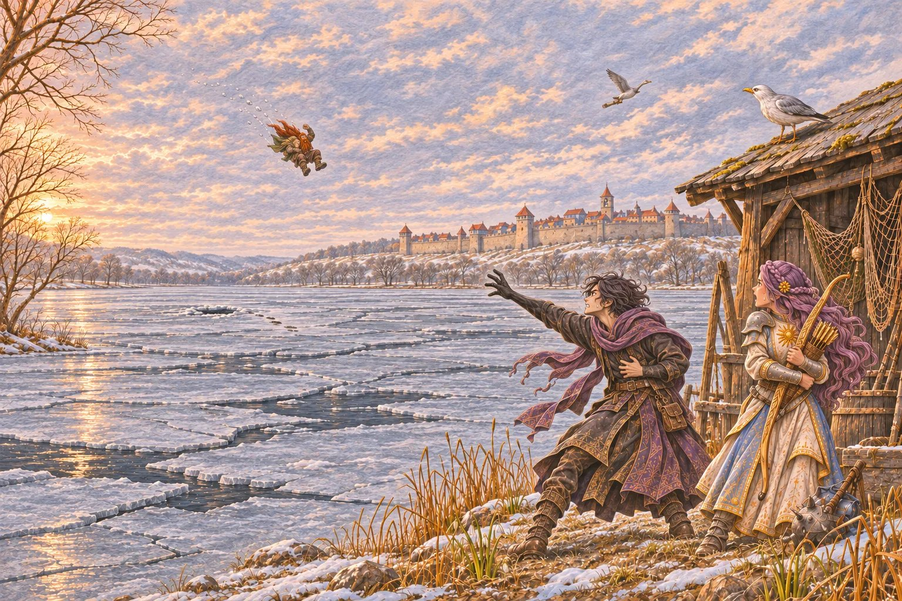

Дамбалдур Трампампури последний бутерброд
повесть о ворчливом гноме, который не любил делиться, и о горе, которая его ждала
Дамбалдур Трампампури последний бутерброд
в которой ворчливый воин, тихий маг, эльфийка-следопыт, храмовница с огненным моргенштерном и орк, не понимающий собственных заклинаний, отправляются в путь. Война началась из-за бутерброда. Бутербродом и закончится
❦
книга первая

Моим детям,
которые слушали эту историю первыми
и всегда спрашивали: «А что было дальше?»
Содержание
- IГде мы?читать →
- IIГусь и короначитать →
- IIIЭкзамен для новичковчитать →
- IVПервое заданиечитать →
- VОркчитать →
- VIБелое пятночитать →
♪ у каждой главы своя музыка — кнопка внизу справа
Карта

Пара слов о мире
Есть на свете земли надёжные, как гномья кладка: их давно нарисовали на картах, по ним ходят телеги, в них пекут хлеб и спорят о соседях. Там стоят людские королевства, шумят эльфийские леса, а в горе-вулкане живут гномы — народ ворчливый, сильный и очень любящий бутерброды.
Но бывает и так: стоит земле остаться без присмотра, стоит в ней завестись чудищам — и она начинает пропадать с карты. Сначала бледнеет, потом становится белым пятном. Тропы в белых пятнах переползают с места на место, а что там водится — не знает никто.
Для таких мест и существует гильдия авантюристов: её люди уходят в белые пятна, чтобы открыть их заново.
А ещё в этом мире идёт самая глупая война на свете. Гномы и эльфы не дружат уже так давно, что никто не помнит, с чего всё началось. Говорят, с бутерброда. Эта книга о том, как война закончилась. И о гноме, который ничего об этом не знал.
Действующие лица

Дамбалдур Трампампур
дворф-воин, умеющий коватьРыжая борода, огромный нос и огромное сердце. Ворчит на всё на свете, кроме бутербродов и друзей.

Римуру
тихий маг, капитанДелает вещи тяжёлыми и лёгкими, плетёт цепи из чернильной тьмы. Улыбается, когда шутят другие.

Элира
эльфийка-лучница, следопытВсегда знает, куда идти. Бережёт друзей больше всего на свете — и таскает кусочки чужих бутербродов.

Теона
храмовница светаЛечит светом, а моргенштерном с огненным сердцем промахивается нарочно, чтобы попасть. И всегда извиняется.

Орк-маг
новый другКолдует по-настоящему, но половину сам не понимает. Хотел бурю — получил тучку, которая льёт суп.
глава первая
Где мы?

Дамбалдур Трампампур проснулся оттого, что ему в бороду падал снег.
Так нельзя, и любой гном вам это скажет. Борода дана гному для красоты, для важности и чтобы хранить в ней мелкий инструмент. А снег в бороде тает, бежит за воротник и портит всё сразу: и красоту, и важность, и инструмент.
Он открыл один глаз и увидел над собой низкое серое небо, похожее на старую перину, из которой потихоньку сыплется пух. Тогда он открыл второй глаз, но небо от этого не исправилось.
— Так, — сказал Дамбалдур. — Кто это сделал?
Ответа не было, только вокруг стояли сосны, высокие и тёмные, засыпанные снегом по самые макушки, и пахло от них холодной смолой. Снег лежал на ветках толстыми белыми подушками, и время от времени какая-нибудь подушка срывалась вниз с мягким «пуф». Одна сосна рядом стояла криво, и гному это не понравилось сразу: он был кузнецом и не любил, когда криво. Будь у него время и крепкая верёвка, он бы эту сосну выпрямил. За соснами поднимались белые горы с синими тенями в складках, а что было за горами, он не видел, и это ему тоже не понравилось.
Гном сел и проверил хозяйство, как делает всякий порядочный гном, прежде чем начать волноваться. Шлем был на месте, и вмятины на нём все свои, родные: каждую гном знал в лицо и про каждую мог рассказать длинную историю с подробностями. Нагрудник был на месте, и на нём старая руна, древняя-предревняя: о чём она, гном давно забыл. На поясе висели топор, молот и узелок с бутербродами, а в бороде, где им и положено, лежали напильник, моток проволоки и запасная заклёпка.
Узелок был цел, а в нём четыре бутерброда: с сыром, с луком, с рыбой и с вареньем, четыре разных, как положено. Дамбалдур облегчённо выдохнул, и с ближайшей сосны с перепугу снялась ворона. Улетела она, правда, недалеко: села на соседнюю ветку и с большим интересом посмотрела на узелок, но этого гном не заметил.
— Ну хоть что-то в этом мире правильно, — сказал он.
И тут же нахмурился, потому что мир-то был чужой: ни этих сосен, ни этих гор он не знал и понятия не имел, как сюда попал. Вчера они ужинали впятером в кузне у Ревы, их пятого друга, такого же гнома и кузнеца. Рева стоял у горна с молотом в одной руке и с ложкой в другой и, прежде чем разливать, постучал ложкой по котлу, удар, два, удар: он всегда так будил суп. А гном сидел за столом и дул в миску, потому что суп был горячий. А сегодня кругом лес, снег и тишина, какая бывает только там, где сто лет никто не разговаривал: от неё звенит в ушах, как в пустом ведре.
Из снега рядом торчал серый камень, гладкий и круглый, и Дамбалдур стянул перчатку и положил на него ладонь. Так гномы здороваются с горами, а гора, если её вежливо потрогать, обычно что-нибудь отвечает: гудит в глубине, теплеет или ворчит спросонья.
Гора под ладонью молчала.
— Спит, — определил он. — Крепко. И незнакомая.
Он надел перчатку, набрал побольше воздуху и крикнул во весь голос, каким гномы зовут друг друга через три пещеры:
— Эй, есть тут кто-нибудь?
— Есть, — ответили у него над головой. — И этот кто-нибудь хочет знать, почему ты так громко храпишь.
Он задрал голову и увидел Элиру: она сидела на толстой ветке, свесив ноги. Светлые волосы до подбородка у неё растрепались, на плаще лежал снег, а вид у неё был скучающий: сидела она там, похоже, давно и ждала, когда он проснётся сам.
— Я не храплю, — сказал Дамбалдур. — Я дышу. Мощно.
— С соседней горы от твоего дыхания осыпались камни, — сказала Элира и бесшумно спрыгнула в снег, почти не оставив ямки. — Я тебя по ним и нашла. И встань со снега. Застудишься.
— Я гном! Гномы не застужаются!
— В прошлый раз ты чихал две недели и говорил, что это пыль.
— Это и была пыль, — сказал Дамбалдур, но со снега всё-таки встал.
Он терпеть не мог, когда Элира говорила с ним, как бабушка с непутёвым внуком. На вид ей было лет двадцать, не больше, но сколько на самом деле, не знал никто, даже она сама. Каждый раз гному хотелось ответить ей что-нибудь очень взрослое и умное, но в голову, как назло, лезло только «сама такая».
— Остальных пока нет, — сказала Элира, а пальцы её уже бежали по бусинам в волосах.
Бусин было четыре, по одной за каждого друга. Рыжая была под цвет одной знакомой бороды, фиолетовая под цвет Теониных волос, тёмная, как чернила, а четвёртая медная. Гном знал эту привычку: бусинами Элира проверяла, все ли на месте, и делала это всякий раз, когда волновалась, хотя вслух ни за что бы не призналась.
— Найдём, — сказал гном. — Ты ведь у нас лучшая в мире ищейка.
— Следопыт, — поправила Элира.
— Я и говорю: ищейка.
Элира фыркнула, присела у сугроба и стала смотреть на снег, долго и с любовью: Дамбалдур так смотрел только на хорошо прокованный клинок. Снег рассказывал ей всё: кто тут прошёл, когда и куда спешил, а гному этот же снег говорил только одно слово: «снег».
— Туда, — сказала она наконец. — Кто-то шёл, падал, вставал, снова падал и, кажется, извинялся перед ёлкой.
— Теона, — сказали они хором.
— Идём, — распорядился гном. — Я впереди.
— Ты затопчешь следы.
Дамбалдур задумался, и думать об этом ему было неприятно, потому что ходить впереди он любил больше всего на свете, если не считать хорошей ковки.
— Я впереди, но сбоку, — решил он.
И пошёл впереди, но сбоку, по пояс в сугробе, пыхтел на весь лес и был очень доволен, что всё так ловко придумал.
Теону нашли у замёрзшего ручья. Она была самая младшая из них и совсем недавно вышла из храмовой школы. Лёд на ручье был зеленоватый, с белыми пузырями внутри, и под ним что-то булькало: ручей ворочался во сне. Теона сидела на камне в обнимку с моргенштерном и вежливо разговаривала с ёлкой, в которую только что врезалась.
Моргенштерн у неё был огромный: длинная рукоять, а на конце железный шар в шипах, тяжёлый, как бочонок с гвоздями.
— Простите, пожалуйста, — говорила Теона ёлке. — Я вас совсем не заметила. Вы такая… зелёная.
— Теона! — крикнула Элира.
Теона подскочила, увидела друзей и просияла, и даже ёлка рядом с ней, кажется, повеселела. Обнимать Дамбалдура Теона кинулась прямо с моргенштерном в руках, потому что положить шар не догадалась, и шипы вежливо звякнули о шлем. Шар был тёплый, снег на нём таял, и сквозь трещины мерцал оранжевый огонь.
Гном первым делом осмотрел шар: не треснул ли, не остыл ли. Этот моргенштерн он ковал вдвоём с Ревой, а рука у Ревы была почти такая же верная, как у Дамбалдура. За шар гном волновался больше, чем за собственный шлем, поэтому постучал по нему костяшкой и послушал гул, как доктор слушает больного.
— Цел, — сказал он с облегчением и посмотрел на Теону. — И ты, я вижу, тоже.
— Я думала, я одна, — сказала Теона, и голос у неё дрогнул. — Проснулась, а вокруг только снег. В храме нас учили: если потерялся, сиди на месте и считай. Я сидела и считала до тысячи, чтобы не бояться. Дошла до четырёхсот двенадцати.
— А дальше? — спросила Элира.
— А дальше встала посмотреть, не идёт ли кто-нибудь, и врезалась в ёлку, а ёлка сбила меня со счёта, и пришлось начинать сначала.
Гном хотел сказать, что ёлки сами виноваты, раз растут где попало, но посмотрел на её покрасневший нос и промолчал. Вместо этого он стряхнул снег с её капюшона, да так старательно, будто снег лично его обидел.
Последним нашёлся Римуру, их маг и капитан, и его следы Элира узнала сразу: одна ровная цепочка шла от скалы к скале и ни разу не вильнула. Римуру не падал, не храпел и ни во что не врезался, а сидел под скалой, очень прямо, и смотрел туда, откуда они вышли: видно, заранее знал, с какой стороны они появятся.
Был он худой, на вид совсем мальчишка, а в длинном тёмном плаще казался ещё тоньше, как ветка, на которую повесили сушиться одежду. Волосы у него были чёрные, с тёмно-фиолетовым отливом, а на пальцах темнели чернильные пятна, которые не смывала никакая вода.
— Я знал, что Элира найдёт, — сказал Римуру, поднимаясь. — Поэтому сидел на одном месте. Того, кто бегает, искать труднее.
— А если бы не нашла? — спросила Элира.
Римуру подумал, честно и не торопясь.
— Тогда я бы долго сидел, — спокойно сказал он.
Элира от этих слов даже выпрямилась, и гном знал почему: за одно такое слово капитана она нашла бы в снегу кого угодно, хоть потерянную пуговицу.
Пока четверо стояли посреди заснеженного леса и смотрели друг на друга, живые и целые, Дамбалдур пересчитал всех по головам три раза, и все три раза вышло четыре, а надо было пять.
— А Рева? — тихо спросила Теона.
— Пятого следа нет, — сказала Элира. — Я смотрела всю дорогу.
— Рева не пропадёт, — сказал гном. — Рева из любой дыры вылезет с готовой подковой.
Вышло бодро и громко, а топор он всё-таки сжал покрепче, чтобы хоть топор не потерялся.
— Найдём людей, спросим про гнома с молотом, — сказал Римуру. — Такого запомнят.
— Ну, — сказал гном. — А теперь кто-нибудь скажет мне, где мы?
Никто не сказал, зато все трое, не сговариваясь, повернулись к Римуру.
— Магия спит, — сказал Римуру. — Она здесь. Но не отвечает.
Сказал он это ровно, только гном видел, как капитан сжал пальцы в кулак и разжал, проверяя, не завалялось ли там хоть немного силы. Для того, кто привык быть самым сильным, это было всё равно что кузнецу взяться за молот и не суметь его поднять. Жалеть капитана вслух гном не стал: жалости тот не любил.
— На соснах ни одной зарубки, — сказал Римуру, помолчав. — В снегу ни одной тропы.
— Даже звериные следы старые, — сказала Элира. — Следы читаю. А куда идти, не знаю.
Для следопыта признаться в таком было хуже, чем для гнома остаться без обеда.
Теона посмотрела на свои ладони, проверяя, на месте ли в них свет, которым её учили лечить, и промолчала, только крепче прижала к себе моргенштерн.
Дамбалдур это заметил, но говорить ничего не стал, потому что слова в таких случаях выходили у него кривые, как гвозди, забитые левой рукой. Он просто встал так, чтобы загородить её от ветра.
— Развели тут сырость, — сказал он. — Сейчас я попрошу удачи, и всё наладится.
— Может, не надо? — быстро спросила Элира.
Гномье колдовство она видела много раз и знала: удача от него приходит всегда, только никогда не приходит одна.
Но гном уже начал. Сперва он побурбурил пальцем по губам, бур-бур-бур, потом шлёпнул себя по щекам, по левой и по правой, звонко, и эхо ответило ему из-за ручья. Дёрнул себя за оба уха разом, перекувырнулся через голову прямо в снегу, встал весь белый, как клёцка в муке, и торжественно хлопнул себя по пузу.
Теона смотрела, открыв рот, а Римуру смотрел внимательно и не моргал.
Так гномы колдуют, и что выйдет, не знают даже сами гномы: в этом, говорят, весь интерес.
С сосны сорвалась шишка и упала гному точно в ладонь, а в шишке сидел орех, крупный и целый.
— Ха! — сказал Дамбалдур.
Потом с той же сосны съехал весь снег, разом, одной большой белой шапкой, и весь он достался Элире.
Из сугроба показалась светлая макушка, а за ней два очень спокойных глаза.
— Это на удачу, — объяснил гном.
— На чью? — спросила Элира.
— У него магия не спит, — сказал Римуру, не сводя с гнома глаз.
Гному от этого взгляда стало неуютно и приятно сразу, потому что так капитан разглядывал только те вещи, которые потом обязательно пригодятся.
Орех Дамбалдур расколол о шлем и поделил на четверых: вышло по крошке, зато по честной.
— Ладно, — сказал он, жуя. — Значит, будем как все. Ногами. Идём вниз по ручью, вода всегда выводит к жилью!
Никто не двинулся с места.
Римуру поднял голову, а когда он так делал, все замолкали, даже гном, и знали: сейчас капитан скажет, что делать, и спорить потом не захочется.
— Идём туда, где люди, — сказал он. — Где люди, там дороги. Где дороги, там карты. А по карте поймём, где мы.
Он подумал, послушал, как под зелёным льдом булькает вода, и добавил:
— Вниз по ручью.
— Я так и сказал! — возмутился гном.
— Ты сказал громко, — объяснила Элира, вытряхивая снег из капюшона. — А он сказал, и стало понятно.
— А я сказал первым, — добавил Дамбалдур, чтобы последнее слово осталось за ним.
Перед дорогой он стукнул молотом по ближнему камню и объяснил Теоне, что это гномья примета: зазвенит камень, значит, дорога будет твёрдая, а отзовётся глухо, значит, жди ям. Камень подумал и сказал «бум».
— Ямы, — сказал гном. — Я предупредил.
Потом он развязал узелок, пересчитал бутерброды, хотя прекрасно помнил, сколько их, и объявил:
— Внимание. У нас четыре бутерброда. Делим на неделю, по кусочку в день.
Делил он по-кузнечному: вытянул из бороды проволоку, отмерил, поставил ногтем зарубки и только после этого взялся за топор. Кусочки вышли одинаковые, ровные, как монеты, и такие же маленькие.
— По справедливости, — сказал гном. — Остальное никто не трогает. Особенно ты, Элира.
Элира невинно посмотрела в небо, серое и совершенно пустое.
А капитану гном подложил второй кусочек.
— Ты тощий, — сказал он. — Смотреть больно.
Если гнома ловили на доброте, он начинал ворчать вдвое громче, поэтому ловить его никто и не пытался. Римуру молча съел кусочек: если гном решил кого-нибудь накормить, проще съесть, чем спорить.
Через снежные горы шли пять дней. Снег был сверху, снизу, в сапогах и за шиворотом, а по утрам брови у всех белели от инея, и гном говорил, что они похожи на четырёх маленьких дедушек.
Римуру шёл впереди и за день говорил слов десять, не больше. Иногда он останавливался, смотрел на снег впереди и молча сворачивал в сторону, хотя прямая дорога была ровнее. В первый раз гном заворчал, что так они и к весне до людей не дойдут. Через час выяснилось, что там, куда капитан не пошёл, был обрыв, присыпанный снегом, и гном ворчать перестал, на целых полдня, только сказал, что камень, между прочим, предупреждал.
— Откуда вы знали? — спросила Теона.
— Снег там лежал гладко, — сказал Римуру. — Слишком гладко.
А Дамбалдур здоровался с каждой горой и про каждую говорил Теоне одно и то же:
— Спит. Тут все спят. Как сурки.
Теона откопала под снегом траву от кашля, а Элира показала ей, где растёт ещё. Кашля ни у кого не было, но Теона всё равно набрала целый пучок, и гном до вечера старался не кашлять, чтобы его не начали лечить.
Элира на каждом привале забиралась повыше, на скалу или на сосну: оттуда ей были видны все свои.
Однажды в полдень Элира остановилась посреди тропы и понюхала воздух.
— К вечеру с реки поднимется ветер, — сказала она. — Заночуем за скалой.
— С какой реки? — спросил гном. — Тут один ручей, и тот спит.
— Откуда знаешь? — спросил Римуру.
— Не знаю, — сказала Элира.
— Это у неё от возраста, — объяснил гном Теоне. — У стариков перед ветром ноют колени.
— В мои-то годы, — сказала Элира, — уже всё отныло.
К вечеру поднялся ветер, а они сидели за скалой, и про колени гном больше не шутил.
А хуже всех был второй день пути, и про него надо рассказать отдельно: в тот вечер кончились бутерброды.
— Как это кончились? — спросила Теона. — Мы же делили на неделю.
Дамбалдур покраснел до самой бороды, а борода у него была рыжая, так что покраснел он, можно сказать, целиком.
— Я делил, — сказал он с достоинством. — И проверял, не испортились ли. Каждый. Тщательно.
— И как? — спросила Элира.
— Не испортились, — вздохнул гном. — Просто неделя получилась короткая. Гномья неделя. Она быстрее.
Элира нагнулась и подняла из снега чёрное блестящее перо, воронье, а на пере висела хлебная крошка с капелькой варенья.
Дамбалдур сделал вид, что не видит никакого пера: пусть лучше думают, что он обжора, чем узнают, что гнома, кузнеца и воина обокрала обыкновенная ворона.
Элира повертела перо в пальцах и молча спрятала его в рукав: подшучивать над гномом она обожала, но своих не выдавала никогда.
А у Римуру на миг потеплели глаза: капитану тоже было смешно.
А Теона только вздохнула, и в животе у неё громко заурчало.
От этого звука гному стало хуже, чем от любой ссадины.
— Что случилось? — спросил он сердито.
— Ничего, — сказала Теона. — Это не я. Это живот.
— Всё, — сказал Дамбалдур и встал. — Я пошёл. Всё исправлю.
Элира спросила, куда это он, но гном уже шагал к ручью.
Ручей здесь был широкий, с толстым синеватым льдом, и гном постоял над ним, примерился и стукнул по льду кулаком, легонько, как ему казалось.
Лёд ахнул и взорвался: вверх полетели куски, брызги и три сонные рыбы, а сам гном от собственного удара сел на лёд и поехал. Ехал он спиной вперёд, вниз по ручью, и крутился, как пуговица на тарелке, до самого поворота, а там скрылся, и эхо ещё долго повторяло за ним «о-о-ой».
Его не было так долго, что Теона начала считать вслух, а Элира залезла на самый высокий камень.
Когда Дамбалдур вернулся, отряхивая бороду от ледяной крошки, рыбы уже лежали на берегу: две на снегу, а третья у Римуру в капюшоне. Римуру вынул её двумя пальцами, как вынимают из кармана носовой платок, и положил к остальным.
— Вот, — сказал гном. — Исправил. Чего смотрите? Я не для вас старался. Мне просто лёд не понравился.
Рыбу испекли на углях, пахла она дымом и рекой, и Теона съела свою до последней косточки и уснула раньше, чем стемнело, а гном сидел у огня и сердито дул на кулак.
В ту же ночь Элира нашла следы, огромные и глубокие: в каждый поместилась бы бочка. Она постояла над ними, а вернувшись, сказала только:
— Ночуем без костра.
Гном хотел поспорить, но посмотрел ей в лицо и не стал, потому что, когда Элира переставала шутить, спорить с ней не хотелось даже ему.
Без костра было совсем холодно, и они сидели вчетвером, прижавшись спинами к скале, а мороз забирался под плащи, в рукава и за воротник. Теона проснулась и застучала зубами, да так, что на коленях у неё позвякивал моргенштерн.
— Сейчас согрею, — шепнул Дамбалдур.
Колдовать громко было нельзя, и он колдовал шёпотом: побурбурил по губам, бур-бур, дёрнул себя за левое ухо и трижды погладил пузо.
Борода у него стала тёплая, по-настоящему тёплая, хоть руки грей, и Теона ахнула и протянула к ней ладони.
И тут борода засветилась ровным рыжим светом, на всю скалу, как фонарь на ярмарке.
— Погаси, — прошипела Элира.
— Я не знаю как!
— Тебя видно с той стороны ущелья!
Элира сдёрнула с себя плащ и накрыла бороду вместе с гномом, и под плащом сразу стало светло и уютно. Туда немедленно залезла Теона, а за ней, помедлив, и Римуру, сложившись почти вдвое.
Сама Элира осталась снаружи, на холоде, сторожить.
— Сиди и не свети, — сказала она.
— Как я могу не светить, если я свечу? — глухо спросили из-под плаща.
Под плащом было тесно, пахло дымом, мокрой шерстью и немного печёной рыбой, и скоро там стало совсем тихо.
— А мы вернёмся домой? — спросила Теона шёпотом.
Никто не ответил сразу: гном, например, думал об этом уже два дня, только вслух не решался, и, судя по тишине, не он один.
— Звёзды здесь другие, — сказал Римуру, который сидел у самого края и смотрел в щёлку между плащом и скалой. — Ни одной знакомой. Я смотрел каждую ночь.
Теона сглотнула так громко, что это услышала даже Элира снаружи.
— Значит, выучу эти, — сказал Римуру тем же голосом, каким говорил «вниз по ручью».
Гном поверил сразу: раз капитан решил, значит, выучит, хоть за год, хоть за десять.
— Правило девятое, — сказала Теона дрожащим голосом. — Храмовница не боится темноты.
— А ты боишься? — спросил гном.
— Правило не говорит, что нельзя.
— Я один раз уже потеряла всех друзей, — сказала Элира снаружи. Из-под плаща гному видна была только её рука, и пальцы держали медную бусину. — Давно. Больше не собираюсь. Куда вы, туда и я. А где дом, разберёмся.
— Разберёмся, — сказал Дамбалдур. — Вот найду того, кто нас сюда закинул, и поговорю с ним. Коротко.
Он подвинулся и подставил Теоне плечо, широкое, с меховым воротником, тёплым и колючим.
Римуру отодвинулся от щёлки и уступил её Теоне.
— Посчитай мне звёзды, — сказал он. — Те, что поярче. Мне нужно знать, сколько их.
Теона приникла к щёлке и стала считать, шёпотом, загибая пальцы. На двадцать третьей звезде голос у неё стал тише, на двадцать седьмой совсем пропал, и она уснула у гнома на плече.
Римуру не спал: он снова сидел прямо и смотрел в щёлку, в темноту, туда, где Элира нашла следы. Гном знал, что капитан всегда засыпает последним, если вообще засыпает.
Тогда гном высунул из-под плаща руку и потянул Элиру за рукав.
— Залезай. Тут место есть.
— Я сторожу.
— Сторожи отсюда. Застудишься.
Элира помолчала: наверное, вспомнила про две недели и пыль. И залезла.
Борода светила до самого утра, всё слабее и слабее, а гном ещё долго сидел с открытыми глазами и думал про дом. Какой дом и где он, Дамбалдур не знал, просто думал. Слово было тёплое, как рукавица, которую сушили у огня.
На четвёртый день они шли по широкому белому склону, где сугробы лежали горбами, круглые и одинаковые, один к одному. Ветер дул в спину, снег скрипел под сапогами, и гном как раз объяснял Теоне, почему настоящий топор закаливают в масле, когда сугроб рядом с ними встал.
Он был втрое выше Дамбалдура, и белая косматая шерсть свисала с него клочьями, вся в сосульках. Руки у него доставали до земли, пахло от него мокрой псиной и прокисшим молоком, а сверху на них смотрели два маленьких синих глаза, глупые и голодные.
— Тролль, — сказала Элира и выхватила стрелу.
Второй сугроб тоже встал, а за ним и третий.
Элира молча достала ещё две стрелы.
— Строимся! — скомандовал Дамбалдур и перехватил топор. — Я в середине, Элира…
— Нет, — сказал Римуру.
И гном замолчал, не договорив, кто где стоит.
— Ты впереди, один, — сказал Римуру. — Они пойдут на самого громкого. Элира, на камень. Теона, справа. Целься в тролля.
Элира в два прыжка взлетела на большой валун.
— Она же промажет! — сказал гном.
— Да, — сказал Римуру.
Теона вежливо кивнула, потому что капитан был совершенно прав.
Первый тролль выдрал из склона глыбу льда размером с сундук и швырнул.
Глыба летела прямо в Теону, а Теона стояла с моргенштерном в руках и смотрела на неё круглыми глазами: в храме её учили многому, но про летающие сундуки там не рассказывали.
Дамбалдур прыгнул глыбе навстречу, она ударила его в шлем и раскололась на куски, а сам он укатился в сугроб, только сапоги мелькнули.
— Новая вмятина, — сообщил он, поднимаясь и ощупывая шлем. — Вот теперь я злой.
Тролль, который кинул глыбу, посмотрел на свои пустые лапы, заглянул себе под ноги и оглянулся через плечо: он никак не мог понять, куда она делась, и, похоже, подозревал, что её кто-то стащил.
Пока он искал, Элира выстрелила, стрела ушла троллю в плечо, и тролль заревел, а с соседней скалы от его рёва съехал снег.
Вторую стрелу Элира пустила в тролля, который подкрадывался к гному сзади, но стрела отскочила от его шерсти, как от войлока.
— Сзади! — крикнула Элира.
Но было поздно: второй тролль уже сгрёб Дамбалдура в охапку и поднял над землёй, выше собственной головы.
— Поставь, где взял! — заорал гном, дрыгая ногами в воздухе. — Я тебе не полено! И кто так хватает? Локти шире! Спину ровнее!
Тролль не поставил. Он сжал лапы, медленно и сильно, у гнома затрещали ремни нагрудника, и гном перестал кричать, потому что кричать стало нечем: воздуха не было.
Кольчуга под нагрудником жалобно звякнула, одно колечко лопнуло и улетело в снег, а Теона закричала: «Дамбалдур!»
— Пусти, — прохрипел Дамбалдур. — Ты мне… кольчугу помнёшь! Я её сам плёл!
Он упёрся локтями и надавил плечами, и лапы тролля медленно, со скрипом, разошлись в стороны. Гном выскользнул, ухватил тролля за косматую лапу, крякнул и перебросил его через себя.
Тролль пролетел над сугробом, кувыркнулся и съехал по склону на спине, как на санках, и вид у него при этом был почти довольный.
А гном не рассчитал: он крутанулся вместе с троллем, отпустил его на полкруга позже, чем надо, и сам улетел в другую сторону, прямо в сосну, и сосна загудела сверху донизу.
Элира опустила лук и посмотрела на гнома внимательнее, чем смотрела даже на следы.
— Ты сейчас поднял тролля, — сказала она.
— Он сам, — отмахнулся гном, держась за сосну, чтобы та перестала кружиться. — Поскользнулся.
И, кажется, сам в это верил.
Первый тролль, тот, что со стрелой в плече, бросился на них, и тут Теона подняла моргенштерн.
— Извините, пожалуйста, — сказала она троллю. — Я сейчас буду вас бить. Мне очень неловко.
Шар загудел, низко и сердито, и сквозь трещины полыхнуло оранжевым.
С Теоной всегда так: куда она целится, туда не попадает. Зато уж куда попадает, там потом долго ничего не растёт. Хочешь попасть в лёд, целься в тролля, и Теона так и сделала.
Шар ударил в лёд прямо у ног тролля, лёд зашипел, затрещал, из-под удара рванул горячий пар, и на миг ничего не стало видно. Когда пар рассеялся, тролль стоял мокрый, с голым розовым боком, где растаяла шерсть, и с ужасом смотрел на Теону.
— Я же предупреждала, — виновато сказала Теона.
Тролль попятился, прикрывая голый бок лапой, а Элира с камня поняла главное первой.
— Они боятся тепла! — крикнула она.
Третий тролль всё это время сидел в снегу, крепко зажмурившись: видно, думал, что раз он никого не видит, то и его никто не видит. Теперь он открыл глаза, встал и поднял над головой огромный снежный ком, целясь в Римуру.
Римуру стоял за камнем и не двигался, пока тролль не замахнулся. Тогда он нагнулся, слепил снежок, маленький и самый обыкновенный, и не спеша бросил его.
Снежок полетел, а на середине пути вдруг потяжелел, как булыжник, и ударил тролля в живот с глухим «бумм», а тролль охнул, уронил свой ком себе на голову и сел.
На снегу у ног Римуру, там, где он лепил снежок, темнело чернильное пятнышко.
— Это ты? — спросила Элира.
Римуру не ответил: он долго смотрел на ладонь, а потом осторожно сжал её, как будто поймал птицу. Лицо у капитана осталось спокойным, но гном поспорил бы на свою бороду, что тот рад.
— Попало же, — сказал гном. — Остальное потом разберём.
Тролли сбились в кучу, все трое: мокрый, сидячий и тот, что съехал на спине и выбрался обратно весь в снегу. Они заворчали и снова пошли вперёд, медленно, плечом к плечу.
Римуру быстро оглядел склон, троллей и лёд, который ещё дымился после первого удара.
— Теона. Самый большой.
Он ещё договаривал, а Теона уже поднимала шар и целилась в самого большого тролля, старательно, даже высунула кончик языка.
Шар ударил в склон у троллей под ногами, пар рванул столбом, и лёд под троллями стал мокрый и гладкий. Все трое сели и поехали вниз, сначала медленно, потом быстрее, и с воем скрылись в метели. Последним уезжал тот, что с голым боком, и лицо у него было обиженное, как у кота, которого вынесли из кухни.
— Мы ковали этот шар для врагов, — сказал Дамбалдур, гордо глядя им вслед. — Но для льда, выходит, тоже годится.
Гном сел в сугроб: борода у него была в снегу, шлем съехал на нос, а из-под шлема по лбу бежала тонкая красная струйка. Теона опустилась рядом, положила ладонь ему на лоб и закрыла глаза. От ладони пошло тёплое золотое свечение, совсем слабое, едва заметное, и ссадина затянулась, но не до конца: осталась розовая полоска.
— Получилось, — удивлённо сказала Теона. — Свет ещё со мной. Только его мало.
— Хватит и такого, — сказал Дамбалдур.
— На что жалуетесь? — строго спросила Теона, потому что так храмовнице положено спрашивать больных, даже если больной сидит в сугробе и сам прекрасно знает, на что.
— На троллей, — сказал гном.
Теона серьёзно кивнула: ответ был правильный.
Римуру тем временем походил по снегу, нагнулся и молча протянул гному лопнувшее колечко от кольчуги. Как он нашёл его в целом сугробе, никто не понял, и гном от растерянности сказал ему «спасибо» вежливо, совсем как Теона.
— Я считаю, это была блестящая победа, — объявил он, пряча колечко в бороду, поближе к заклёпке. — Особенно моя часть.
— Твоя часть, — сказала Элира, спрыгивая с камня, — это когда тебя носили на руках?
— Это была военная хитрость. Я подбирался поближе.
На пятый день горы кончились. Четверо поднялись на узкий перевал, где ветер дул с двух сторон разом, и встали как вкопанные. Внизу лежала широкая долина, синяя от вечерней тени, с тёмными пятнами лесов и серебряной ниткой реки. А за долиной, выше облаков, стояла гора.
Она была огромная и тёмная, цвета старого железа, с острой обломанной вершиной, и над вершиной вилась тонкая струйка дыма. На склонах блестели чёрные гладкие скалы, точно кто-то пролил стекло, а оно взяло и застыло. А у самого подножия, далеко-далеко, мерцали тёплые огоньки.
— Обсидиан, — сказал Римуру. — Камень из огня. Это вулкан. Гора с огнём внутри.
Дамбалдур снял шлем и просто держал его в руке, а снег падал ему на рыжую макушку, и он этого не замечал.
Элира и Теона переглянулись, и лица у обеих вытянулись сильнее, чем при троллях, потому что гном молчал. А гном не молчал никогда: он спорил, шутил, жевал, что-нибудь чинил и чем-нибудь был недоволен, и даже во сне бормотал, что подушку набивали криво.
Ветер донёс со стороны горы запах: дым, горячий камень и железо.
Запах кузницы.
У гнома защипало в носу. Он смотрел на огоньки у подножия, и ему хотелось туда, как хочется под одеяло, когда замёрз. Но этой горы он не знал и был уверен, что видит её первый раз в жизни, поэтому совсем непонятно было, почему так щиплет в носу.
Он присел, стянул перчатку и положил ладонь на камень перевала.
Камень был тёплый.
Тёплый изнутри, хотя кругом лежал снег: как бок печки, в которой с вечера пекли хлеб.
— Не спит, — сказал Дамбалдур очень тихо.
— Дамбалдур? — Элира тронула его за плечо. — Ты как?
— Нормально, — сказал он и откашлялся. — Гора как гора. Большая. Дымит. Ничего особенного.
Он постоял ещё немного, а потом сел в снег, обхватил колени, перекатился бочонком туда и обратно, трижды дунул себе в бороду и сказал горе: «Здрасьте». С горой, которая не спит, нехорошо было не поздороваться как следует.
У всех четверых развязались шнурки, разом, на обоих сапогах, все шестнадцать кончиков, и Теона наступила на свой и села в снег.
А потом стих ветер, сразу и весь. Снег перестал лететь в глаза, и тучи над тропой разошлись в стороны, как занавески на окне, так что вся дорога вниз стала видна до самого леса.
— Ой, — сказала Теона из сугроба. — У вас получилось!
— В лесу была шишка, — сказал Римуру, завязывая узел. — А тут целый ветер.
— А в следующий раз можно сразу ветер? — спросила Элира, затягивая бантик. — Без шнурков?
Дамбалдур оглядел свои ладони, широкие, в мозолях от молота, и ничего особенного в них не нашёл.
— Повезло, — сказал он, натянул перчатку и надел шлем. — Пошли. Нам к людям.
И они пошли вниз, в долину, мимо горы.
Он оглянулся только один раз. Огоньки у подножия мигнули.
Гора смотрела ему вслед.
глава вторая
Гусь и корона

Внизу снега почти не было, зато был голод.
Снежные горы остались позади, и дорога шла по бурому прошлогоднему лесу, где из-под мокрых листьев торчали камни, а в канавах ещё лежали серые дырявые сугробы. Где-то стучал дятел, и это был единственный звук в лесу, который не напоминал гному про еду, потому что даже ручей в овраге булькал, как суп в котелке.
Три дня без еды гном пережить может, а вот пережить их молча не может ни один гном на свете. Дамбалдур шёл последним и ругал всё подряд. Дорогу он ругал за то, что её клали без уровня, и она то горбилась, то проваливалась. Кусты ругал за то, что растут как попало, а больше всех доставалось собственному животу, который пел на весь лес и ни разу не попал в ноты.
Впереди него шла Теона с моргенштерном на плече и спотыкалась на ровном месте, а перед кочками больше не извинялась, потому что сил у неё не осталось даже на это.
Гном замолчал на полуслове, догнал Теону и снял у неё с плеча дорожную сумку. Сумка была лёгкая, почти пустая, но гном повесил её себе на спину с таким лицом, словно взвалил наковальню.
— Тяжёлая, — пожаловался он и понёс её дальше.
Теона собралась сказать спасибо, но гном уже ушёл вперёд и громко ругал пень, который вырос посреди дороги без всякого спроса, так что спасибо пришлось отложить.
Ещё через десяток шагов он остановился и упёр руки в бока.
— Так, — сказал он сердито. — Хватит, сейчас я всё устрою.
Элира молча натянула капюшон до самого носа, на всякий случай: в первый раз, когда гном что-то устраивал, ей на голову съехал весь снег с большой сосны.
Дамбалдур подёргал себя за бороду, побурбурил пальцем по губам, бур-бур-бур, крутанулся на пятке, звонко шлёпнул себя по пузу и сказал:
— Оп!
Теона затаила дыхание, а Римуру следил за руками гнома, как следят за фокусником, когда хотят понять, где у него спрятан кролик. Сначала не случилось ничего, а потом слева потянуло тёплым.
Пахло свежим хлебом, только что из печи, с хрустящей коричневой корочкой и мягким горячим мякишем, от которого идёт пар, если разломить. Запах был густой и тёплый, хоть режь его ножом и мажь маслом.
Все четверо разом повернули головы налево.
— Хлеб с тмином, — сказала Теона и вздохнула. — У нас в храме такой пекли по четвергам.
— Там печка, значит, там люди, — сказал Римуру. — Идём налево.
— Вот, а вы боялись! — сказал Дамбалдур.
Плохое выяснилось через сто шагов: запах не отставал. Он бежал рядом, как щенок на верёвочке, залезал в нос и рассказывал про корочку, про мякиш и про то, как всё это хрустит. Есть от него хотелось в десять раз сильнее, а до настоящей печки было ещё полдня ходу. Хуже всех пришлось Элире, потому что следопыт работает носом, а её нос теперь чуял только хлеб, хлеб и снова хлеб.
— Убери его, — попросила она из-под капюшона. — Тут тролль пройдёт, а я подумаю, что это булка.
— Оно не убирается, — мрачно сказал гном. — Шевелите ногами.
Все шевелили ногами, и только Теона иногда тихонько, чтобы никто не заметил, нюхала воздух и улыбалась. Ей, похоже, было всё равно, наколдованный это хлеб или настоящий: пахло четвергом.
Запах шёл за ними до самого полудня. К этому времени дорога вывела их на край обрыва и побежала по нему, узкая, двоим не разойтись. Справа стоял густой тёмный лес, а слева земля обрывалась вниз, и далеко внизу, так далеко, что кружилась голова, шумела по камням серая река. Камешки из-под сапог то и дело срывались с края и падали вниз долго, и Теона успевала испугаться за каждый, поэтому шла у самого леса и на обрыв старалась не глядеть.
А потом Элира остановилась: нос ей сейчас не помогал, зато уши у эльфов длинные и острые, и для них даже мышь в траве топает, как лошадь.
— Тихо, — сказала она. — Не мы одни его нюхаем.
В кустах у дороги затрещало. Треск был тяжёлый и неторопливый, словно сквозь лес кто-то нёс шкаф. Кусты раздвинулись, и на дорогу вышел кабан.
Ростом он был с корову, щетина на загривке стояла дыбом, серая и жёсткая, а из пасти торчали два жёлтых загнутых клыка, а маленькие глазки глядели сердито и жадно. Кабан поднял пятачок и шумно, со свистом, потянул воздух.
Гном оглядел щетину знающим глазом.
— Хорошая, — сказал он с уважением. — Из такой щетины щётки для горна вяжут, и служат они годами.
— Он не на продажу, — сказала Элира. — Отойди.
Но кабан уже нашёл, что искал. Пятачок повернулся к гному и замер, потому что запах хлеба шёл от гнома, от его бороды и усов.
Кабан опустил голову и побежал.
Дамбалдур успел только расставить ноги. Он поймал кабана за оба клыка, и его отбросило на шаг, потом ещё на шаг, а сапоги пропахали в дороге две глубокие борозды.
В горах он перебросил через себя тролля, но тогда он голодал всего второй день. Теперь три голодных дня сидели у него в руках и в коленях, и колени дрожали. Кабан сопел, упирался и толкал, и гном ехал назад, медленно, шаг за шагом.
А сзади, в трёх шагах, был обрыв.
Элира натянула тетиву, целясь кабану в глаз, и опустила лук: прямо перед кабаньим глазом торчал гномий шлем. Она шагнула вправо, потом влево, но шлем каждый раз оказывался ровно там же, где глаз.
— Не могу, ты мешаешь! — сказала она. — Он идёт на запах, а запах на тебе!
— Я заметил! — прохрипел гном.
Римуру не двинулся с места. Смотрел он не на кабана, а на обрыв, на сапоги гнома и на Теону, и гном, хоть ему было совсем не до того, краем глаза увидел его лицо. Такое лицо бывало у Римуру, когда он считал, а считал он всегда быстрее всех. Потом он сказал, не повышая голоса:
— Теона. Пояс.
Гном проехал ещё шаг, и до обрыва осталось два.
Теона бросила моргенштерн на дорогу, чтобы освободить руки, подбежала сзади, схватила гнома за пояс и упёрлась.
— Правило шестое, — сказала она сквозь зубы. — Своих не отпускают.
И гном перестал ехать. Сапоги Теоны ушли в дорогу по щиколотку, и кабан напирал изо всех сил, но сдвинуть их не мог ни на палец. Гном почувствовал спиной, как держат его две тонкие руки, и удивился: держали они крепче, чем дубовая доска держит гвоздь.
Кабан фыркнул, сунул пятачок гному прямо в бороду, втянул воздух и задрожал от жадности. С клыков на рыжую бороду потекло.
— Не слюнявь! — взревел Дамбалдур. — Я её два дня расчёсывал!
— Запах твой, — сказал Римуру. — Ты его сделал, ты и убирай.
— Чем?! У меня руки заняты!
— Руки не нужны, — сказал Римуру.
Гном моргнул: а ведь правда, обычно гномы колдуют руками, но, если очень надо, умеют и без рук. Дамбалдур скосил глаза к носу, побурбурил губами безо всякого пальца, бр-р-р, прямо кабану в пятачок, громко чихнул и сказал:
— Кыш!
Запах хлеба соскочил с гнома весь, разом, и уселся кабану на спину.
Кабан замер, понюхал воздух и оглянулся на собственный хвост: хлебом теперь пахло оттуда. Он выдернул клыки из рук гнома, рванул за хвостом и закружился на месте, всё быстрее и быстрее, так что из-под копыт полетели камешки. Хвост убегал, и кабан с визгом умчался в лес догонять самого себя.
Стало тихо, только внизу шумела река, и где-то в чаще, уже далеко, визжал кабан.
Гном сел прямо на дорогу, и руки у него тряслись. На нагруднике белела свежая царапина от клыка, и прошла она рядом со старой руной, у самого края. Гном проверил руну пальцем, а когда убедился, что она цела, выдохнул длинно-длинно.
Теона отпустила его пояс и села рядом.
— Я, кажется, порвала вам ремень, — сказала она.
— Ремень починю, — сказал гном и помолчал. — Держала хорошо.
Больше он ничего не сказал, но Теона порозовела до самых ушей, потому что «хорошо» от гнома стоит дороже, чем «замечательно» от кого-нибудь другого.
Римуру подошёл к брошенному моргенштерну. Поднять его он, конечно, не смог, зато упёрся плечом и перекатил шар поближе к Теоне, чтобы ей не пришлось за ним тянуться.
Гном понюхал свою бороду и скривился: запах хлеба ушёл вместе с кабаном, а от гнома теперь крепко пахло кабаном.
У Элиры снова заработал нос, и первая же новость ей не понравилась: она молча отошла от гнома шагов на десять.
— Я, между прочим, всех спас, — сказал ей вслед гном.
— Спасай оттуда, — сказала Элира. — Я тебя и так хорошо слышу.
Земля людей началась с фермы.
Сначала был забор, длинный и кривой, из серых жердей, и Дамбалдур только вздохнул, глядя на него. За забором тянулось поле, где из-под последнего снега торчала жёлтая щетина прошлогодней соломы, а дальше стоял низкий дом под мохнатой травяной крышей. Из трубы поднимался настоящий дым, и пахло настоящим хлебом, коровой и мокрыми досками. После трёх голодных дней это был самый лучший запах на свете.
Выскочил пёс, лохматый и весёлый, понюхал бороду Дамбалдура, чихнул и с визгом удрал за сарай: видно, с кабанами он уже встречался и дружить с ними не собирался.
А на заборе висели трое детей и считались, кому водить. Путников они пока не замечали: девочка постарше тыкала пальцем то в братьев, то в себя, и все трое выговаривали хором:
Спит гора, и спит кузнец,
спит и молот, и резец.
Только суп сто лет не спит:
— Ждёт того, кто постучит, — договорила Элира вместе с ними, слово в слово, и сама удивилась больше всех.
«Постучит» выпало самому маленькому: палец сестры упёрся ему прямо в нос.
— Тебе водить, — сказала девочка.
— У тебя «постучит» всегда на меня выпадает, — сказал маленький и надулся.
— А она откуда знает? — спросил средний мальчик, и все трое уставились на путников во все глаза. — Это наша считалка.
— Сама не пойму, — сказала Элира.
Но маленький уже разглядел, кто стоит с ней рядом, и про считалку забыли.
— Мама! — заорал он. — Мама, там ходит ёжик в железе!
— Я не ёжик, я гном! — возмутился Дамбалдур.
— Мама, ёжик говорит, что он гном!
Маленький слез с забора, подошёл и, раз уж ему выпало «постучит», постучал кулаком по шлему, и шлем загудел.
— Звенит, — сообщил маленький.
— Конечно, звенит, — сказал Дамбалдур. — Хорошая сталь всегда звенит, а плохая брякает, как пустое ведро. Стучи вот сюда, тут звонче.
И подставил шлем другим боком. Маленький постучал, послушал и остался доволен, а гном остался доволен ещё больше, потому что хорошую сталь в этих краях, оказывается, умели слушать.
Средний мальчик тем временем ходил кругами вокруг Теоны и не сводил глаз с её моргенштерна.
— А можно подержать? — спросил он.
— Нельзя, он тяжёлый, — серьёзно сказала Теона.
— Ты же держишь.
— Я привыкла.
Она поставила шар на землю, чтобы мальчик посмотрел поближе, и земля под шаром просела. Мальчик попробовал качнуть его двумя руками, потом плечом, потом спиной, пыхтя и краснея, а шар этого даже не заметил.
— Мы его с Ревой ковали, — гордо сказал гном, не убирая шлема из-под кулака маленького. — А внутри у шара огонь живёт.
— А можно потрогать огонь? — спросил мальчик.
— Нельзя, — хором сказали гном и Теона.
Девочка постарше на моргенштерн даже не взглянула. Она смотрела только на Элиру: на светлые волосы до подбородка, на лук за спиной, на бусины и больше всего на острые уши, которые торчали из волос.
— Ты настоящая эльфийка? — шёпотом спросила она.
Элира присела, чтобы оказаться с девочкой вровень, и ответила так же шёпотом:
— Самая настоящая.
— А правда, что эльфы воруют бутерброды?
Дамбалдур так и застыл с подставленным шлемом.
— Так дедушка говорит, — объяснила девочка. — Что давным-давно эльфы стащили у гномов самый большой бутерброд на свете. Они поругались, а гора в тот же день как бабахнет! Все побежали кто куда. Гномы говорят, что гору разозлили эльфы, а эльфы говорят, что гномы. И с тех пор они не разговаривают.
Дамбалдур медленно повернулся к Элире, а Элира медленно отвела глаза.
— Дедушка говорит, откусила всего одна эльфийка, — честно добавила девочка. — Один разочек.
— Я такого не помню, — сказала Элира. — В мои-то годы много чего не помнишь.
Сказала она это легко, а пальцы её сами нашли в волосах бусины.
— А я знаю, что это правда, — вдруг сказал Дамбалдур. — Почему, не спрашивайте. Вот тут знаю.
Он постучал кулаком по нагруднику, там, где сердце, и нагрудник загудел в ответ. Живот гнома тут же поддакнул долгим жалобным урчанием.
Мама детей оказалась женщиной доброй и занятой: в одной руке кочерга, в другой ведро. Ёжику в железе и его друзьям она вынесла кувшин молока и горячую лепёшку на четверых, и Теона первой заметила, что палец у неё замотан тряпкой.
— Правило второе: даром брать нельзя, — сказала Теона. — Дайте, пожалуйста, руку.
Она взяла палец в свои ладони и закрыла глаза, и под тряпкой коротко мигнуло золотым, и порез затянулся.
Хозяйка долго смотрела на палец, сгибала его и разгибала, а потом ушла в дом и вынесла вторую лепёшку.
— Лечение окончено, — серьёзно сказала Теона. — Спасибо за лепёшку.
Римуру пустил кувшин по кругу и следил, чтобы каждый отпил по четыре глотка, не больше и не меньше. Гном, который в делёжке понимал толк, считал чужие глотки очень придирчиво, но придраться так и не смог. Молоко было холодное, из погреба, густое, и у гнома от него выросли белые усы поверх рыжих.
Лепёшки делил Дамбалдур, и резал он их топором, впервые в жизни на глаз, без проволоки и зарубок, потому что живот торопил и ждать не желал. Себе он положил самый маленький кусок.
— Я не голодный, — сказал он и отвернулся, чтобы никто не видел, как он смотрит на чужие куски.
К вечеру они добрались до таверны.
Она стояла у самой дороги, кривая и тёплая, как старый башмак у очага. Окна светились жёлтым, из трубы шёл дым, а над дверью на цепях качалась вывеска, на которой был нарисован гусь в короне. Гусь глядел важно, по-королевски, хотя корона у него съехала набок. Изнутри пахло луковой похлёбкой и хлебом, на этот раз настоящим.
Дамбалдур остановился и оглядел таверну снизу доверху.
— Угол завален, крыша просела, — сказал он. — Трубу клал человек, который печку видел один раз, издалека. Заходим, пока не рухнуло.
Внутри было людно, шумно и жарко. Под низким закопчённым потолком висели связки лука и чеснока, в очаге на вертеле крутился и шипел толстый окорок, а за длинными столами сидели возчики, пастухи и торговцы. Но стоило четверым войти, как шум стих, и все уставились на острые уши Элиры, на рыжую бороду Дамбалдура и снова на уши. Кто-то уронил ложку, и она звякнула на весь зал.
Дамбалдур прислонил топор к стойке, на которой сидел деревянный гусь в короне, такой же, как на вывеске, только с отбитым клювом.
За стойкой стоял хозяин, широкий и румяный, с полотенцем на плече. Он протёр одну и ту же кружку четыре раза подряд и наконец сказал:
— Эльфийка. И гном. В моей таверне. В один день.
— Это плохо? — спросила Теона.
— Это небывало! — сказал хозяин. — Последнего эльфа тут видели при моём деде, а гномов я только на картинках видел. Вы надолго? Мне надо сбегать за женой, а то она не поверит.
— Нам бы поесть, — сказал Римуру. — И узнать, где мы.
— Где вы, это просто, — обрадовался хозяин. — Это таверна «Гусь и корона». А если идти дальше по дороге, то через полдня будет большой город, и зовётся он Ратвальд.
Четверо переглянулись: ни про такую таверну, ни про такой город они никогда не слышали.
— А почему гусь в короне? — спросила Теона.
— Так он её и достал! Гусь вынес из реки корону первого короля, это вам тут любой скажет. С тех пор в Ратвальде гусей не едят: их берут на королевскую почту.
Дамбалдур, который от самой вывески думал о жареном гусе, вздохнул и перевёл глаза на окорок.
— А королевство как называется? — спросил Римуру.
— Королевство Трёх Рек, как же ещё.
Это им тоже ничего не сказало. Выходило, что занесло их очень далеко от дома, раз они про такое королевство даже не слышали. Теона взяла Элиру за руку, и Элира руку не отняла, а сжала покрепче. Римуру смотрел в окно, туда, где за долиной темнела гора.
— А огни под той горой? — спросил он, не оборачиваясь.
— Застава, дальняя, у самой подошвы, — сказал хозяин. — Стражники жалуются, что там вечно дымом пахнет. А сама гора зовётся Печная. Тёплая, дымит, а кто там печёт, никто не видел: туда не ходят. Дед говорил, она один раз уже бабахнула, давным-давно, и с тех пор её стараются не будить.
— И вы по лесу ночью не ходите, — добавил хозяин и понизил голос. — Волки нынче с гор спускаются, никогда такого не было. Говорят, наверху им жарко стало.
Элира вынула из колчана стрелу, повертела её в пальцах, проверила перо и убрала назад: волки так волки.
— А поесть, это сейчас, — сказал хозяин. — Садитесь под главную балку, там лучшие места. Таверну мой прадед строил, сто лет стоит! Балка у меня крепче гор!
В таверне опять стало тихо, и все, кто сидел рядом, поглядели на гнома. Что гномы думают про горы, знал каждый.
— Крепче гор? — тихо переспросил Дамбалдур.
Хозяин гордо похлопал по столбу.
Теона зажала рот ладонью, а Римуру спокойно отошёл от стойки на два шага, сел за ближний стол и придвинул к себе солонку, чтобы в неё ничего не насыпалось.
Дамбалдур медленно положил руки на стойку, борода у него встопорщилась, и хозяин попятился.
— Крепче гор?! — переспросил гном. — Да я горы знаю! Я мечи ковал, когда твой прадед пешком под стол ходил! Сейчас я тебе покажу, какая она крепкая!
И он подпрыгнул. Собирался-то он только постучать по балке кулаком и послушать, что она ответит, но ноги у гномов сильные, а возмущение у Дамбалдура было ещё сильнее ног.
БАМ.
Он влетел головой прямо в потолочную балку. Балка треснула, доски разошлись, и Дамбалдур застрял в потолке по самые плечи, вместе со шлемом, бородой и возмущением. Снизу торчали только ноги в тяжёлых сапогах, и ноги болтались.
И тут вся таверна грохнула хохотом. Хохотали возчики у окна, хохотала девушка с подносом, и даже деревянный гусь на стойке подпрыгивал: столько локтей на неё навалилось. А Римуру за своим столом не смеялся, но улыбался, и солонку держал крепко.
— Чаще всего я вижу его именно так, — вздохнула Элира и встала прямо под ним.
— Снимите меня немедленно, — глухо донеслось сверху. — И нечего смеяться. Я проверял вашу балку.
Тянули вчетвером: Элира, Теона, Римуру и хозяин. Дамбалдур выскочил из дыры с громким хлопком, сверху посыпались щепки и пыль, а у хозяина в руках остался сапог.
Хозяин поглядел на дыру в потолке, потом на сапог у себя в руках и расхохотался от души, даже полотенце упало у него с плеча.
— Ну, гном, ну силища! — сказал он, вытирая слёзы. — Знаешь что, ужин и ночлег за счёт заведения, не каждый день у меня гномы потолки бодают. Дыру заделывать не буду, буду гостям показывать.
— Дыру показывай, — сказал Дамбалдур, натягивая сапог. Он задрал голову к балке и помрачнел. — А вот это показывать стыдно.
— Что?
— Балку. Сучок на сучке, скоба ржавая, держалась она у тебя на честном слове. Я такое оставить не могу, я потом спать не буду.
— Да она тридцать лет висит, я её сам вешал!
— Тридцать лет ей было страшно, — сказал гном. — Теона, подержи.
Теона встала на лавку и подняла балку одной рукой, а в другой у неё была ложка, потому что ужин уже принесли, а выпускать ложку Теона не собиралась ни за что.
— Вам не тяжело? — слабым голосом спросил хозяин.
— Нет, спасибо, — вежливо сказала Теона. — А что, должно быть?
Дамбалдур снял с пояса молот, вытянул из бороды проволоку и запасную заклёпку и взялся за дело.
Элира забралась наверх, на соседнюю балку, и уселась там, свесив ноги. Оттуда было удобно подавать гвозди, и подавала она их точно в протянутую ладонь, не глядя, будто они с гномом всю жизнь только этим и занимались.
— Не тот, этот кривой, — сказал гном, повертев гвоздь.
— Он прямой, — сказала Элира. — Ты на него одним глазом смотришь.
Гном посмотрел двумя, и гвоздь оказался прямой. Забил он его молча, но по шляпке стукнул сильнее, чем было нужно.
Римуру держал фонарь и молча показывал пальцем, куда бить. Показывал он всегда точно туда, куда гном и сам собирался ударить, и гнома это немножко злило, а немножко радовало.
Когда гном чинит, он становится совсем другим: борода у него делается мягкая и довольная, а молот стучит ровно и весело, тук-тук, тук-тук. В этот вечер молот выстукивал считалку с фермы: она прицепилась к гному ещё у забора и не отставала. Стучал он недолго: перетянул балку проволокой в три витка, посадил её на заклёпку и расклепал аккуратно, как ювелир.
Когда он слез, балка сидела как влитая. Дыра в потолке стала ровной и круглой, с гладким краем, хоть луну в неё показывай, а на заклёпке блестела маленькая руна: гном выбил её резцом, железным пером кузнецов.
— Что она значит? — спросил хозяин.
— «Не прыгать», — сказал Дамбалдур.
Гости захлопали, и гном от смущения закашлялся и принялся тереть нос рукавом.
Хозяин наконец сбегал за женой. Жена пришла заспанная, в платке, и оглядела острые уши, рыжую бороду и круглую дыру в потолке.
— Циркачи, — сказала она и ушла досыпать.
Ужин был простой и горячий: густая похлёбка с луком, ломти хлеба с хрустящей коркой, а сверху в каждой миске плавали поджаристые шкварки. Дамбалдур ел молча и раз в минуту поднимал глаза на свою заклёпку, проверяя, держит ли. Теона уснула прямо за столом над недоеденной похлёбкой, а Римуру отодвинул её миску и подложил ей под щёку свёрнутый плащ.
Элира утащила из миски Дамбалдура шкварку. Он видел и промолчал.
В другой день он поднял бы страшный крик, потому что таскать у гнома из миски почти так же нехорошо, как прыгать под чужой балкой. Но сегодня он только подвинул миску поближе к Элире.
Ночью, когда все легли, гном обошёл комнату, подоткнул Теоне одеяло и поправил Римуру сапоги, чтобы стояли ровно, носок к носку. А сам сел у окна и смотрел в темноту, туда, где за долиной стояла гора. Смотрел, пока не поймал себя на этом, и тогда сердито задёрнул занавеску, но сразу же отдёрнул обратно. Что его так тянет к этой горе, гном не понимал, и от этого ему было не по себе, как в сапоге не на ту ногу.
Сверху, с крыши, доносился шёпот: Элира опять не спала и повторяла имена, все четыре, по кругу. Римуру, Теона, Дамбалдур, Рева. Римуру, Теона, Дамбалдур… Рева. На четвёртом имени она каждый раз запиналась.
Гном не мешал. Он только послушал, каким по счёту она называет его самого: выходило, что третьим, перед Ревой. Гном хотел было надуться, что не первым, но раздумал: пусть лучше считает, чем молчит.
Римуру, оказывается, тоже не спал: он лежал с открытыми глазами и смотрел в своё окно, туда же, куда гном. Далеко за тёмной долиной, над горой, светилась тонкая красная полоска.
Утром, пока остальные собирались, Римуру подошёл к гному.
— Шишка, тёплая борода, хлеб, кабан, — сказал он. — Всё это было далеко от горы. А ветер был на перевале, ближе всего к горе. Чем ближе к ней, тем сильнее твоя магия.
— И что это значит? — спросил гном и почесал бороду.
— Узнаю, — сказал Римуру.
К полудню они вышли к Ратвальду.
Сначала над дорогой поднялись каменные башни с красными, синими и жёлтыми флагами, которые хлопали на ветру. За ними показались толстые серые стены и высокие ворота: в них прошла бы телега с сеном, а сверху ещё одна. Перед воротами шумела целая река народа: телеги, торговцы с корзинами, стражники в синих плащах, дети, собаки и гуси, и все кричали разом, каждый своё. Пахло дымом, свежими кренделями и конским навозом, и гном так и не решил, нравится ему этот запах или нет.
Город был до того огромный, что даже Дамбалдур на минуту перестал ворчать. А когда снова начал, то начал с ворот: подошёл, постучал по железу и придирчиво подёргал петлю.
— Петли хорошие, — сказал он с удивлением. — Смотри-ка, умеют, когда хотят.
— Люди есть, дороги есть, — сказал Римуру. — Осталось найти карту.
— А платить за неё чем? — спросила Элира.
Все посмотрели на Дамбалдура, потому что карманы у гнома были самые глубокие. Он вывернул один карман, потом другой, и из карманов выпали гвоздь, пуговица и крошки. Гном подумал, подобрал крошки и съел, а гвоздь и пуговицу убрал обратно: в хозяйстве пригодятся.
У Теоны нашлась травка от кашля, завёрнутая в чистый платочек. Римуру молча показал пустые ладони в чернильных пятнах, а Элира развела руками.
У ворот висел деревянный щит, весь заклеенный объявлениями, старыми и новыми, одно поверх другого. Одно было крупнее остальных, с красной печатью внизу:
«ГИЛЬДИЯ АВАНТЮРИСТОВ ищет новичков. Опыт не обязателен. Храбрость обязательна. Кормим».
Дамбалдур прочитал его два раза, и на слове «кормим» задержался особенно надолго, словно учил его наизусть.
— Вот, — сказал он и ткнул в объявление толстым пальцем. — Вот это мне нравится, вот это правильный мир.
— А авантюристы, это кто? — спросила Теона.
— Те, кого кормят, — сказал гном, не отрывая глаз от последнего слова.
А Римуру перечитал объявление ещё раз, медленно, от первого слова до самой печати.
Ниже мелкими буквами было что-то приписано. Теона наклонилась и прочитала вслух, старательно, по словам:
— «Экзамен сегодня в полдень. Опоздавших не ждём. Слабонервных не берём. Эльфов, гномов и прочих тоже берём».
Элира долго смотрела на последнюю строчку.
— Эльфов тут сто лет не видели, — сказала она. — А в объявлении они есть. Интересно, куда все делись.
Гном хотел ответить что-нибудь ворчливое и утешительное, но такого ответа у него не нашлось. Тогда он оглянулся и увидел, что далеко-далеко, на краю неба, над горой поднимается дым. Вчера на закате он был тонкий, в одну нитку, а теперь стал гуще.
Будто кто-то там, внутри, раздувал огонь.
На башне ударил колокол.
— Который час? — спросила Теона.
— Полдень, — сказал Римуру. — Бежим.
глава третья
Экзамен для новичков

Бежать по чужому городу трудно, а бежать по нему на пустой живот ещё труднее. Но хуже всех приходится тому, у кого ноги короче, чем у друзей, а борода длиннее, потому что борода на бегу всё время норовит залезть в рот.
— Не отставай! — крикнула Элира через плечо.
— Я не отстаю! — пыхтел Дамбалдур. — Я прикрываю сзади!
Колокол на башне бил полдень, и каждый удар падал на крыши тяжело и гулко. На четвёртом ударе они проскочили рыбный ряд, где селёдкой пахло на всю улицу. На пятом перепрыгнули через гуся, который стоял посреди мостовой и уступать дорогу никому не собирался, и сразу за ним свернули за угол.
Впереди бежала Элира, легко, почти не касаясь камней, и ещё успевала оглядываться на всех троих. За ней спешила Теона и держала свой моргенштерн высоко над головой, потому что в храме её учили носить оружие через толпу только так. Сквозь трещины в шипастом шаре тлело оранжевое, и люди расступались перед ним сами, без всяких просьб.
А Римуру не бежал, он шёл, быстро и ровно, и почему-то ни на шаг не отставал. Гном топал позади всех и сердито думал, что это нечестно: он работает ногами за троих, а капитан просто идёт.
Куда бежать, им на бегу крикнул стражник, а гильдию они узнали сразу. Она оказалась высоким домом из тёмного дерева, с резными окошками, и была похожа на старый бабушкин буфет, в котором хранят всё самое важное. На крыше вместо флюгера торчал железный сапог и поворачивался носком туда, куда дул ветер. Над дверью были вырезаны какие-то слова, и Римуру на ходу задрал голову, но прочитать не успел.
Колокол ударил в десятый раз, потом в одиннадцатый, и пустой живот гнома отвечал на каждый удар обиженным бурчанием.
С двенадцатым ударом они влетели в дверь вчетвером, а застряли в ней втроём, потому что дверь была одна, а гном широкий. Да ещё у гнома на поясе торчал топор, и Теона рядом держала шар над головой. Сидели они в дверях плотно, ни вперёд, ни назад, а Римуру уже стоял внутри и поправлял рукав. Как он проскользнул мимо гнома, не заметил никто, даже сам гном, а ведь гном стоял в этой двери поперёк.
— Выдохни, — сказала Элира.
Дамбалдур выдохнул, и они высыпались внутрь, как горох из мешка.
В большом зале пахло воском и старой бумагой, а из углов тянуло мышами. Под потолком на цепях висели деревянные колёса со свечами, на стенах щиты, вёсла и рыбацкие сети. А у двери в кладовую на полу стояла тарелка с хлебом и маслом, хотя есть его было вроде бы некому. У стен толпилось человек двадцать: здоровенные парни с мечами, две сестры с копьями, одинаковые до последней веснушки, и рыбак с сетью через плечо. Все они обернулись на шум и разглядывали новичков, не скрываясь.
А одну стену целиком занимала карта, огромная, больше ворот, и такая старая, что углы у неё свернулись трубочкой. Реки на ней были синие, леса зелёные, а дороги рыжие, и только по краям карта белела, словно у художника кончилась краска, а новую ему так никто и не купил.
Римуру подошёл к карте и остановился, а Теона встала рядом, поднялась на цыпочки и стала водить глазами по рекам и лесам. Гном сразу понял, что она ищет хоть что-нибудь знакомое: свой храм, свою дорогу, свой дом.
— А где здесь мы? — спросила она. — Где наш дом?
Римуру провёл пальцем по рекам, по дорогам, по городам, до самого края, туда, где кончалась краска.
— Здесь его нет.
Римуру сказал это спокойно, как про погоду, но гном поёжился, а Элира тронула бусины в волосах, все четыре, одну за другой.
Римуру долго смотрел на белые края, и дольше всего на верхний край, где рисунок выцветал и обрывался. Гном заметил, как у капитана на миг сузились глаза, и понял, что он там что-то нашёл. Но вслух Римуру ничего не сказал, и спрашивать его в такие минуты было всё равно что спрашивать спящую гору, о чём она думает.
За большим столом посреди зала сидела женщина, сухая и прямая, как свечка, с седым узлом на затылке. На носу у неё блестели круглые очки, перед ней лежала толстая книга и стояла чернильница с пучком перьев, а к столу была прислонена трость из обломка весла.
Дамбалдур посмотрел на трость и замер на полушаге.
— Ясень, обточено по руке, — сказал он. — Набойка медная, посажена на клин.
Он помолчал и добавил совсем другим голосом:
— Хорошая работа.
Элира удивлённо оглянулась.
— Опоздали, — сказала женщина, не поднимая глаз.
— Колокол ещё гудит, — сказал Римуру.
Женщина прислушалась, и колокол правда ещё гудел, совсем тихо, на самом краю слуха.
— Хм, — сказала она. — Я госпожа Щук, экзамен сегодня принимаю я. Подходите по одному: имя и что умеете.
— Римуру, маг.
— Какая магия?
— Пока не знаю.
Госпожа Щук обмакнула перо и записала в толстую книгу: «Маг. Не знает какой». Римуру посмотрел на запись и кивнул: всё было записано верно.
— Элира, стреляю из лука.
— Давно?
— Лет триста, а может, пятьсот.
Госпожа Щук посмотрела на неё поверх очков, потому что на вид Элире было лет двадцать, и в книге появилось: «Лучница. Шутит». Элира прочитала это вверх ногами и поджала губы, ведь она и не думала шутить.
Теона подошла к столу, прижимая моргенштерн к груди обеими руками.
— Теона, храмовница, здравствуйте. У вас очень красивый сапог на крыше.
«Храмовница. Вежливая», — написала госпожа Щук, и Теона от удовольствия привстала на цыпочки.
Потом госпожа Щук поискала глазами четвёртого, но над краем стола виднелась только макушка шлема.
— Четвёртый, встаньте, — сказала она. — Вас не видно.
— Сейчас он возьмёт табурет, — сказала Элира.
Насмешки в её голосе не было ни капли: за долгие годы дружбы Элира привыкла, что гному иногда нужен табурет, а сам гном к этому так и не привык.
Дамбалдур подтащил к столу табурет, залез на него, упёр руки в бока и выставил вперёд рыжую бороду, как полководец выставляет знамя.
— Дамбалдур. Гном.
Зал притих, и стало слышно, как потрескивают свечи под потолком.
— Гномов у нас не было сто лет, — сказала госпожа Щук. — А бороды бывают накладные. В прошлом году один привязал мочалку и сказал, что он гном.
— Накладные, — повторил Дамбалдур очень вежливо.
От этой вежливости Теона спряталась за Римуру и правильно сделала. Когда гном кричит, это не страшно, он так разговаривает. А вот когда гном становится вежливым, лучше стоять за кем-нибудь, и лучше за кем-нибудь потолще.
Госпожа Щук протянула руку, ухватила его за рыжую косу бороды и дёрнула.
— Ай!
— Настоящая, — с уважением сказала госпожа Щук.
Тут она заметила старую руну у него на нагруднике и смотрела на неё дольше, чем на бороду, даже сняла очки, протёрла их краем рукава и надела снова. Потом записала: «Гном, 1 шт. Борода настоящая».
— А почему сто лет? — спросил гном.
— Не приходили.
— А на этой неделе? — быстро спросил гном. — Один такой, с молотом, в кармане подкова?
— Сто лет ни одного, — сказала госпожа Щук.
— А где они живут?
— Кто их знает, — сказала госпожа Щук и почему-то посмотрела на карту.
Дамбалдур вдруг понял, что за всю дорогу не встретил ни одного гнома: ни в горах, ни на ферме, ни в этом огромном городе, где было всё на свете, от гусей до селёдки. И внутри у него стало пусто, как бывает, когда выпадет зуб: вроде ничего не болит, но язык всё равно тянется к дырке.
— Ну и ладно, — сказал он громко, чтобы язык перестал тянуться. — Мне и одного гнома хватает.
Ну, двух, прибавил он про себя, если Рева найдётся.
Рядом засмеялся рыцарь, высокий и кудрявый, в латах, начищенных так, что свечи отражались в них, как в новой кастрюле, а на шлеме у него качалось пушистое белое перо.
— Гном, эльфийка и девочка с колотушкой, — сказал он. — Я Бравур Блестящий, запомните имя. На тропе увидите мою спину.
— Это моргенштерн, — вежливо поправила Теона. — Колотушкой отбивают мясо.
Но гном обиделся за моргенштерн куда сильнее, чем сама Теона.
— Колотушка?! Да у него внутри жар, как в горне!
Он оглядел рыцаря от пера до сапог, медленно и придирчиво, как проверяют чужую подкову.
— Латы тонкие, — определил он. — Ковали левой ногой.
Римуру тем временем смотрел ниже лат, на колени рыцаря, где на штанах засохла серая грязь, слой на слое.
— Грязь старая, — негромко сказал Римуру.
— Латы, значит, чистит, а штаны ленится, — сказал гном, и рыцарь перестал улыбаться.
Экзамен был из трёх частей: дверь, умение и тропа. Госпожа Щук вывела всех во двор, постукивая тростью по ступенькам, и встала на крыльце.
— Гильдия ходит туда, где никто не был, — сказала она. — Там всё заперто, завалено и заросло, поэтому сначала дверь. Каждую часть команда сдаёт вместе или не сдаёт.
Двор у гильдии был широкий и утоптанный, и пахло в нём сеном. У забора стоял кривой сарай, рядом клетка с почтовыми гусями, а у дальней стены соломенная мишень с красным кругом, похожая на большой пирог с вишней.
Посреди двора стояла дверь, просто дверь в дубовой раме, без стен и без дома, словно кто-то нарисовал дом, а потом стёр всё, кроме двери. Заперта она была на засов с той стороны.
— Открыть, — сказала госпожа Щук. — Как хотите.
Бравур Блестящий вышел первым, просунул в щель кинжал, поддел засов и распахнул дверь с придворным поклоном.
— Сдал, — сказала госпожа Щук. — Закройте за ним, и следующие.
Из их четвёрки к двери вышли двое, и первой была Теона. Она подняла свой огромный моргенштерн, прикусила губу и посмотрела на засов строго, словно это была задачка, которую она уже три раза решила неправильно.
— Только не целься, — шепнул гном.
— Правило первое: на экзамене хитрить нельзя, — шепнула Теона.
И прицелилась честно, как учили в храме, прямо в засов.
И потому попала в сарай.
Сарай стоял в шести шагах от двери, а теперь он там лежал, весь, ровным слоем досок, и сверху аккуратно лежала его крыша. Из-под досок выбралась курица, взъерошенная и сердитая, посмотрела на Теону одним круглым глазом и ушла за угол жаловаться.
— Простите! — сказала Теона курице, а потом, на всякий случай, и госпоже Щук.
Госпожа Щук только поправила очки и оглядела доски, и губы у неё шевелились: видно, считала, сколько они стоили.
Теона вернулась к своим, волоча шар за собой, и он оставлял в пыли глубокую борозду.
— В храме говорили, что я самая слабая, — тихо сказала она. — А может, я не слабая? Может, я просто мажу?
— По правилам снесла, честно, — сказал гном. — Я знаю, как этот шар бьёт. Сарай со мной согласен.
Теона посмотрела на сарай и немного повеселела: с сараем спорить было трудно.
В храме ведь как было: каждое утро ученицы били соломенное чучело. Теона попадала куда угодно, только не в него: в колокол, в забор, а однажды в котёл с супом наставницы. Чучело стояло целёхонькое, суп был повсюду, и наставницы решили, что сил у Теоны нет совсем.
Потом к двери подошёл гном. Двери гномы открывают по-своему, и на это стоило посмотреть: весь двор вытянул шеи.
Римуру посмотрел на клетку с почтовыми гусями у забора и ничего не сказал.
Дамбалдур дёрнул себя за правое ухо, потом за левое и встал на одну ногу, как цапля на болоте. Он постучал себя по шлему, свистнул в два пальца и показал двери кулак.
— Ну?
В доме гильдии что-то щёлкнуло, а потом протяжно скрипнуло, как старик, когда встаёт со скамейки.
— Кладовая, — сказала госпожа Щук, не оборачиваясь. — Три года не могли открыть: ключ утонул в колодце, а кобольд обиделся. Это наш домашний дух, маленький: ему ставят у кладовой хлеб с маслом, а обидится, так стучит ночами в стенах и ни одного замка не отпирает.
Следом щёлкнуло во дворе, и дверца гусиной клетки распахнулась сама. Гуси вышли один за другим, важные и серые, с трубочками для писем на лапах, построились клином и ушли в ворота. Ни один даже не оглянулся.
А дверь посреди двора стояла запертая.
— За кладовую спасибо, — сказала госпожа Щук. — За гусей вычту.
Гном проводил гусей сердитым взглядом: он хотел открыть одну дверь, а открыл полгильдии, и ни одна из открытых дверей не была той, что нужно.
— Ладно, — сказал он и поплевал на ладони. — Тогда по-людски.
И постучал в дверь кулаком, вежливо, три раза, как стучатся в гости.
На третий раз дверь вылетела из рамы вместе с засовом. Она пролетела через весь двор, перемахнула забор, мелькнула над крышами, уже совсем маленькая, и пропала, а все ещё долго смотрели ей вслед в пустое небо. Где-то далеко, за три улицы, грохнуло, и залаяла собака.
— Открыл, — сказал Дамбалдур.
— Дверь открывают так, чтобы потом закрыть, — сказала госпожа Щук. — А эту унесло на Гусиную улицу. Не сдано. И сарай.
Гном с упрёком посмотрел на свой кулак, как смотрят на собаку, которая опять удрала со двора: кулак, как всегда, сделал больше, чем его просили.
Дальше шло умение, и госпожа Щук села на крыльцо, положив толстую книгу на колени.
Элира вышла с луком и спросила, во что стрелять.
— Во что хотите.
Элира не торопилась: она оглядела мишень, забор, ворота и Бравура, который стоял у забора и сиял на весь двор, и на Бравуре её взгляд задержался. «Девочку с колотушкой» она ему ещё не простила.
Тренькнула тетива, и стрела сняла белое перо со шлема Бравура, унесла через двор и прибила к мишени, в самую вишню. Бравур потрогал голый шлем, поискал перо в волосах, не нашёл и молча сел на скамейку.
Госпожа Щук в первый раз за день подняла брови, Теона захлопала в ладоши, а гном громко сказал, что так и знал, хотя ничего такого заранее не знал.
— Теперь маг, — сказала госпожа Щук и показала тростью на гирю у крыльца. — Вот гиря. Сделайте с ней что-нибудь.
Гиря была чёрная, круглая, с ручкой сверху, похожая на котелок, которому приделали ухо, и двое парней с мечами еле вынесли её и потом ещё долго отдувались.
— Один раз у меня потяжелел снежок, — сказал Римуру, не сводя глаз с гири.
— Гиря и так тяжёлая. Удивите меня.
Римуру поднял глаза на госпожу Щук и на перо у неё в руке. Он протянул руку, и чернила на кончиках его пальцев потемнели и медленно поползли выше, до самых костяшек, так что Дамбалдур затаил дыхание и даже перестал сопеть.
Гиря стояла как стояла.
А госпожа Щук охнула: перо в её руке клюнуло вниз и воткнулось в книгу. Она потянула его одной рукой, потом двумя, но перо не поднималось, и на странице под ним расползалась маленькая клякса, похожая на жука.
— Вы сказали: удивите, — сказал Римуру.
Дамбалдур подошёл, взял перо двумя пальцами, как берут соринку из каши, и подал госпоже Щук.
— Тяжёленькое, — сказал он.
— Велено было гирю, а маг сделал по-своему, — сказала госпожа Щук и вытерла кляксу. — Лучница сдала, а вместе не сдано.
Но на Римуру она посмотрела внимательнее, чем на всех остальных за день.
Гном шёл от крыльца такой гордый, словно перо утяжелил он сам. Хвалить капитана вслух он, конечно, не стал, зато по дороге два раза хлопнул его по спине, и Римуру оба раза качнулся.
— Две части из трёх мы провалили, — сказал Римуру. — Осталась тропа.
Теона крепко сжала рукоять моргенштерна и старалась не смотреть на то, что раньше было сараем.
Тропа начиналась за гильдией, на пустыре, обнесённом высоким забором, и по углам его дымили бочки с сырой соломой. Дым стоял густой и белый, пах мокрым сеном и печкой, которую растопили не теми дровами, и в нём не было видно собственных сапог.
— Это учебное белое пятно, — сказала госпожа Щук. — Про землю, куда давно никто не ходил, люди забывают, и на карте она бледнеет, пока не станет совсем белой. У нас вместо белого пятна дым. На том конце флажки: дойти, взять флажок и вернуться. Кто придёт, когда песок кончится, тот не сдал.
Она перевернула песочные часы ростом с Дамбалдура, и песок в них зашуршал, а гном покосился на часы с подозрением: он не любил, когда кто-нибудь одного с ним роста держится важнее него.
Все бросились в дым, и первым бежал Бравур Блестящий, а латы его гремели, как сундук с подковами, когда его тащат по лестнице.
Гном рванул было следом, но Элира поймала его за меховой воротник.
— Стой. Иди за мной, шаг в шаг.
Она присела, потрогала землю ладонью и оглянулась на Римуру, и Римуру кивнул: веди. Элира повела их вбок, вдоль забора, а гном пошёл за ней и ворчал, что так они до вечера никуда не дойдут.
Слева в дыму кто-то с треском влетел в бочку, а справа двое столкнулись лбами и вежливо сказали друг другу «ой».
— Откуда ты знаешь, куда идти? — пропыхтел Дамбалдур.
— Тут до нас сто раз бегали новички, — сказала Элира. — Туда они неслись как попало, а обратно шли шагом, усталые, уже по правильной дорожке, вот она и утоптана.
Земля под ногами и правда была плотная и гладкая, а по сторонам в дыму торчали кочки и валялись чьи-то потерянные шапки. Шагом они обогнали половину бегущих, и гном перестал ворчать. Почти.
Тут из дыма с рёвом выкатилось чудище, соломенное, лохматое, ростом с телегу, а глаза у него были из жести, каждый со сковородку. Чудище скрипело на каждом шагу, а внутри у него кто-то сердито шипел:
— Левее толкай!
Шипения гном не услышал, потому что сам пыхтел громче.
— Чудище! — заорал он и схватился за топор. — Теона, бей!
В чудище Теона целиться не стала. Про правило первое, что хитрить нельзя, она в дыму забыла и от страха придумала хитрость: шар у неё всегда летит мимо, поэтому целиться надо рядом. Она прицелилась в бочку слева от чудища, чтобы промахнуться и попасть как раз в него, и размахнулась изо всех сил.
И попала точно в бочку. Туда, куда целилась.
Бочка разлетелась, и мокрая солома с густым дымом накрыла чудище с головой. Внутри закашляли в два голоса, кто-то громко чихнул, а потом чудище развернулось и, скрипя колёсами, укатило обратно в дым.
Теона стояла и глядела на свой моргенштерн во все глаза, словно шар вдруг сказал ей «здравствуйте».
— Я попала, куда целилась, — растерянно сказала она. — Первый раз в жизни. Так не бывает.
— Бывает, — сказал Римуру. — Запомни, как это было.
Теона поднесла к глазам свои руки, всё те же, в мозолях от рукояти, и стала разглядывать их, будто видела впервые.
— Там внутри кто-то шипел «левее», — сказала Элира Теоне. — Буду и я шипеть тебе из-за каждой бочки.
— Жаль, — сказал Дамбалдур и опустил топор. — Я только разогрелся.
Флажки торчали из кучи песка у дальнего забора, красные, на тонких палочках, и Теона взяла один и понесла бережно, двумя руками. Обратная дорога шла по верёвочному мостику через яму с грязью.
Яма была широкая и круглая, а грязь в ней серая и густая, как каша, которую забыли на огне. Пахла она болотом и старыми сапогами, и на ней то и дело вздувались пузыри и лопались с громким чмоком.
В яме сидел Бравур Блестящий, и грязь доходила ему до груди, а блестели у него теперь только плечи.
— Помогите! — кричал он. — Тону! Латы тянут!
По мостику над ним один за другим бежали другие новички, и мостик качался и скрипел, но никто не останавливался. Один на бегу крикнул «Извини, время!» и побежал дальше.
Дамбалдур остановился посреди мостика, и Теона с разгону ткнулась флажком ему в шлем.
— Песка в часах осталось на донышке, — сказал Римуру, который считал время с самого начала, с первой песчинки. — Если встанем, придём последними.
Он посмотрел на рыцаря, потом на гнома.
— Вытаскиваем.
— А я что делаю? — рявкнул Дамбалдур.
Он уже сбежал с мостика и лёг животом на край ямы. Римуру молча встал ему на сапоги, чтобы гном не съехал в яму целиком, и тогда гном ухватил рыцаря за ворот и потянул. Грязь чавкнула и не отдала, и Бравур съехал глубже, по самые плечи.
— Латы дрянь, и сам хвастун, — сказал гном. — Сверху тебя не вытянуть.
Он встал, постоял над ямой, отстегнул топор и сунул Элире.
— Подержи. Утонет, новый тут не скую: угля приличного нет.
— Хорошо.
— Лезвие не трогай: ты эльф, вы всё трогаете.
— Это кто тебе сказал? — спросила Элира.
— Борода, — сказал гном и сам задумался: а правда, кто? Борода у него была умная, но иногда говорила глупости, а потом делала вид, что это была не она.
И гном прыгнул в яму, как всегда, с запасом, потому что прыгать без запаса он не умел никогда. Грязь из ямы плеснула до самого мостика и окатила двоих бегущих новичков с головы до ног, и дальше они побежали серые и уже молча.
Рыцарю грязь была по плечи, а гному она оказалась выше шлема. Он ушёл в неё весь, с бородой и сапогами, и сверху лопнул большой пузырь.
Теона ахнула и стиснула флажок, а Элира шагнула к самому краю ямы и обеими руками прижала к груди топор. И перестала дышать вместе с гномом, хотя толку от этого не было никакого.
Грязь лежала гладкая и серая, и пузырей больше не было, а Элира стала розовая, потом красная, и щёки у неё надулись, как у трубача.
И тут Бравур Блестящий начал подниматься, ровно, как тесто в миске, и глаза у него были круглые. Под ним из грязи показались две гномьи перчатки, и на этих перчатках рыцарь доехал до края ямы, а там они бережно выложили его на траву.
Потом вылез Дамбалдур, одного цвета от сапог до шлема, серый и блестящий, и с бороды у него текло.
Теона подбежала к нему, и ладони у неё уже светились тёплым золотым светом.
— Вы наглотались? — строго спросила она. — Правило пятое: грязь глотать нельзя, это не лекарство.
— Я не глотал, я не дышал, — сказал гном. — Гномы в шахтах привычные.
Он покосился на Элиру, которая всё ещё была красная и никак не могла отдышаться.
— А ты чего такая красная?
— Жарко, — сказала Элира.
Гном протянул к ней грязную руку.
— Отдай.
Элира отдала ему топор, и гном тут же прищурился.
— Лезвие трогала?
— Только посмотрела.
— От эльфийского взгляда лезвие тупится, — сказал гном и подозрительно проверил его пальцем, но лезвие было острое. Гном засопел и повесил топор на пояс, а Элира улыбнулась ему прямо в лицо, и сопеть пришлось ещё громче.
Когда они вышли из дыма, четверо и рыцарь, верхняя половина часов была пуста. Рыцарь оставлял за собой на траве серую дорожку, а гном рядом с ним дорожку пошире.
Остальные уже стояли во дворе, чистые и довольные, с флажками в руках. Шестнадцать человек смотрели на опоздавших и старались не смеяться, а некоторые даже и не старались.
— Последние, — сказала госпожа Щук. — Тропа не сдана, и ни одной части из трёх.
— Простите нас, — начала Теона. — Мы хотели…
— Не извиняйся, — сказал гном. С него всё ещё капало, и под сапогами натекла лужица. — Мы всё сделали как надо. Это у них экзамен кривой. Пошли отсюда.
— Стоять. Я не закончила, — сказала госпожа Щук. — Бравур, сколько их пробежало мимо?
Бравур Блестящий вздохнул и снял шлем, а без шлема он оказался лопоухим и усталым и походил теперь на мокрого воробья.
— Шестнадцать, госпожа Щук. Один извинился.
— А вытащили?
— Эти. Гном нёс меня по дну на вытянутых руках.
— По-настоящему его зовут Пим, — объяснила госпожа Щук. — Он служит в гильдии и десять лет падает в эту яму на каждом экзамене.
— И десять лет прошу другую работу, — сказал Пим. — Хвастаться мне тоже велено.
Госпожа Щук подняла трость и показала на слова над дверью. Теперь их можно было прочитать не спеша, и Теона прочитала вслух:
— «Ушли вместе. Вернулись вместе».
Римуру кивнул: кажется, он понял всё раньше остальных, ещё тогда, у грязных колен рыцаря.
— Вы, шестнадцать, приходите через год, — сказала госпожа Щук. — А вы четверо идите к столу.
— Мы же ничего не сдали, — растерянно сказала Теона.
— Яма решает, берём ли вас вообще. А дверь и умение решают, кем берём.
Все пошли в зал, гном оставлял на чистом полу серые следы, большие и сердитые, и по дороге заметил, что тарелка у двери кладовой стоит пустая, без единой крошки. Госпожа Щук выложила на стол четыре деревянных значка на верёвочках, и каждый значок был вырезан в виде лаптя, плетёного башмака из коры.
— Ни одной части из трёх. Первый ранг. Лапоть.
— Кто лапоть? — не понял Дамбалдур.
— Вы, все четверо. Сдадите одну часть, станете башмаком, а сдадите две, станете сапогом. — Она посмотрела на руну у гнома на нагруднике. — Семимильный сапог был у одного. Сто лет назад. Тоже был громкий.
— Я?! Лапоть?!
Гном надулся, как кузнечные мехи, и засохшая грязь на нём пошла трещинами. Он набрал воздуху и напряг ноги, и половицы под ним жалобно скрипнули. Чем это кончается, когда гном так напрягает ноги, друзья знали хорошо. Потолок гильдии пока не знал.
Элира положила ладонь ему на шлем.
— Не прыгай. Под этим потолком нас будут кормить.
Дамбалдур подышал носом и понемногу сдулся.
— Лаптей кормят? — спросил он.
— Кормят.
— Тогда лапоть, — согласился гном и повесил значок на шею.
Теона надела свой значок аккуратно, поверх доспеха, и разгладила верёвочку, а Римуру повертел лапоть в чёрных пальцах и надел молча. По лицу его было видно, что в лаптях он ходить долго не собирается.
Кормили в гильдии хлебом и гороховой кашей, горячей и густой, с золотыми лужицами масла сверху. Раздавала сама госпожа Щук черпаком, похожим на маленькое ведёрко: Теоне миску, Элире миску, Римуру миску.
Перед гномом она остановилась и посмотрела на него сверху вниз, поверх очков.
Дамбалдур насупился и приготовился спорить: что сейчас скажут, он не знал, но был с этим заранее не согласен.
— Этому двойную, — сказала госпожа Щук. — Гномью.
Гном открыл рот и закрыл, и борода у него дрогнула.
— Вот, — сказал он хрипло. — Первый человек в этом мире, который понимает.
Пим сидел на краю лавки, босой и серый от грязи, и ему не досталось ничего, потому что тех, кто служит, кормят после. Дамбалдур покосился на него, посопел, взял ложку, отделил ровно половину своей двойной и отодвинул миску на край стола.
— Ешь, Блестящий, — сказал он. — Тонул ты хорошо.
Теона тут же подвинула Пиму свой хлеб, а гном сделал вид, что ничего такого не делал, и вообще смотрит в окно, и вообще у него каша.
Краем глаза он видел, как госпожа Щук ещё раз посмотрела на его нагрудник, на старую руну, вырвала из книги листок, быстро что-то написала, сложила вчетверо и отдала Пиму.
— Отнеси, — сказала она тихо. — Бегом.
— А гусём нельзя? — спросил Пим.
— Гуси ушли. Спасибо гному.
— Я босиком.
— Тем быстрее.
Пим дожевал, вздохнул и вышел через заднюю дверь.
Всё это гном видел только краем глаза, потому что перед ним стояла гномья порция, а когда перед гномом гномья порция, край глаза не считается.
Если бы он поднял голову, он заметил бы ещё кое-что. На большой карте, у самого верхнего края, где краска выцвела и начиналось белое, была нарисована гора с тонким дымком. Над горой стоял значок, маленький и выцветший.
Точно такой же, как руна у него на груди.
глава четвёртая
Первое задание

Утром в гильдии пахло воском, старой бумагой и гороховой кашей. Каша булькала на кухне в медном котле, большом и пузатом, и булькала громко, будто тоже хотела записаться в гильдию. Солнце лезло в мутные окна и ложилось на пол жёлтыми квадратами, а в каждом квадрате плясала пыль.
У стены висела доска с заданиями, тёмная и вся в дырочках от старых гвоздей, и у каждого листка на ней внизу был нарисован лапоть, башмак или сапог.
Дамбалдур встал на цыпочки, потому что доску вешал явно не гном, и прочитал верхние листки вслух, ведя по ним толстым пальцем.
— «Прогнать волков с дальней фермы за рекой»: сапог. «Проводить обоз через Чёрный брод»: тоже сапог. «Достать из колодца ведро». А тут лапоть.
Он опустился с цыпочек и помолчал. На шее у него висел деревянный лапоть на верёвочке, вчерашний, совсем новый. Вчера гном носил его почти с гордостью, потому что за него кормили. А сегодня лапоть болтался у него на груди и, кажется, тихонько над ним посмеивался.
— Ведро, — сказал гном таким голосом, каким говорят про овсянку с комками. — Я воин. У меня нагрудник с руной.
— Ты лапоть, — сказала Элира с подоконника, где она сидела, поджав ноги, и грызла яблоко.
— Я временный лапоть.
Госпожа Щук подошла неслышно, как подходит зима, и стукнула тростью об пол, и гном подскочил на месте. Троллей он не боялся ни капельки, зато от этой трости почему-то каждый раз подскакивал.
— Ведро достал Пим, — сказала госпожа Щук. — Ещё вчера вечером, когда бегал с запиской: колодец был ему по дороге, вот он и достал заодно. Вам другое.
Выходило, что задание для лаптей сделал босой человек, на бегу и между делом. Гном подумал об этом и решил больше не думать.
Госпожа Щук сняла с доски листок. Почерк на нём был острый: одни прямые палки, и все сердитые.
— Первое: вернуть дверь. Она лежит на Гусиной улице, во дворе у бабушки Груни, и бабушка уже приходила. — Госпожа Щук помолчала. — С метлой.
Теона сочувственно вздохнула: бабушек с мётлами она уважала и побаивалась.
— Второе: почтовые гуси. Их было пятеро. Все ушли вчера. Где они теперь, не знаю. Ищите по всему городу.
— Гусей ловить? — переспросил Дамбалдур. — Мне?
— Выпустил гном, гном и соберёт, — сказала госпожа Щук. — А команда идёт вместе, девиз видели.
Девиз над дверью они видели. Вчера, после ямы с грязью, эти слова казались гному очень хорошими, а сегодня он начал подозревать, что такими словами можно заставить человека ловить гусей.
Римуру всё это время смотрел не на листок, а в окно. Во дворе у забора стояла пустая плетёная клетка, и дверца у неё так и висела нараспашку со вчерашнего дня. Ветер качал дверцу туда-сюда, и она тихонько поскрипывала.
— У гусей на лапах трубочки для писем, — сказал Римуру. — В трубочках что-то было?
Госпожа Щук посмотрела на него поверх очков. Вопрос был из тех, до которых весь класс додумывается только к пятнице.
— У одного, у толстого, — сказала она. — Он прилетел вчера утром, до экзамена, издалека, и снять трубочку не дал. Потом началась ваша дверь, и он ушёл с остальными. Его найдите первым.
Теона подняла палец, как поднимала его в храме, когда знала ответ.
— Правило седьмое, — сказала она. — Что сломал, то почини.
— Я ничего не ломал, — сказал гном. — Я открывал.
И пошёл к выходу первым, и сапоги у него стучали очень решительно. Элира спрыгнула с подоконника без единого звука, Теона закинула на плечо свой моргенштерн. А Римуру на пороге ещё раз оглянулся на пустую клетку и что-то про себя запомнил.
Гусиная улица оказалась кривая, узкая и шумная. Гуси жили тут в каждом дворе и гоготали из-за каждого забора, а заборы были у всех свои: из жердей, из досок, из плетёных прутьев, и все кривые. Посреди улицы тянулась канава, и по её краю гуси важно ходили гуськом. Пахло мокрым сеном и кашей, в воздухе летал белый пух, и казалось, что на Гусиной улице идёт маленький тёплый снег.
Дверь нашлась сразу: она торчала из крыши низкого сарайчика, как нож из пирога. В сарайчике жили гуси, вернее, раньше жили, а теперь гусятник лежал на боку, и гуси сидели на двери и смотрели на улицу с большим неодобрением.
Во дворе стояла бабушка Груня, маленькая и сухая, в трёх вязаных шалях, надетых одна поверх другой, и оттого походила на кочан капусты. А метла у неё в руках была выше её самой.
— Это ты дверьми кидаешься? — спросила она гнома.
— Я, — честно сказал Дамбалдур.
Бабушка Груня ударила его метлой, а потом ещё раз, для верности. Гном стоял смирно, руки по швам, и считал удары вслух, ровно и серьёзно.
— Раз, два, три. Правильно бьёшь, — сказал он. — Заслужил.
Бабушка Груня опустила метлу. Такого ответа она не ждала: обычно от её метлы убегали, кричали и перелезали через забор, а этот стоял на месте и хвалил.
Римуру остался у калитки, не помогал и не мешал, только смотрел на гусей бабушки Груни. И вот что было странно: гуси, которые шипели на всех подряд, рядом с Римуру замолкали и отходили бочком, как от холодного сквозняка из погреба.
А гном обошёл развалины гусятника, потрогал доски, покачал столб, поскрёб ногтем бревно и забыл и про метлу, и про гильдию, и про гусей. Глаза у него стали острые и счастливые, потому что больше всего на свете, больше драки и даже больше обеда, гном любил строить.
— Сарай-то гнилой был, — сказал он. — Его ещё до моей двери ветром качало. Ладно, сейчас.
Он снял шлем, отдал его подержать Теоне и закатал рукава. Сперва гном решил поправить бабушкин забор, который устало кренился на улицу. Он упёрся в забор плечом и толкнул легонько, как толкают в бок того, кто храпит.
Забор выпрямился, а потом взял и лёг на другую сторону.
За ним лёг соседний забор, за соседним следующий, и заборы стали ложиться один за другим вдоль всей Гусиной улицы, ровно и по очереди: шлёп, шлёп, шлёп. Элира мигом взлетела на крышу бабушкиного дома и смотрела, как они падают, до самого конца. Последний забор упал у колодца в конце улицы, и гуси во всех дворах разом замолчали.
В тишине где-то хлопнула ставня.
Римуру проследил глазами всю улицу, от первого забора до последнего.
— Ровно легли, — сказал он.
— Я поправлю! — быстро сказал гном.
И поправил, только не сразу. Первый кол он вбил одним ударом молота, и кол ушёл в землю весь, вместе с макушкой. Сосед, седой старик в вязаном колпаке, долго заглядывал в дырку, где только что был кол, а потом молча ушёл в дом и закрыл окно. После этого гном забивал колья осторожно, тюк-тюк, как колют орехи, чтобы не раздавить ядрышко.
Теона держала каждый забор, пока гном его прибивал, и заборы у неё в руках даже не вздрагивали, хотя от ударов молота у соседей звенели ложки на полках. Сама Теона этому ничуть не удивлялась и думала, что заборы просто попались крепкие. У каждой калитки она вежливо кланялась хозяевам и говорила: «Простите, пожалуйста, у нас ремонт».
Элира с крыши так и не слезла. Она проверяла каждый забор на глаз, прищурившись, и командовала сверху: «Левее, ещё на палец, теперь ровно». Глаз у неё был точнее любой гномьей верёвочки с грузиком, и гном это знал, поэтому ворчал, но слушался.
Соседи сначала выглядывали сердито, потом с интересом, а под конец вынесли гному большую глиняную кружку холодного молока. К обеду на Гусиной улице стояли такие ровные заборы, каких тут не помнили даже гуси.
А из двери, старых досок и двух пустых бочек гном собрал бабушке Груне новый гусятник. Работал он быстро и молча, доски у него в руках сами ложились на место, а гвозди входили с одного удара. Вышел гусятник пузатый, потому что бока у него были из бочек. Окошко гном сделал круглое, а крышу горкой, чтобы не протекала. Над окошком он вырезал ножом гуся: пусть гуси сразу видят, что домик для них. Дубовая дверь гильдии висела на гусятнике на новых петлях и закрывалась мягко, без единого скрипа.
Бабушка Груня открыла дверь, закрыла, открыла снова и прислушалась, как дверь не скрипит. Потом она стала загонять гусей в новый дом и бормотала им нараспев, на колыбельный лад:
— Спит гора, и спит кузнец, спит и молот, и резец…
Гном как раз прибивал над дверью последнюю планку, и молот у него стучал ровно под бабушкино бормотание, удар на слово, а сам гном этого не замечал.
— Это же дверь гильдии, — сказала Элира с крыши. — Нам велено её вернуть.
Гном поглядел на дверь, на бабушку и на гусей, которые уже важно, по одному заходили в новый дом.
— Дверь улетела, — сказал он. — Это правда. А гильдии я новую скую, лучше прежней.
— Ты не умеешь врать, — сказала Элира.
— А я и не вру. Улетела же.
Элира засмеялась и спорить не стала.
— Правило седьмое… — начала Теона и посмотрела на деревянного гуся над окошком. Велено было вернуть дверь, но гусятник ей ужасно нравился. — Правило седьмое сегодня немножко отдохнёт.
Когда гном закончил, Римуру шагнул во двор.
— Сколько у вас гусей? — спросил он бабушку Груню.
— Семь, всю жизнь семь.
— Девять.
Бабушка Груня пересчитала гусей черенком метлы, сбилась, пересчитала ещё раз и ахнула: гусей было девять. Римуру нагнулся и поднял двух серых, гладких и сытых, с трубочками для писем на лапах, и у него в руках гуси сидели тихо-тихо.
— Почтовый гусь идёт туда, где кормят, — сказал он своим. — Вчера в гильдии их кормить было некому. А у неё гуси сытые.
— Забирайте, — сказала бабушка Груня. — То-то они у меня вчера всю кашу съели, а я думала, мои так оголодали.
Она подумала и добавила, уже гному, строго, хотя уголки губ у неё дрожали:
— Метлу я, так и быть, повешу. До следующей двери.
Гном понял, что это самое большое спасибо, какое бабушка Груня умеет говорить. Он забрал у Теоны шлем, надел его и серьёзно пообещал:
— До следующей.
Двое гусей из пяти нашлись, но толстого среди них не было.
Остальных искали по следам, и следы привели на рынок. Рынок Ратвальда шумел на сто голосов: над прилавками хлопали полосатые навесы, пахло горячим хлебом, копчёной рыбой и яблоками, а торговки кричали так громко, что гусей было почти не слышно. Теона несла двух найденных гусей под мышками, по одному с каждой стороны, и гуси глядели на рынок свысока, как два важных купца, которым тут всё не по вкусу.
Элира шла между рядами, низко наклонив голову, и читала мостовую.
— Перо, — говорила она. — Опять перо. Тут он ел капусту, тут его гнали с лотка, а тут он подрался с курицей и, кажется, победил.
— Ты лучший следопыт на свете, — сказал гном. — А идёшь по гусиным… этим самым.
— Гусь не спрашивал, по чему мне удобнее идти, — сказала Элира.
Римуру шёл рядом молча и смотрел на людей: какая торговка сердится громче всех и у кого с лотка пропала капуста.
Третьего гуся нашли у пекаря, круглого и белого от муки, как снеговик в фартуке. Гусь сидел у него на ящике с булками и держал одну булку в клюве, а пекарь стоял напротив со скалкой. Замахнуться он не смел, потому что в Ратвальде гусей не обижают. Ни тот, ни другой не уступал, и, судя по их лицам, стояли они так с самого утра.
Тогда к ящику подошёл гном и, ничего не говоря, посмотрел на гуся долго и тяжело, как мастер смотрит на плохую ковку. От такого взгляда у подмастерьев в кузне сами собой опускаются молотки. Гусь подумал, положил булку обратно и сам залез Теоне в руки, третьим, прямо поверх двух других.
— Спасибо, мастер, — сказал пекарь и поклонился.
Гном важно погладил бороду: слово «мастер» понравилось ему больше любой булки.
Четвёртый гусь сидел на самом верху колокольни, а колокольня стояла посреди площади, белая и тонкая, под медной крышей, зелёной от старости. Гусь гоготал оттуда на весь Ратвальд, и колокол под ним тихонько гудел ему в ответ.
— Его не достать, — сказала Теона. — Там сто ступенек, и он улетит.
— Достать, — сказал гном. — По-нашему.
Элира сразу нашла у стены пустую бочку и залезла на неё, повыше.
— Давай, — сказала она оттуда. — Хуже, чем с дверью, не будет.
Гном вытянул шею, как гусь, и захлопал локтями по бокам, раз-два, раз-два, потом встал на цыпочки и взлохматил себе бороду обеими руками, так что она встала дыбом. Торговки у лотков перестали торговаться и смотрели на него, разинув рты.
И гном закричал на всю площадь по-гусиному:
— Га!
Гусь на колокольне замолчал, расправил крылья и спланировал гному прямо на шлем.
— Вот, — сказал гном. — Учитесь.
Тут из-за угла показался ещё один гусь, чужой, без трубочки, за ним второй, за вторым десять, а за ними все гуси с рынка. Следом, гогоча и толкаясь, повалили гуси с Гусиной улицы. Гном звал одного гуся, а на его зов пришли все гуси Ратвальда, и все они шли прямо на гнома.
Площадь опустела в один миг: торговки забрались на лотки, пекарь залез на крышу вместе с булками, а гуси обступили Дамбалдура со всех сторон, вытянули шеи и начали щипаться.
— Ай! Я позвал! Я не говорил, что щипаться! Ай! Кто так щиплет? Это не по-честному, это за ногу!
Римуру поднялся на ступеньку колокольни, чтобы лучше видеть, и улыбнулся одними глазами. Теона потом говорила, что видела сама, а гном не видел ничего: ему было не до того, его щипали.
Теона опустила своих гусей на мостовую и схватилась было за моргенштерн. Но посмотрела на гусей, на гнома посреди гусей и аккуратно поставила моргенштерн к стене. По гусю она бы наверняка промахнулась, а кроме гусей, посреди площади был один гном.
Она вышла на середину площади, присела и протянула гусям руку ладонью вверх.
— Тише, — сказала она. — Правило восьмое: с гусями надо по-доброму. Пойдёмте домой.
Голос у неё был тёплый и ровный, как у того, кто каждый вечер кормит гусей. Один гусь перестал щипаться и повернул к ней голову, и, глядя на него, замолчали остальные. Теона поднялась и пошла, медленно, всё так же с протянутой рукой, и через минуту вся гусиная река потекла за ней обратно, к Гусиной улице. Самый большой гусак шагал рядом с Теоной и держал её клювом за край подола, чтобы она не потерялась.
Гном сидел посреди площади в пуху, шлем у него съехал набок, а на шлеме всё ещё сидел гусь с колокольни и, кажется, собирался там жить.
— Как она это сделала? — спросил гном.
— Она к ним по-доброму, — сказала Элира и спрыгнула с бочки.
— А я как?
— А ты к ним «Га!».
Теона вернулась через час, с пухом в фиолетовых волосах и с маленькой дыркой на подоле, там, где её держал гусак. Чужих гусей она развела по дворам, а троих почтовых сдала в гильдию. Гном спросил, где она научилась так разговаривать с гусями.
— В храме, — сказала Теона. — После уроков меня посылали кормить гусей. На большее, говорили, я не гожусь.
— Держать при гусях человека, который шаром сарай сносит, — сказал гном сердито. — Дураки у тебя в храме были, вот что.
Борода у него встопорщилась от обиды за неё, и Теона засияла. Она приложила ладонь к его покусанному уху, и ладонь засветилась мягко, как свечка в бумажном фонаре.
— Не надо, — сказал гном. — Гномы от щипков только крепче.
Но ухо подставил.
Потом Теона вежливо сняла у него со шлема четвёртого гуся и отнесла в гильдию, к трём остальным. Теперь в клетке сидели четверо из пяти, а толстого так и не было. Элира подняла с мостовой большое серое перо, мокрое, и к нему прилипла зелёная речная тина.
— Он не по улице ушёл, — сказала Элира, и голос у неё стал серьёзный. — Он перелетел стену. К реке.
Река за городской стеной ещё стояла во льду. Лёд был весенний, серый и ноздреватый, с тёмными полосами. Он то и дело потрескивал и вздыхал, как старое кресло, когда в него садятся, а у берегов под ним уже журчала живая вода.
Посередине реки, на льдине, сидел толстый гусь, огромный и круглый, как тыква с клювом. Сидел он и не улетал, потому что трубочка у него на лапе зацепилась шнурком за трещину во льду.
— Промоина, — сказала Элира и показала на чёрную дыру во льду, у самой гусиной льдины. — Там вода не замерзает.
Потом она оглядела берега и на дальнем, у самой воды, заметила следы: волчьи, много и совсем свежие. Брови у неё сошлись, но сейчас было не до волков. Элира отвернулась от них, хотя ей это было трудно: следопыт не любит бросать следы на середине.
Вид у гуся на льдине был гордый, а кричал он жалобно.
— Сейчас, — сказал гном и шагнул на лёд.
Лёд под ним хрустнул, и от сапога во все стороны побежали тонкие трещины.
— Назад, — сказал Римуру.
Сказал он негромко, но гном отступил раньше, чем успел подумать, потому что когда Римуру говорит «назад», ноги слушаются сами. Гном посмотрел на свои сапоги, словно они его предали.
— Ты тяжёлый, — сказала Элира, уже снимая лук и колчан. — И Теона с шаром тяжёлая. Пойду я.
— Элира… — начала Теона.
— Я читаю лёд, как следы. Тёмный не держит. Белый держит, пока его снизу не подъест течение.
— А течение видно? — спросила Теона.
— Нет, — сказала Элира.
Она сунула лук и колчан Теоне и поправила капюшон. Гном протянул было руку к её плащу, но так и не схватил.
И Элира пошла, легко, на носках, по белым пятнам, обходя тёмные полосы. Один раз лёд под ней тихо щёлкнул, и Элира замерла, постояла и пошла дальше.
Гном стоял у самого берега, сжимал кулаки так, что скрипели перчатки, и не дышал. Теона рядом прижимала к груди лук и колчан Элиры, обеими руками. А Римуру молча смотрел на лёд впереди неё, и лицо у него было белое.
Элира дошла, присела у промоины и ножом перерезала шнурок. Гусь взлетел, тяжело, с криком, сделал над рекой круг и полетел к городу.
— Есть! — крикнула Теона.
Элира обернулась к ним. И лёд под ней разошёлся.
Она даже не вскрикнула. Просто ушла в чёрную воду, и течение тут же потянуло её под край льдины.
— ЭЛИРА!
Гном рванул вперёд, и лёд проломился под ним у самого берега. Гном ухнул по пояс в ледяную воду, от которой звенит в зубах. Из кармана у него булькнуло, и огниво ушло на дно, а гном и не заметил. Он полез дальше, ломая лёд кулаками, но лёд впереди крошился и уходил под воду, а до промоины было ещё далеко. Очень далеко.
Из промоины показалась рука. Пальцы цеплялись за край, и край обламывался.
— Дамбалдур.
Голос Римуру был тихий и ровный, и гном обернулся. Римуру стоял у кромки льда, совсем белый, и тянул к гному руку. Чернильные пятна на его пальцах потемнели и поползли вверх: к костяшкам, к запястью, выше и выше, до самого локтя. Так высоко они не поднимались ещё никогда.
— Беги, — сказал Римуру.
И гном стал лёгким.
Вода вдруг перестала тянуть его вниз. Гном оттолкнулся от дна и вылетел наверх, как пёрышко из подушки, вместе с нагрудником, топором и мокрой бородой. Он шлёпнулся на лёд, и лёд под ним даже не скрипнул.
Гном побежал, а Римуру пошёл за ним по берегу, не опуская руки.
Сила у гнома осталась вся, до капли, а веса не стало совсем, и каждый шаг подбрасывал его на три роста вверх. Он летел над льдом огромными прыжками, болтая руками, и борода у него трепыхалась на ветру. Сверху он увидел промоину, увидел руку и увидел, как пальцы соскальзывают с края.
Гном упал у края, сунул руку в воду по самое плечо, нащупал капюшон и дёрнул.
Элира вылетела из воды, а гном вместе с ней: он ведь был лёгкий, и от рывка их обоих подбросило в небо. Они пролетели над льдом, над кромкой, над берегом, и гном прижимал Элиру к себе одной рукой, а другой грозил небу кулаком.
— Гномы не летают! — орал он. — Это неправильно! Я жалобу напишу!
Кому он собирался писать жалобу, гном и сам не знал. Но вид у него был грозный, и небу, наверное, стало не по себе.
Тут рука у Римуру упала сама: чернила дошли до плеча, и держать стало нечем.
Вес вернулся к гному разом, весь, до последней заклёпки. Дамбалдур рухнул с высоты на рыбацкий сарай у берега и пробил крышу насквозь. Элира упала следом, и её поймали развешанные рыбацкие сети.
Из дыры в крыше вылетела сонная чайка и очень обиделась.
— Крышу я потом починю, — сказал гном из обломков, глядя в небо сквозь дыру. — Хозяин, наверное, уже против.
Костёр развели в кустах у берега, куда не доставал ветер с реки. Ветки для него ломал гном, сердито, целыми охапками, и кусты вокруг заметно поредели. Разжечь их было нечем: огниво, которым гном высекал искры, лежало на дне. Тогда Теона приложила к куче свой шар, и огонь занялся сразу.
Теона сняла с себя тёплую храмовую накидку, закутала в неё Элиру и села вплотную, обняв её обеими руками. Свет у неё лечил ссадины, а холод светом не вылечишь, поэтому она грела Элиру собой, как печка греет кота, который пришёл с мороза.
Мокрый плащ Элиры Теона выжала, как привыкла выжимать бельё. Вода вылетела из плаща одним плеском, а сам плащ остался скрученным в тугой крендель и раскручиваться больше не захотел.
— Простите, пожалуйста, — сказала Теона. — Я его высушила. Насовсем.
— Ничего, — сказала Элира, стуча зубами. — Теперь им можно отбиваться от волков.
Она кашляла, мокрые волосы облепили ей лицо, а пальцы всё теребили край Теониной накидки и никак не могли остановиться.
Теона порылась в сумке и достала пучок сухой травки, ту самую, от кашля, из снежного леса.
— Я же говорила, пригодится, — сказала она и вложила травку Элире в ладонь. — Жуйте, пожалуйста, по листику.
Гном сидел напротив, весь в рыбьей чешуе и обрывках сети, раздувал костёр и молчал. Молчащий гном бывает реже, чем летающий, а летающего они сегодня уже видели.
— Я не люблю, когда меня спасают, — сказала наконец Элира. — Я привыкла спасать сама.
— А я не люблю, когда ты тонешь, — сказал гном. — Значит, мы в расчёте.
— Тащил ты меня, как сома из-под коряги, — сказала Элира. — За капюшон, через полнеба.
Она покашляла в накидку и добавила, уже без колкости:
— Вовремя.
Гном расслышал и стал дуть на костёр вдвое сильнее, чтобы никто не заметил, что он расслышал. Искры полетели до самых веток.
Римуру сидел чуть в стороне, на камне, и держал руку перед собой. Чернила на ней медленно бледнели, а сама рука дрожала, и он разглядывал её спокойно, будто она была чужая. Гном поглядел на эту руку и подкинул в огонь ветку с той стороны, где сидел Римуру, за ней ещё одну, а за ними самую толстую, и огонь там поднялся высокий и жаркий.
— Спасибо, — сказал Римуру.
— За что? — сердито спросил гном. — Я дрова жгу. Дрова для того и растут.
— Вчера было слабее, — сказал Римуру, всё глядя на свои пальцы. — А гора отсюда не ближе. Не сходится.
— Это ты его сделал лёгким, — сказала Элира и подняла голову из-под накидки.
— Я, — сказал Римуру. — Но он сам бежал.
Элира нашла в мокрых волосах одну бусину, тёмную, бусину Римуру, и держала её в пальцах, пока не перестала стучать зубами. А потом шёпотом сказала бусине «спасибо».
— Пожалуйста, — сказал Римуру.
Элира от неожиданности схватилась за плечо, где обычно висел лук, хотя стрелять тут было не в кого.
В гильдию вернулись затемно, а все пятеро гусей уже сидели в клетке. Толстый прилетел сам, пока они сохли у костра, и теперь важно ел кашу из кормушки, а четверо остальных почтительно ждали, пока он наестся.
Госпожа Щук открыла его трубочку и достала свёрнутую бумажку. Гном успел заметить на ней маленький значок, нарисованный в уголке, и скосил глаза на свой нагрудник, но госпожа Щук уже свернула бумажку и убрала в рукав.
— Покажите письмо, — сказал гном. — Там значок, я видел.
— Сначала дверь, — сказала госпожа Щук.
Она пересчитала гусей кончиком трости, всех пятерых, а толстого на всякий случай два раза.
— Гусей пятеро, за гусей не вычту. А дверь?
— Улетела, — твёрдо сказал гном. — Я вам новую скую, лучше, железную. Мне бы только горн да уголь.
Госпожа Щук посмотрела на его руки, а руки были в занозах и дубовой стружке.
— Бабушка Груня заходила, хвалила гусятник, — сказала она. — Дверь у него, говорит, дубовая. Совсем как наша.
Уши у гнома запылали, как два уголька в горне.
— Она улетела, — сказала Элира. — А потом сама села на петли.
— Правило седьмое сегодня отдыхало, — сказала Теона. — Оно устало.
А госпожа Щук закашлялась в кулак, и кашель у неё подозрительно походил на смех.
— Уголь в кладовой, а кладовую ты сам открыл, — сказала госпожа Щук. — Кузня во дворе, третий год холодная: кузнеца у нас нет.
Гном вышел во двор, где в углу за кладовой стояла кузня, маленькая и закопчённая, похожая на старый чёрный чайник. По углам висела паутина, наковальня поржавела, а пахло там остывшей золой и мышами. Горн, в котором железо греют докрасна, стоял холодный и серый.
Дамбалдур положил на горн ладонь, как гномы кладут ладонь на камень в горах, когда здороваются с горой, и постоял так.
Горн был холодный, но камень под ним показался гному теплее, чем положено камню посреди города. Гном решил, что показалось.
И тут ему ужасно захотелось домой. Так бывает, когда идёшь вечером мимо чужого окна, а оттуда пахнет пирогами, и сразу хочется туда, где тебя ждут и где лежит твоя подушка. Только гном не знал, где его ждут и где его подушка. Он стоял у холодного горна, и лицо у него стало тихое.
Из кузни гном в тот вечер долго не уходил. Он сел рядом с горном и грел его ладонями, хотя горн от ладоней не греется, и кто-кто, а кузнец это знает. Сидел и гудел себе в бороду какой-то мотив, короткий и упрямый.
Сверху, с крыши гильдии, позвала Элира:
— Гном, лезь сюда.
Он полез, пыхтя, и вылез у самой трубы. Элира сидела там в чужой сухой рубахе с рукавами до колен, рядом лежал её плащ-крендель, а смотрела она за городскую стену, на реку.
На том берегу горел костёр, а у костра сидел кто-то большой и широкий, в высокой остроконечной шляпе, и читал книгу. Эльфийские глаза видят далеко, и Элира разглядела: книгу он держит вверх ногами. А над его котелком висела маленькая тёмная тучка, и из тучки в котелок лилось что-то густое. Даже сюда ветер донёс запах супа.
— Там кто-то есть, — сказала Элира.
Внизу, во дворе, скрипнула дверь.
— Знаю, — сказал оттуда Римуру. — Он сидит там с вечера. И смотрит на нас.
глава пятая
Орк

Гном проснулся раньше всех, а вернее сказать, он толком и не ложился. Ночью он слез с крыши, сел на порог холодной кузни и так и просидел там до утра, подперев бороду кулаками. А когда небо над крышами Ратвальда посерело, гном встал, отряхнул бороду и сказал горну:
— Ну, давай знакомиться.
Угля он притащил из кладовой сразу два мешка, по мешку под каждой рукой, и пыхтел при этом на весь двор. Он насыпал в горн целую чёрную горку и поглядел на неё, а холодный горн так же холодно поглядел на гнома. А огниво гном вчера утопил в реке, и теперь его, наверное, разглядывали рыбы.
— Ну и пусть разглядывают, — сказал гном и размял пальцы. — Гномы огонь и без огнива добудут.
Он дунул в кулак и постучал этим кулаком себе по лбу, тук-тук, вежливо. Присел три раза, кряхтя, словно искал под скамьёй закатившуюся монетку, подёргал себя за левую косу бороды и под конец строго показал горну язык.
Из трубы ударила сажа: вся, какая копилась там три года, вылетела разом, с гулом и с чихом. Над двором развернулось чёрное облако, большое и лохматое. Оно повисело, раздумывая, куда бы ему сесть, а потом, не торопясь, опустилось на гнома, на кузню и на чистое бельё госпожи Щук, которое сушилось во дворе на верёвке.
А горн остался холодный.
Гном сел на порог, чёрный с головы до сапог, и на этом чёрном моргали только глаза, белые и обиженные. Чужой мир, чужой город, огнива нет, а теперь ещё и горн не слушается, и гном посмотрел на горн так, как смотрят на друга, который не пришёл в гости.
— Ну и не надо, — сказал он горну.
Горн вздохнул, долго и глубоко, как старая собака, которая всё-таки решила встать с подстилки, и загудел. Уголь вспыхнул ровным жёлтым жаром, как будто горн только и ждал, чтобы гном на него обиделся.
Гном засмеялся первый раз за всё время в этом мире, просто так, от радости, громко, на весь двор, и с бороды у него посыпалась сажа.
— Хорошая тяга, — сказал он. — Правильная.
Он взялся за молот, а что было дальше, потом не мог толком рассказать: руки всё делали сами, и молот бил то тяжело, то легонько и о чём-то разговаривал с наковальней. Гном забыл про гусей, про волков и про то, что он тут чужой, и гудел себе в бороду в такт молоту.
Когда во двор вышли остальные, дверь была готова: железная, тёмная, с толстыми полосами крест-накрест и с тяжёлым кольцом, за которое хотелось взяться, даже если никуда не надо идти. Гном как раз вешал её в старую дубовую раму посреди двора, где на экзамене стояла улетевшая дверь.
В самой середине, там, где у других дверей вешают кольцо, была выбита руна, угловатая и глубокая, а кольцо гном приладил сбоку.
Первой подошла Теона, с полотенцем на плече и с моргенштерном в руке, потому что без моргенштерна она даже умываться не ходила.
— Вы чёрный, — сказала Теона.
— Это рабочее, — сказал гном.
Теона намочила полотенце в бочке и, не спрашивая, принялась оттирать ему щёку, вежливо, но очень крепко: так в храме учили оттирать котлы. Сажа не оттиралась и только размазывалась, пока не легла по всему гному ровно, как краска на заборе.
— Простите, пожалуйста, — сказала Теона и отступила, чтобы полюбоваться. — Теперь вы чёрный ровно.
Гном повернулся к двери подтянуть петлю и опять загудел себе в бороду.
— Ты гудишь считалку, — сказала Элира. — С фермы.
— Я ничего не гужу, — сказал гном, догудел до конца и только тогда замолчал.
Элира подошла ближе, посмотрела на руну, а потом перевела глаза на нагрудник гнома.
— Это же твоя, с груди, — сказала она и постучала пальцем по его нагруднику. — Только у тебя вот эта заклёпка торчит криво, а на двери всё ровно.
— Она не кривая, — сказал гном. — Она с характером.
Он оглянулся на дверь: руна смотрела на него из железа, и гному от неё стало неспокойно, как бывает вечером перед дальней дорогой.
— Само выковалось, — сказал он. — Руки так захотели. А руки у меня умные. Умнее меня.
Римуру тем временем стоял у ворот. Утром он проснулся от гномьего смеха и немного полежал, слушая. На дверь с руной он уже посмотрел, один раз и внимательно, а теперь глядел за городскую стену, на реку, где над тем берегом поднимался тонкий дымок костра.
— Он всё ещё там, — сказал Римуру. — Плывём к нему.
За ночь лёд на реке пошёл: он раскололся на куски, и куски поплыли вниз по течению, толкаясь боками, как гуси в воротах. Вода стала тёмная, почти чёрная, а льдины по ней плыли серые, в мелких дырочках, скреблись друг о друга и о чём-то шептались.
Лодку дал рыбак, тот самый, чей сарай вчера остался без крыши, только дал он её не сразу.
Рыбак был длинный, с квадратной бородой, и пола куртки у него была мокрая, а всё остальное сухое. Он стоял на мостках у сарая, скрестив руки, и смотрел на гнома сверху вниз, а с полы на доски капало. Гном смотрел на него снизу вверх, и было непонятно, кто кого пересмотрит, а из дыры в крыше на обоих укоризненно поглядывала вчерашняя чайка.
— Сперва крыша, — сказал рыбак.
Гном залез на сарай и перекрыл крышу, быстро и громко, и доски ложились под его молотком ровно, одна к одной. Рыбак за это время успел набить трубку, раскурить её и выкурить до половины. Крыша вышла лучше прежней, и рыбак сам забрался наверх и попрыгал на ней, сначала осторожно, а потом изо всех сил. Крыша не шелохнулась, а чайка перестала дуться и уселась на самый верх крыши.
— Бери лодку, — сказал рыбак, сунул руку под мокрую полу куртки и вынул огниво, совсем сухое. — Твоё? Ночью в сеть пришло. Река чужого не держит.
Гном сунул огниво в карман и на этот раз застегнул карман на пуговицу.
Лодка была старая, узкая и пахла рыбой и смолой. Первой в неё села Элира, и лодка ничего не почувствовала. Села Теона, и лодка чуть присела, а когда Теона положила рядом с собой моргенштерн, присела сильнее и недовольно закачалась. Сел лёгкий Римуру, и ничего не изменилось. А когда в лодку шагнул гном, она ушла в воду почти по самый край, и через борт потекла вода, сперва по капельке, а потом весёлым ручейком.
— Вычерпывай, — сказала Элира.
— Чем? — спросил гном.
— Можно ваш шлем? Спасибо, — сказала Теона и сняла с него шлем раньше, чем гном успел ответить, и начала черпать им воду.
— Это шлем! — возмутился гном. — Он для головы и для чести!
— Сидите, пожалуйста, очень тихо, — сказала Теона и вылила за борт ещё один шлем воды. — Правило одиннадцатое: в лодке не спорят.
Гном открыл рот, посмотрел на воду, которая плескалась уже у его сапог, и рот закрыл: спорить с правилом одиннадцатым посреди реки он не решился.
Так и поплыли: гном грёб, Теона черпала, а Римуру сидел на носу и не шевелился, только смотрел на дымок костра на том берегу. Лодка ползла между льдинами медленно, как жук по тарелке, и вода журчала через край.
Элира сидела очень прямо и держалась за борт обеими руками, так что пальцы побелели, а губы у неё сжались в ниточку: вчера она уже побывала в этой реке, под самым льдом.
Гном редко видел, чтобы Элира чего-нибудь боялась, и ему это ужасно не понравилось, гораздо больше, чем шлем в чужих руках. Он стал грести медленно и ровно и обходил льдины далеко стороной, а весло у него больше не плескало и входило в воду без звука.
— Ты чего так гребёшь? — спросила Элира. — Как бабушка.
Гном ничего не ответил и грёб так же медленно. Элира тоже больше ничего не сказала, но руки с борта убрала только на том берегу.
На песке Теона вернула гному шлем, мокрый и с пучком речной травы внутри. Гном надел его, и по лицу у него побежали ручейки, белые на чёрном, так что ровно чёрным он больше не был.
У костра на том берегу сидел орк.
Вблизи он оказался ещё больше, чем с крыши: широкий, как дверь, серо-зелёный, цвета мха на старом камне. Два нижних клыка торчали у него над губой белыми колышками, а из-под высокой остроконечной шляпы выбивался гребень тёмно-красных волос. Шляпа была старая и мятая, с заплаткой на боку, а на шее у орка висел на шнурке мутный кристалл.
Орк сидел на бревне и читал толстую книгу. Вверх ногами. Тучка тоже была на месте: висела над котелком, вроде клочка серой шерсти, и тихонько капала в него супом. Пахло луком, крупой и дымом, и гном, который с утра не ел ничего, кроме сажи, громко сглотнул, а орк всё читал и глаз от книги не поднимал.
— Здравствуйте, — вежливо сказала Теона и сделала маленький поклон, как учили в храме. — Простите, пожалуйста, но вы читаете вверх ногами.
— Так буквы не убегают, — сказал орк.
Голос у него был низкий и медленный, как будто с горы катится большой камень и никуда не торопится. Теона подумала над его словами и, кажется, согласилась.
— Ты кто? — спросил гном.
Орк закрыл книгу, заложив страницу травинкой, оглядел гнома от сапог до шлема и кивнул сам себе.
— Гэгрин, — сказал он. — Это коротко. Длинное имя мне камни дали. Его говорить полдня.
— Подумаешь, — сказал гном и выпятил грудь. — У меня тоже длинное: Дамбалдур Трампампур.
— Это коротко, — сказал Гэгрин.
Гном попробовал представить имя, которое говорят полдня, и у него заболела голова.
— А почему ты на нас смотрел со вчерашнего вечера? — спросила Элира.
Орк наклонился и положил большую ладонь на камень у костра. Гном сам так здоровался с горами: всей ладонью, бережно, как трогают за плечо друга, которого жалко будить.
Гном замер, и даже сажа перестала сыпаться у него с бороды.
— Камни в этой долине всю весну шепчут, — сказал Гэгрин. — Я их слушаю. Понимаю половину. Половина про гнома.
— Бедные камни, — сказала Элира.
Гном даже не огрызнулся, и Элира покосилась на него с подозрением.
— Ты тоже их слушаешь? — спросил гном непривычно тихим голосом. — Ладонью?
— Ладонью, — сказал орк. — Ухом медленно.
Гном обрадовался так, словно в чужом городе, где все говорят не по-твоему, кто-то вдруг сказал ему «здравствуй» на родном языке.
— А вторая половина? — спросил Римуру.
— Про суп, — сказал орк. — Наверное. Я не уверен. Камни говорят: суп не спит. Сто раз подряд. Я думал, это они про мой.
Римуру поднял голову, но спросить ничего не успел.
Элира вдруг встала, без единого звука, и рука её уже тянула из колчана стрелу.
— Не двигайтесь, — сказала она тихо, не поворачивая головы. — Нас обходят.
Из кустов вышел волк, большой, серый и такой худой, что все рёбра наперечёт. А потом волки стали выходить из-за каждого дерева, молча, и вставали вокруг костра, пока их не стало семь. Восьмым вышел вожак, крупнее всех, с седым загривком и с облезлым, подпалённым боком, где шерсть свернулась чёрными колечками.
— Сапожное задание, — сказал гном. — «Прогнать волков с дальней фермы». Сами пришли. Удобно.
— Нам его не давали, — сказала Элира.
— Теперь дали.
Римуру не шевельнулся и только пересчитал волков глазами, по одному, ни на ком не задерживаясь, спокойно, как хозяйка пересчитывает ложки после гостей.
— Спиной к огню, — сказал он. — Все. Теона, слева. Дамбалдур, справа. Элира, вожак.
— А я? — спросил Гэгрин.
Римуру посмотрел на орка, на его ручищи и на то, как уютно он сидит на своём бревне, и решил за одну секунду.
— Ты сиди.
— Я и сижу, — сказал Гэгрин.
Волки бросились разом, и первого гном встретил кулаком: топор он с пояса снимать не стал, потому что рубить такого худого волка ему было жалко. Ударил он по-кузнечному, сверху, и волк сел на хвост, забыл, куда бежал, и долго ещё вспоминал, глядя в небо.
Второй вцепился гному в бороду, пожевал и замер с таким лицом, словно откусил от булки, а внутри оказался уголёк.
— Отпусти, — строго сказал гном. — Она с утра в саже, невкусная.
Волк разжал зубы, чихнул чёрным облачком и затряс головой.
Третий волк прыгнул на орка, но Гэгрин, как ему и велели, даже не встал. Он протянул руку, поймал волка за шкирку прямо в прыжке, подержал на весу и аккуратно поставил на землю у себя за спиной. Волк постоял, не понимая, где он и куда подевался тот, на кого он прыгал, и лёг.
Четвёртый волк метнулся к Элире, пока она натягивала тетиву. Гном оказался перед ней в один прыжок, сгрёб волка в охапку и зашвырнул в кусты, откуда тот вылез уже без всякой охоты драться. А Элира так и не опустила лука: её стрела ушла вожаку в лапу, и вожак припал на неё, но не остановился.
Теона целилась в волка, который заходил к ней сбоку, целилась честно, двумя руками, и от старания совсем перестала дышать, а попала в сухую сосну рядом с ним. Сосна хрустнула, накренилась, подумала и рухнула прямо между волками и костром. Трое волков оказались по ту сторону ствола и бегали вдоль него туда и сюда, тыкались носами в сухие ветки и никак не могли сообразить, как его обойти.
Теона даже не извинилась: она смотрела на сосну и что-то шептала себе под нос, и гном расслышал: «Целилась в волка. Попала в сосну. Сосна лучше. Запомнить».
Вожак обошёл ствол тихо, по самой кромке берега, где шуршали льдины, и прыгнул на Теону сбоку, оттуда, куда она не смотрела.
Он не долетел: упал на землю, словно сверху на него положили большую кузнечную наковальню. Упал и прилип: лапы разъезжались в стороны, когти скребли землю, а голова не поднималась.
Римуру стоял над ним и держал руку раскрытой ладонью вниз. Чернила на его пальцах на этот раз не поползли медленно, как вчера на реке: они плеснули до локтя разом, одним махом, а лицо у Римуру осталось спокойное, совсем спокойное.
— Лежать, — сказал Римуру.
Вожак лежал.
Остальные волки замерли, шерсть у них на загривках встала дыбом, и ни один не шагнул к магу: звери почуяли, кого на этой поляне надо бояться больше всех. Даже гному у тёплого костра стало зябко.
Элира натянула тетиву, целясь вожаку в шею, и рука у неё не дрожала: этот волк прыгнул на Теону, а тех, кто прыгает на её друзей, Элира не прощала никогда.
— Не надо! — крикнула Теона.
Она упала на колени прямо перед вожаком, между ним и стрелой, одной рукой обхватила его за шею, а другую подняла к Элире, ладонью вперёд. Голос у неё дрожал.
— Посмотрите на его бок. Он горелый. Они не злые. Они погорелые. У них дом сгорел.
Элира не опустила лук, но и не выстрелила. Кончик стрелы смотрел то на волка, то на Теонину ладонь и чуть дрожал. Элира опустила лук на палец, на один-единственный палец, и снова подняла.
— Тогда как? — рявкнул гном. — Их восемь!
И тут встал Гэгрин: вставал он медленно, сначала одним плечом, потом другим, и оказался ещё выше, чем все думали.
— Сейчас будет гром, — сказал орк. — Волки боятся грома.
Он раскрыл свою книгу, тоже вверх ногами, нашёл пальцем нужную строчку и набрал полную грудь воздуха.
— Бурумбах! — сказал Гэгрин.
Слово ухнуло над поляной гулко и тяжело, но грома не было, зато тучка над котелком начала расти. Она пухла и пухла, выросла со стог сена, медленно поплыла над поляной и остановилась над волками. Волки задрали морды, и тучка пролилась.
Супом.
Горячим, густым, с крупой и луком. Волки шарахнулись, остановились, понюхали и начали лизать: с земли, со шкур друг друга и с поваленной сосны, и даже трое за стволом бросили искать обход и вылизывали кору. Хвосты у волков, сначала у одного, за ним у другого, сами собой завиляли, хотя хозяева хвостов, кажется, были против. Краем тучка задела и гнома, и теперь в его чёрной бороде белела крупа.
Орк посмотрел на книгу, перевернул её и посмотрел снова, уже как положено.
— Это не гром, — сказал он.
— Это лучше грома, — сказала Элира и опустила лук.
Римуру опустил руку, а Теона так и осталась на коленях возле вожака, хотя он только что прыгал на неё, и руки у неё ещё дрожали. Она осторожно вытянула из его лапы стрелу Элиры, и вожак только дёрнул ухом, а когда Теона взяла лапу в ладони и подержала, под пальцами мигнуло золотым и тёплым.
— Ой, — сказала Теона. — У него лапы обожжены. Все четыре.
Римуру стоял рядом и смотрел, как она лечит того, кого он только что прижал к земле.
— Он прыгал на тебя, — сказал Римуру.
— Он голодный, — сказала Теона. — И лапы горят. Правило… — Она запнулась. — Такого правила ещё нет. Сейчас будет. Правило двенадцатое: кто ранен, тот уже не враг.
Римуру долго молчал, глядя на её светящиеся ладони.
— Им тоже надо где-то жить, — сказал он.
Вожак лизнул Теону в ухо шершавым языком, поднялся и, пошатываясь, пошёл к своим. Волки ели старательно, пока на поляне не осталось ни крупинки, а наевшись, ушли в лес гуськом, мокрые от супа и сытые, и ни один не обернулся, чтобы оскалиться.
Теона протянула Элире её стрелу, и Элира взяла её, вытерла наконечник о траву и посмотрела на Теону сверху вниз, строго.
— Ты мне помешала, — сказала Элира.
— Да, — сказала Теона.
— Хорошо помешала, — сказала Элира и убрала стрелу в колчан.
Она присела на том месте, где лежал вожак, потрогала клок шерсти, оставшийся на земле, и понюхала его. Следы Элира разбирала лучше, чем другие разбирают почерк, и этот след ей не понравился.
— Подпалённая, — сказала она, — и пахнет золой. У всех так.
Она подняла голову и посмотрела на север, туда, где над краем неба стоял тонкий серый дымок горы.
— Их не только голод сюда пригнал. Их согнало сверху, с гор: там им стало жарко.
Гном тоже посмотрел туда, и тут под ногами дрогнула земля, едва-едва, как дрожит пол, когда внизу, в подвале, кто-то ходит. Гном снял перчатку и положил ладонь на камень у костра.
Камень был тёплый: здесь, у реки, далеко от горы, он нагрелся, как на летнем солнце, хотя мимо ещё плыли льдины.
— Ворочается, — сказал гном совсем тихо. — Как во сне, когда сон плохой.
— Камни про то же, — сказал Гэгрин. — Всю весну. «Ворочается, ворочается». Это я понял. И ещё одно слово говорят: «раздуй». Просят, наверное. А что раздуть, не говорят.
— Горн, что же ещё, — сказал гном. — Я его утром и раздул. Умные камни.
— Теперь сходится, — сказал Римуру. — Я думал, магия сильнее у горы. А в городе к тебе пришли все гуси Ратвальда, и у меня сегодня сильнее, чем вчера. Дело не в том, далеко гора или близко. Она просыпается сама. И всё просыпается вместе с ней.
Столько слов подряд от Римуру слышали редко, и все молчали.
Гном представил себе огромную гору, которая ворочается под снежным одеялом и никак не может проснуться, и ему стало тревожно, а ещё почему-то ужасно жалко гору.
Теона посмотрела на свои ладони так, словно их ей только что выдали.
— В горах у меня света хватало на одну ссадину, — сказала она и пошевелила пальцами. — А сегодня вожаку лапы залечила.
Она не знала, радоваться ей или бояться, и на всякий случай делала и то и другое сразу.
Гном долго молчал, и чувств в нём за это время набралось слишком много, а когда их набиралось слишком много, гном всегда находил, к чему придраться. Наконец он надел перчатку и сердито встал.
— Суп у тебя, — сказал он, — несолёный.
— Тучка сегодня несолёная, — сказал орк. — Завтра будет солёная. Или сладкая. Я не выбираю.
— Гномы всё делают сами, — сказал гном. — И солят сами.
— И сажу сами, — сказал Гэгрин. — Я утром видел. Над городом. Большая была.
Гном поскрёб бороду, из неё посыпались сажа и крупа, и он решил, что с этим орком лучше спорить на сытый желудок.
Теона уже разливала суп по мискам, и суп был, честно говоря, вкусный.
Римуру сидел на поваленной сосне и держал правую руку в рукаве. Гном и Гэгрин заметили это одновременно, переглянулись поверх котелка, и гном молча поставил перед Римуру свою миску, полную до краёв, а Гэгрин сунул ему ложку в левую руку.
— Правой сегодня хватит, — сказал орк. — Она тяжёлое держала.
— Откуда знаешь? — спросил Римуру.
— Не знаю, — сказал Гэгрин. — Я половину не знаю. Эту половину знаю.
Римуру помолчал и взял ложку левой.
— Пойдёшь с нами? — спросил он.
— Я уже иду, — сказал Гэгрин.
— Зачем? — спросила Элира.
Гэгрин подумал, основательно и не спеша.
— Камни всю весну говорят. Я понимаю половину. Гном понимает другую. Вместе выйдет целое. — Он помолчал. — И одному суп есть скучно. Тучка не разговаривает.
Тучка над котелком обиженно капнула.
Гном налил себе новую миску, а за ней ещё одну, только затем, чтобы убедиться, что суп и вправду несолёный, и вытер усы.
— Половину, — сказал он. — Ладно. Свою половину я тебе потом расскажу. Если научишься солить.
Гэгрин завязал книгу в мешок, затоптал костёр и надел шляпу поглубже, а тучка над котелком сжалась в комок с подушку и поплыла за ним, как утёнок за уткой.
С дальней фермы к ним бежал хозяин, бородатый, в одном сапоге, с вилами наперевес. Он добежал, запыхавшись, оглядел мокрую от супа поляну, поваленную сосну, гнома в саже и крупе и медленно опустил вилы.
— Сытые ушли, — сказал он. — От меня волки обычно уходят с курицей.
Он подумал, сбегал домой и вернулся с корзинкой яиц для Теоны, и Теона понесла её к лодке обеими руками, бережно: дороже у неё был только моргенштерн.
В гильдию вернулись к вечеру. В лодке теперь сидели пятеро, так что шла она по дну, как телега по дороге, и гном сказал, что так даже надёжнее.
— И тонуть некуда, — сказала Элира и на этот раз за борт не держалась.
Рыбак на берегу смотрел, как его лодка выползает из реки, и вынул изо рта трубку. Пола куртки у него так и не высохла.
Во дворе гильдии их ждала госпожа Щук: она стояла перед железной дверью, опираясь на трость, и смотрела на руну, а рядом переминался Пим, опять босиком и запыхавшийся.
— Волков с фермы прогнали, — доложил гном. — Ну, как прогнали. Накормили. Но ушли же.
— Вижу, — сказала госпожа Щук и посмотрела на корзинку у Теоны. — Ферма за рекой, там яйца даром не дают.
За её спиной на верёвке висело бельё, утром белое, а теперь серое.
— Горн разжёг? — спросила она гнома.
— Разжёг.
— Хорошо. Бельё сам перестираешь.
Гном посмотрел на верёвку, где висели простыни, скатерти и рубахи, и сосчитал в уме: выходило много, больше, чем волков.
Госпожа Щук оглядела орка вместе с тучкой.
— Это кто?
— Гэгрин, — сказал Гэгрин.
На крыльце стоял стол с раскрытой книгой заданий, и тучка подплыла к нему и капнула супом прямо на страницу, а госпожа Щук, не глядя, промокнула каплю рукавом.
— Тучку в дом не водить, — сказала она. — Здесь бумага.
Тучка съёжилась до размера рукавицы и залезла орку под шляпу, и шляпа от этого стала чуть выше.
— Дверь есть, — сказал гном. — Теперь письмо.
Госпожа Щук показала тростью на дверь.
— Это ты выковал?
— Я. Обещал же.
— А это? — Трость коснулась руны.
— Это руки, — сказал гном. — С них и спрашивайте. Это руна с моего нагрудника, старая. Я не помню, что она значит.
Госпожа Щук достала из рукава бумажку из трубочки толстого гуся, развернула и показала всем. На бумажке была нарисована гора с дымком, а над горой стоял тот же знак, точь-в-точь.
— Это письмо с дальней заставы, — сказала она. — Застава стоит у самого подножия, её огни видно с перевала. Пишут: на скале над заставой, где раньше было пусто, проступил вот этот знак. Сам.
Тут кашлянул Пим, про которого все забыли.
— А я бегал в архив с вашей запиской, — сказал он. — Там сказали: знак старый, гномий. Больше никто ничего не знает.
Все разом уставились на нагрудник гнома, и гном тоже на него посмотрел, насколько вообще можно посмотреть на собственную грудь, особенно когда для этого надо сначала отодвинуть бороду.
— Волки были сапожные, — сказала госпожа Щук. — Ушли вчетвером, вернулись впятером. Это и есть тропа. Засчитываю. — Она выложила на стол пять маленьких деревянных башмаков на верёвочках. — Башмаки. Сапог за одних волков не дают, до сапога ещё топать и топать. Орку тоже. Раз уж ходит с вами.
Гном повесил башмак рядом с лаптем и посмотрел на оба с большим уважением. Гэгрин повесил свой башмак на шнурок рядом с кристаллом, и на огромной орочьей груди башмак казался пуговицей.
Римуру не стал ждать и первым ушёл в зал, к большой карте на стене, и остановился у верхнего края, где краска выцвела и дальше начиналось белое. Все пошли за ним, и госпожа Щук пришла последней, постукивая тростью.
Наверху карты стояла гора с дымком, и над горой, маленький и выцветший, был нарисован знак, а вокруг горы всё было белое и пустое, как чистая страница в тетрадке.
— Я видел этот край в первый день, — сказал Римуру и коснулся выцветшего знака. — Рисунок обрывается раньше, чем земля.
— Застава вот тут, внизу, — сказала госпожа Щук и ткнула тростью чуть ниже. — А выше заставы сто лет никто не ходил. С тех пор, как гномы перестали выходить из своей горы.
— Гномы? — переспросил Дамбалдур. Голос у него сел. — Там живые гномы?
Где теперь Рева, не знал никто. А кроме Ревы, гном за всю жизнь не мог вспомнить ни одного гнома. И от одного этого слова у него заныло в груди.
— Никто не проверял, — сказала госпожа Щук и опустила трость. — Завтра пойдёте туда.
Теона смотрела на белое вокруг горы.
— Там же ничего не нарисовано.
— Значит, там может быть что угодно, — сказал Римуру и повернулся к гному. — Пойдём.
Элира молча встала рядом с гномом, плечо к плечу.
Гном стоял и смотрел на гору на карте, а потом потрогал нагрудник. Руна под пальцами была тёплая.
глава шестая
Белое пятно
Утром у ворот Ратвальда их провожали, и этого не ожидал никто. Над городом ещё висел сырой белый туман, из пекарни тянуло горячим хлебом, а на колокольне сонно ворковали голуби.
Первым пришёл Пим, как всегда босиком, и с фонарём в руке, хотя было уже совсем светло.
— Зачем вам фонарь? — вежливо спросила Теона.
— Провожать велели, — сказал Пим. — А какие проводы без огонька?
Следом прибежал пекарь, весь в муке, и сунул Теоне булку, ту самую, которую позавчера пытался утащить у него гусь.
— Её гусь в клюве держал, — шёпотом объяснил пекарь. — Продавать совестно, выбросить жалко. А вы, говорят, с гусями ладите.
А последней, с метлой на плече, пришла бабушка Груня.
— На, — сказала она гному и протянула толстые вязаные рукавицы, серые, с красной каймой. — Чтоб руки не мёрзли. Тебе ещё молотом махать.
Гном взял рукавицы, повертел их и так и эдак, словно проверял чужую ковку, и надел, а свои кожаные перчатки сунул за пояс. Рукавицы оказались ему велики, и пальцы в них болтались. Бабушка Груня вязала на глаз, а глаз у неё, видно, запомнил, какими ручищами гном ставил ей гусятник, и на всякий случай прибавил ещё.
Гном поискал слова, какими говорят спасибо за такие рукавицы, но слова все попадались мелкие, не по размеру. Тогда он поклонился бабушке Груне, низко, по-гномьи, так что борода коснулась земли.
Бабушка Груня шмыгнула носом и погрозила ему метлой: попробуй только потерять.
Госпожа Щук, прямая, как её трость, отдала Элире свёрнутый лист. Внизу на нём были нарисованы Ратвальд, река и дорога, а верх листа оставался пустым и белым.
— Карта, — сказала госпожа Щук. — Пустая сверху: что увидите, то и дорисуете. До заставы три дня, а дальше никто не знает.
— А если там опасно? — спросила Теона.
— Тогда вернитесь, — сказала госпожа Щук. — Все. Девиз помните.
Гном пересчитал своих, и вышло пятеро. Только пятым теперь шёл орк, а раньше пятым был Рева, их друг, тоже гном и тоже кузнец. В последний вечер дома они ужинали у него в кузне впятером, а наутро очутились в чужом снежном лесу вчетвером, без Ревы. Число сходилось, а счёт у гнома всё равно не сходился.
Гэгрин нёс на спине большой чёрный котелок, а тучка ехала у него под шляпой и время от времени выглядывала проверить, не ушла ли без неё дорога.
В заплечный мешок гном уложил хлеб, сыр и копчёное мясо на всех, и уложил плотно и ровно, без единой щёлки. А из остатков сложил себе бутерброд, толстый, гномий, и спрятал его поглубже. От ворон.
Они вышли за ворота, и город остался позади: колокольня, Гусиная улица и железная дверь во дворе гильдии, первая вещь, которую гном выковал в этом мире. Уходить от неё было жалко, как жалко уходить от шалаша, который ты только вчера построил.
У поворота гном всё-таки обернулся на колокольню, а потом повернулся к горе и дальше смотрел только на неё.
Дорога шла вверх по долине, вдоль реки, и чем выше они поднимались, тем страннее становилось вокруг.
Внизу, у Ратвальда, ещё лежал серый весенний снег, а здесь его не было совсем. Земля под ногами была сухая и тёплая, и из неё лезли цветы, жёлтые и синие, хотя цветам по всем правилам было ещё рано. Трава стояла по колено, в ней гудели шмели, и пахло самым настоящим летом.
Гном шёл в рукавицах бабушки Груни: солнце пекло, нагрудник раскалился, по носу у него катился пот, а рукавицы он всё равно не снимал.
— Сними, — сказала Элира. — Они у тебя сварятся.
— Бабушка сказала: чтоб руки не мёрзли, — ответил гном. — Вот они и не мёрзнут.
Элира хотела поспорить, но поглядела на его упрямую бороду и решила поберечь силы для чего-нибудь полезного. Она присела у обочины, потрогала жёлтый цветок, а за ним тёплую землю под цветком и нахмурилась.
— Это неправильно, — сказала она. — Весна так не делает.
На первом привале гном не выдержал: с самого Ратвальда ему не давало покоя, что у кого-то имя длиннее, чем у него.
— Ну-ка, — сказал он Гэгрину. — Скажи своё длинное. Целиком.
Гэгрин кивнул, набрал побольше воздуха и начал. Имя катилось медленно, как камень с горы, и всё время на «гэ», на «гр» и иногда на «бах». Гном сперва загибал пальцы, потом пальцы у него кончились, и он попросил у Теоны её пальцы, а когда кончились и Теонины, махнул рукой и пошёл за хворостом. Вернулся он с полной охапкой как раз тогда, когда Гэгрин замолчал.
— Всё? — спросил гном.
— Нет, — сказал Гэгрин. — Это середина. Остальное потом. Камни долго думали, когда давали. Им спешить некуда.
На второй день мимо них пошли звери.
Сначала из леса вышли олени, целое стадо, голов двадцать, рыжие, с белыми пятнышками на боках, и пошли вниз по долине. Они прошли совсем рядом, рукой подать, и даже не взглянули на путников.
Потом прошла медведица с двумя медвежатами, бурая и огромная. Она шла вниз быстро и ни разу не остановилась, зато медвежата всё оглядывались, особенно на тучку, которая высунулась из-под шляпы Гэгрина посмотреть на медведей.
Когда медведица проходила мимо, Гэгрин медленно и вежливо снял шляпу. Медведица скосила на него маленький глаз и пошла дальше, а тучка осталась висеть в воздухе без шляпы, растерялась и поскорее спряталась орку за ухо.
— Они не от нас уходят, — сказала Элира.
Она смотрела на дорогу, где все следы, большие и маленькие, копыта и лапы, глядели в одну сторону, вниз.
— Олень, который не ест такую траву, от чего-то бежит, — сказала Элира. — Они от горы.
Гэгрин присел, положил на землю у дороги свою большую ладонь, подержал и быстро отдёрнул.
Гном тоже стянул рукавицу, потому что ради такого дела её можно было и снять, и положил ладонь рядом. Земля была тёплая и тихонько гудела, но слов в этом гуле гном разобрать не мог. Он нахмурился: горы и камни с начала времён разговаривают с гномами, а тут они, выходит, шепчутся с орком понятнее, чем с ним.
— Что говорят? — ревниво спросил он.
— Одно слово, — сказал орк. — «Скоро».
— Что скоро?
— Не говорят. Торопятся.
Римуру шёл впереди, как всегда, выбирал дорогу и молчал, а правую руку держал в рукаве с того самого дня, как прижимал к земле вожака волков.
Вечером ставили лагерь, и того, что случилось за деревьями, гном не видел: он у костра спорил с орком про суп. А было вот что.
Римуру полез за сухими ветками через старые деревья, которые ветер повалил друг на друга колючей кучей. Пролезть туда он пролез, а на обратном пути зацепился за острый сучок и разодрал руку глубоко, от запястья почти до локтя.
Поблизости оказалась только Теона: она собирала травы для своих снадобий.
— Дайте, — сказала она, взяла его руку и вдруг замолчала.
Крови не было. В глубине царапины было что-то тёмное и мягкое, похожее на чернила. Оно шевельнулось и стянулось, и прямо у Теоны на глазах царапина закрылась сама, как закрывается вода, если вынуть из неё палец. Через миг на руке Римуру осталась только тонкая серая полоска.
Теона подержала над ней ладони, и свет мигнул и погас, потому что лечить было нечего.
Ей стало страшно, совсем чуть-чуть. Но рука была его, Римуру, знакомая, с чернильными пятнами на пальцах, и Теона её не выпустила.
Она подняла глаза. Римуру смотрел на неё спокойно и руку не отнимал.
— Не говори остальным, — сказал он. — Пока.
Теона долго молчала, а пальцы её всё держали его руку.
— Сейчас будет правило, — сказал Римуру.
— Нет, — сказала Теона. Подумала. — Без правила. Просто не скажу.
Римуру кивнул медленно и серьёзно, как кивают, когда дают друг другу честное слово.
Теона отпустила его руку и пошла к костру, а там спор как раз дошёл до главного.
— Мой лучше, — сказал Гэгрин. — Его тучка варила.
— Тучка, — сказал Дамбалдур. — Тучка! Сейчас увидишь, как варят гномы.
Котелок у них был один, и тот Гэгринов, поэтому гном отодвинул орка плечом, перелил тучкин суп в миски и налил свежей воды. Тучка надулась, а гном накрошил в котелок мяса и сыра и закрутил усы колечками, сначала левый ус, а за ним правый. Потом он попробовал почесать себя пяткой за ухом, не достал, повалился на спину и подрыгал в воздухе ногами, как перевёрнутый жук. Гэгрин смотрел на всё это и уважительно кивал на каждый жест.
— Длинное заклинание, — сказал орк. — Сильное, наверное.
Гном сел, отряхнул бороду и строго сказал котелку:
— Вари!
Суп забулькал, и запахло так, что даже Римуру поднял голову: горячим камнем, калёным железом и дымом кузни.
— Пахнет, как у Ревы, — сказала Теона.
Так пахло у Ревы в кузне в тот последний вечер. Рева тогда, как всегда, постучал ложкой по котлу, удар, два, удар, и объявил на всю кузню: «Проснулся! Разливай, пока опять не уснул!» Рева всё объявлял на всю кузню, даже то, что у него чешется пятка.
Гном ничего не ответил, только зажмурился и понюхал ещё раз, и ему почудилось, что кто-то позвал его по имени из соседней комнаты, а он заглянул туда, и там никого.
Пузыри в котелке лопались не как попало, а по порядку: тук, тук-тук, тук.
Элира тоже это услышала и перестала дуть на ложку.
А потом суп застыл, весь, разом, чёрной железной коркой, и когда гном постучал по нему ложкой, ложка звякнула.
— Его можно ковать, — сказала Элира.
Тут тучка сорвалась у Гэгрина с плеча, подлетела к котелку и вылилась в него без остатка. Корка размокла, зашипела, и в котелке снова был обычный орочий суп, как ни в чём не бывало.
— Теперь лучше, — сказал Гэгрин.
Дамбалдур смерил тучку взглядом, а мерить там было почти нечего: она висела над котелком маленькая, пустая и очень довольная собой.
Теона сидела между ними и весь вечер молчала, даже когда гном уронил ложку в суп и полез за ней пальцами.
— Что случилось? — спросил гном.
— Ничего, — сказала Теона.
Гном не поверил, отломил от хлеба самый большой кусок, с румяной коркой, и подложил ей.
На третий день дорога стала круче, река превратилась в звонкий ручей, который прыгал с камня на камень, а камни под ногами стали горячими. К полудню у самой подошвы горы показалась застава: невысокая каменная стена с воротами из толстых досок и деревянная вышка, а на вышке висел флаг, от солнца и дождей выцветший до серого. На склоне над дорогой торчала старая копна сена, рыжая и лохматая, которую с осени никто не убрал.
А над заставой поднималась гора.
Вблизи она оказалась такая огромная, что смотреть на неё приходилось, задрав голову, как на очень высокого человека, когда стоишь у самых его сапог. Она была тёмная, и по ней шли чёрные блестящие полосы обсидиана, гладкого каменного стекла. Над вершиной тянулся дым, а чуть выше заставы, на гладкой скале, был знак.
Знак был выбит глубоко, на целый палец, а края у него были гладкие и оплавленные, будто его выдавили изнутри горы, а не высекли снаружи.
Гном подошёл к скале первым, снова стянул рукавицу и положил ладонь на знак.
Скала была горячая, и руна на нагруднике стала тёплой в ответ. Гному стало и страшно, и хорошо сразу, как бывает, когда в толпе тебя берут за руку, а ты ещё не обернулся посмотреть, кто. Руку со знака он убрал не сразу.
Во дворе заставы пахло дымом, пригорелой кашей и мокрыми сапогами. У ворот стояла жаровня, железная чаша на ножках, полная тлеющих углей, а вдоль стены тянулись лежанки, два десятка, и почти все стояли пустые, с аккуратно свёрнутыми одеялами.
Встретил их капитан, старый, седоусый, с перевязанной рукой, и голос у него скрипел, как ворота, которые давно не смазывали. Звали его Брон, и солдат у него осталось шестеро.
— Вы от гильдии? — спросил он. — Мой толстый гусь долетел, выходит?
— Долетел, — сказала Теона. — Он ел кашу.
Брон моргнул: про кашу он не спрашивал, но, кажется, обрадовался, что гусь сыт.
А Теона уже накрыла его перевязанную руку ладонями, и из-под ладоней у неё засветилось, как из-под двери, за которой ещё не спят. Брон пошевелил пальцами, сжал кулак, разжал, смотал повязку и убрал её в карман, про запас.
— Остальные ушли вниз, — сказал Брон. — Я не держал. Тут теперь страшно: земля тёплая, звери бегут, а по ночам с гор идут тролли.
— Тролли? — Гном даже привстал на цыпочки. — Белые? Косматые? Притворяются сугробами?
— Только сугробов теперь нет, — сказал капитан Брон. — Притворяться им негде, вот они и злые. Им наверху жарко, они идут вниз и ломают всё, что на дороге. А на дороге мы.
— Тролли суп едят? — спросил Гэгрин.
Брон оглядел его с сапог до шляпы, вместе с тучкой, которая выглядывала у орка из-под полей.
— Тролли едят заставы, — сказал Брон.
Гэгрин подумал, медленно, как думают камни.
— Значит, суп не пробовали.
Самый младший солдат, мальчишка по имени Тимка, стоял на стене у вышки и не сводил глаз с горы. Уши у него были большие и просвечивали на солнце розовым, а губы шевелились.
— Спит гора, и спит кузнец, спит и молот, и резец…
Дальше второй строчки Тимка от страха не шёл и начинал сначала.
— Только суп сто лет не спит, — подсказала снизу Теона.
Она слышала эту считалку на ферме по дороге в Ратвальд: дети там считались ею, кому водить. А к гному считалка прицепилась, как репей к бороде, и он который день гудел её себе под нос.
Тимка кивнул Теоне, сглотнул и опять начал с первой строчки, так и не добравшись до последней. Элира посмотрела на гнома и подняла бровь.
— Не гужу, — сказал гном раньше, чем она успела спросить.
— Он у нас из деревни, — сказал капитан Брон про Тимку. — Там её знают с колыбели. А у нас в уставе есть строка, самая последняя: «Гору не будить». Сколько служу, никто толком не объяснил, как её будят.
— А как же вы её тогда не будите? — спросила Теона.
— Старательно, — сказал Брон. — Старики говорили, будто она от ругани просыпается. Так у меня на заставе даже спорят шёпотом.
Тут он оглянулся на гору и понизил голос:
— А выше, в скалах, видят эльфов. Тонкие, как тени, и близко не подходят. Сады у них наверху погорели, а они не уходят. Сто лет ходят вокруг горы, как сторожа, а что стерегут, не говорят.
Элира замерла.
Весь вечер она простояла на стене и смотрела вверх, на склоны, где камень темнел и уходил в облака. Бусины в волосах она не трогала, просто стояла. Ей очень хотелось туда, наверх, и очень не хотелось, и одно с другим толкалось у неё внутри, как два кота в одной корзинке.
Гном полез к ней наверх, и лестница стонала под ним на каждой ступеньке.
— Лестница жалуется, — сказала Элира, не оборачиваясь.
— Лестнице слова не давали, — сказал гном и встал рядом. — Тонкие, как тени. Ещё бы: эльфы едят один листик в неделю.
Элира не ответила. Гном потоптался, покашлял в бороду, ничего лучше не придумал и просто сел на камень у её сапог и стал смотреть туда же, куда смотрела она.
— Если они там, — сказала Элира, — может, они знают, откуда такие, как я. Я-то сама не знаю.
— Зато я тебя помню, — сказал гном. — Каждую твою пакость. И «лаптя» помню, и «Га!».
Элира чуть улыбнулась, но со стены не ушла, и гном не ушёл тоже.
Когда стемнело, она развернула на камне карту госпожи Щук и дорисовала внизу заставу: башенку, флажок и шесть солдат точками. Гном дышал у неё над плечом и следил, чтобы флажок вышел ровный. Выше заставы белое осталось белым, потому что рисовать там было пока нечего.
И тут далеко наверху, в чёрных скалах, загорелся огонёк. Он посветил, пока гном считал до трёх, и погас, будто там кто-то поднял руку и опустил.
Элира долго смотрела в темноту, а потом поставила на белом одну точку. Точка вышла кривая, но гном промолчал и только засопел погромче.
Спать легли во дворе, под стеной, и гном слышал, как ворочается рядом Теона. Над стеной горели звёзды, всё такие же чужие, а гора чернела на полнеба, и от неё тянуло теплом.
— Римуру, — шёпотом позвала Теона. — А как мы сюда попали?
Он не спал. Конечно, не спал.
— Узнаем, — сказал Римуру и кивнул на гору. — Ответ там.
Тролли пришли под утро, когда небо над горой только начинало сереть.
Сначала затрещали кусты на склоне, и из них с писком вылетели сонные птицы. Потом на дорогу один за другим вышли тролли, пятеро, такие же белые и косматые, как те, в снежных горах. Этим же было жарко, а жары тролли боятся больше всего на свете: шерсть на них свалялась, маленькие синие глазки покраснели по краям, и каждый прижимал к животу глыбу льда. Лёд они несли с собой сверху, с последнего ледника, как люди в жару несут воду.
— К воротам! — крикнул капитан Брон, и голос у него сорвался.
Первый тролль поднял свою глыбу над головой и швырнул туда, где над стеной торчали Тимкины уши.
Гном, который стоял рядом с Тимкой, прыгнул и поймал глыбу на лету обеими руками. Его отбросило на три шага и усадило на камни, а на нагруднике, рядом с руной, появилась ещё одна вмятина. Гном встал, подбросил глыбу на ладонях и швырнул обратно. Тролль поймал её лбом и сел.
— Ты как? — крикнул гном Тимке.
Тимка только кивнул, потому что говорить он не мог.
— Элира, огонь, — сказал Римуру от вышки. — Теона, ворота. Гэгрин…
— Огонь? — Гэгрин полистал книгу вверх ногами. — Огня тут нет, есть «Хрумшварк». Не знаю, что это.
— Тогда не надо! — крикнул гном.
— Уже сказал, — сказал Гэгрин.
С кристалла у него на шее посыпались огоньки, тысячи блуждающих огоньков, золотых и мелких, взвились над стеной и роем полетели к троллям. Тролли решили, что это искры, заревели, начали отмахиваться лапами и затоптались на месте, а один сел и закрыл голову.
Но огоньки были блуждающие, и половина заблудилась: вернулась назад и села на своих, гному на шлем, Теоне в волосы, Элире на лук, а Гэгрину на шляпу. И застава засветилась в сумерках вся, до последнего солдата.
— Теперь в нас не промахнёшься, — сказала Элира.
— Зато красиво, — сказал Гэгрин.
Элира уже сунула в жаровню стрелу, обмотанную тряпкой, и пустила её на склон. Горящая стрела прочертила в сером воздухе рыжую полосу и ушла точно в старую копну. Сено было прошлогоднее и сухое и, похоже, всю зиму только этого и ждало: копна вспыхнула разом, и тролли отшатнулись от жара.
Но двое прорвались к воротам. Один ударил в створку плечом, ворота треснули, и в щель полезла белая лапа.
У ворот стояла Теона, и шар у неё в руках гудел и наливался жаром. Тролль увидел шар и остановился: тепло он чуял.
Теона размахнулась, но шар, как всегда, в живое не пошёл: он ударил в створку рядом с лапой и выбил из неё щепки.
Тролль рыкнул и полез дальше, а во второй лапе у него была ледяная дубина толщиной с бревно.
Теона вспомнила сосну у костра: целилась в волка, а попала в сосну рядом. И в горах так было: целилась в тролля, а попала в лёд у него под ногами. В неживое Теона мазала честно, как мажет всякий неумеха, а в живое её шар не шёл никогда: всегда садился рядом. Значит, целиться надо в живое, и шар сам сядет в то, что рядом.
Она выдохнула, прицелилась троллю прямо в лапу, в ту, что держала дубину, и ударила.
В лапу шар не пошёл. Он попал в дубину, и та зашипела, обмякла и стекла у тролля между пальцами, как сосулька с крыши в оттепель. Тролль пощупал воздух там, где только что была дубина, и перевёл глаза на Теону.
— Простите, — сказала ему Теона. — Я не в вас.
И тут она его узнала: у тролля был голый бок, гладкий, без шерсти. Шерсть там растаяла давно, ещё в снежных горах, от её шара.
Тролль тоже её узнал. Он посмотрел на шар, на Теону и взвизгнул совсем не по-тролличьи, тонко, как щенок, которому наступили на хвост. А потом развернулся и побежал вбок, к оврагу, где в тени ещё серел последний снег.
— Это он! — закричала Теона и даже подпрыгнула. — Тот самый! Он меня помнит!
— Они кочуют за снегом, — сказала Элира. — А снег теперь только тут и остался. Не повезло ему: второй раз на тебя вышел.
— А меня?! — возмутился гном. — Меня он не испугался? Я его товарища через себя кидал!
Остальные тролли увидели, как бежит голобокий, и это напугало их больше, чем огоньки и горящая копна вместе. Второй у ворот бросил створку и попятился, а за ним остальные.
Все, кроме самого большого: тот отошёл для разбега и глядел на вышку, и Элира первой поняла, куда он прыгнет.
— Тимка, ложись! — крикнула она.
Тролль разбежался и одним махом взлетел на стену, прямо к вышке, туда, где только что стоял Тимка. Но Тимка уже лежал на камнях, закрыв голову руками, и огромная лапа просвистела над ним впустую.
— Ты тяжёлый, — сказал Римуру.
Тролль стал тяжёлым. Он рухнул на стену, и камни под ним хрустнули. Но этот тролль был вдвое больше остальных: он упёрся лапами и всё-таки начал вставать.
Римуру держал. Чернила у него на руке ушли за локоть, к плечу, и тонкая тёмная полоса поползла по шее к самому уху. Римуру опустился на одно колено, и лицо у него побелело.
— Ты очень тяжёлый, — сказал он тихо и ровно, словно просил передать соль.
Тролль лёг.
Гном добежал по стене, ухватил тролля за огромную пятку обеими руками и дёрнул со всей гномьей силы. Тролль слетел со стены, а гном пятку не отпустил и слетел вместе с ним.
Тролль вскочил и побежал, а гном висел у него на пятке и подскакивал на каждом шагу, как ведро на телеге.
— Стой! — кричал гном. — Я ещё не закончил!
Римуру смотрел на это со стены, белый, на одном колене, и уголок рта у него дрогнул.
Через десяток шагов гном отцепился и покатился по склону прямо к воротам. Теона приоткрыла створку, и гном вкатился во двор и сел.
— Убежал, — сказал он. — Испугался.
— Кто? — спросила Элира.
Стало тихо, и только на склоне потрескивала, догорая, копна.
Римуру опустил руку и сел прямо на камни. Тёмная полоса у него на шее бледнела медленно, медленнее, чем раньше.
Теона подбежала первой и положила ладони ему на руку, на плечо, но свет под ладонями так и не зажёгся. Она посмотрела на Римуру, он на неё, и оба промолчали.
Гном подошёл, стянул с себя рукавицы бабушки Груни и надел их на Римуру, сначала одну, за ней другую. Даже сквозь толстую шерсть он почувствовал, что пальцы у Римуру ледяные.
— Велики, — сказал Римуру.
— Мне тоже, — сказал гном. — Значит, на двоих вязала. Грей.
Гэгрин тем временем поднялся на стену к Тимке, который всё ещё лежал лицом в камни, и сунул ему миску, а тучка капнула в миску супом. Тимка попробовал, и это было первое, что он сказал за всё утро:
— Солёный.
— Сегодня солёный, — согласился Гэгрин.
Тимка доел, вытер миску рукавом и вернул её орку. Коленки у него ещё подгибались, но он подобрал копьё, которое весь бой пролежало у стены, и сам, без приказа, встал обратно на своё место у вышки.
Капитан Брон смотрел на них от ворот: на гнома со свежей вмятиной, на мага в рукавицах, на девочку с шаром, на эльфийку с луком и на орка с последними огоньками на шляпе.
Он пересчитал их, шевеля усами, потом пересчитал свои пустые лежанки и ничего не сказал.
— Им не к вам, — сказал Римуру Брону. — Им вниз, к снегу. Откройте ночью овражную тропу, и они пойдут мимо.
Брон накрутил седой ус на палец и раскрутил обратно.
— Тролли. Мимо моей заставы.
— Мимо, — сказал Римуру. — Места тут хватит.
Ночью на заставе уснули все, кроме караульного и гнома.
Гном тихо вышел за ворота, поднялся к скале со знаком и сел рядом. Камень под ним был тёплый, над вершиной тлел в темноте красный дым, и казалось, что гора дышит. Один раз дым там завернулся воронкой, будто внутри горы кто-то большой вздохнул, но гном смотрел не туда.
Караулил в эту ночь Тимка: он ходил по стене с копьём и шептал своё «спит гора, и спит кузнец», опять не дальше второй строчки.
Гном сидел и слушал, и сначала было тихо, а потом из самой глубины горы, глухо и далеко, донеслось: тук, тук-тук, тук.
Гном перестал дышать.
Он знал этот стук, и знал не головой, а руками. Так стучат в кузне, когда куют вдвоём, и у каждой пары стук свой: бухнет тяжёлый молот мастера, дважды звякнет лёгкий молоток подручного, и снова бухнет мастер. Удар, два, удар. Так недавно булькал суп в котелке, и так Рева будил ложкой котёл.
Только молот в горе был один. Кто-то стучал там за двоих, и за мастера, и за подручного.
Гном снял с пояса молот и постучал по скале, по самому знаку: тук, тук-тук, тук.
Гора замолчала.
— В уставе написано: гору не будить, — шёпотом сказали сзади.
Это была Теона, в одеяле до самого носа.
— Я не бужу, — сказал гном, не оборачиваясь. — Я стучусь.
Пока ждали, из-за вершины успела выйти луна, круглая и жёлтая, как головка сыра, и камни вокруг посветлели. Внизу скрипнули ворота: это вышел Римуру, в рукавицах бабушки Груни, и молча встал рядом. Следом пришла Элира и села на камень повыше, а последним, позёвывая, пришёл Гэгрин, и тучка у него под шляпой зевала тоже.
Никто больше не спросил гнома, что он тут делает: все просто стали слушать вместе с ним.
Гэгрин приложил к скале большую ладонь.
— Камни молчат, — сказал он. — Первый раз за всю весну. Тоже слушают.
И гора ответила: тук, тук-тук, тук.
— Эхо, — сказала Элира. Сказала быстро, пока никто не успел обрадоваться.
— Эхо не думает, — сказал Гэгрин. — А это думало. Долго.
Гном спорить не стал. Он встал, поднял молот и постучал снова, только не до конца: тук, тук-тук. Последний удар он придержал, и молот повис в воздухе.
Гора подождала, подождала и достучала сама: тук.
Про эхо Элира больше не сказала ни слова.
А в горе застучало быстро и громко, сбиваясь, будто тот, кто стучал, вскочил с места: тук-тук-тук-тук-тук!
Гном прижал к знаку ладонь, и ладонь у него дрожала.
— Так стучим только мы с Ревой, — сказал он.
Теона выпрыгнула из одеяла.
— Рева здесь?!
Элира нашла в волосах медную бусину, бусину Ревы, и сжала её в кулаке.
— Похоже, нас забросило мимо, — сказал Римуру. — А его внутрь.
Стук оборвался. Гора молчала, и пятеро на скале молчали тоже, а гном так и стоял перед знаком с молотом в руке. В этой тишине было слышно, как на стене заставы Тимка шёпотом одолел наконец строчку про суп и добрался до последней:
— …ждёт того, кто постучит.
глава седьмая
Последний бутерброд
Утро застало гнома там же, где его оставила ночь: у скалы со знаком, с молотом в руке. Остальные ещё затемно ушли досыпать на заставу, а он остался, потому что уйти от скалы, за которой стучит друг, у него никак не получалось, сколько он ни пробовал.
Небо над горой из чёрного стало серым, а из серого розовым, по склону побежали первые лучи, и гном снова постучал по знаку: тук, тук-тук, тук.
Гора ответила сразу: она, видно, тоже не спала всю ночь. Только на этот раз стук донёсся сверху, из-за скального плеча, где на камнях ещё лежала синяя утренняя тень.
— Ага, — сказал гном. — Значит, Рева там. Осталось найти дверь.
Он обошёл скалу кругом, насколько её вообще можно было обойти, и простучал костяшками каждую трещинку. Он искал петли. Петли есть у всякой двери, даже у кривой калитки в гусятнике, а у гномьей двери они такие, что ими хвастаются в гостях. Петель не нашлось. Не нашлось ни щели, ни замочной скважины, ни даже порога. Был только гладкий тёмный камень и знак посредине, тёплый, как бок у спящей лошади.
Гному до того хотелось внутрь, что у него чесались руки. Там, за камнем, был Рева, живой, с молотом, и стучал ему, а он стоял снаружи, как гость, которого забыли впустить.
Первой поднялась к нему Элира, на ходу вытряхивая из волос солому. Она присела у подножия скалы и долго разглядывала камень, землю и сухую траву и встала и отряхнула колени.
— Двери тут нет, — сказала она. — Сюда очень давно никто не входил, и отсюда никто не выходил. Ни одного следа, даже козьего.
— Двери нет, потому что она гномья, — сказал гном. — Хорошую гномью дверь чужой и не должен видеть. А я гном. Гному откроют.
Он снял шлем, покрутил его на пальце и надел обратно задом наперёд. Потом он пошевелил своим большим носом, влево и вправо. Так умеет далеко не всякий нос. Тут гном запрыгал на месте, как мячик, и в бороде у него весело звякнули напильник, проволока и запасная заклёпка. И наконец раскинул руки, обнял скалу, сколько хватило рук, и сказал прямо в камень:
— Пусти!
Скала подумала, и в ней, как раз напротив гномьего носа, открылось окошко, круглое и гладкое, с ровными краями. Из окошка дохнуло тёплым тёмным воздухом, и гном, не раздумывая, сунул туда нос, потому что гномы всегда суют нос туда, где что-нибудь открылось.
Окошко оказалось как раз по носу: туда нос пролез, а обратно уже нет.
— Ммф, — сказал гном в скалу.
Зато внутри, в тёплой темноте, он услышал стук, близко и ясно, как ещё ни разу не слышал: тук, тук-тук, тук. Шёл он сверху, и каждый удар будто говорил: ну что ты там застрял, иди сюда.
Сзади подошли Теона и Гэгрин и увидели гнома, который обнимал скалу крепко-крепко, словно они дружили сто лет и не виделись девяносто.
— Тянуть? — спросил Гэгрин.
— Ммф! — сказал гном.
— Он говорит «да», — вежливо перевела Теона. — И, кажется, ещё «скорее».
Гэгрин взял гнома одной рукой за пояс и потянул осторожно, будто морковку из грядки. Гном вылетел из скалы с громким «чпок» и сел на землю, а окошко у него перед глазами сжалось в точку и пропало, и на камне не осталось даже царапины. Нос у гнома был красный и обиженный, но целый.
— Хорошее окно, — сказал гном и потёр нос. — Тесное только. И стучат не тут. Стучат выше.
Последним поднялся Римуру, в рукавицах бабушки Груни, и встал перед знаком. Он смотрел на него долго и внимательно, как смотрят на почерк, который где-то уже видели.
— Это не дверь, — сказал Римуру. — Это письмо.
— Письмо? — Гном вскочил. — Кому?
Римуру перевёл глаза на нагрудник гнома, где под бородой пряталась такая же руна, и ничего не ответил. Гном тоже посмотрел на свой нагрудник, ничего там не понял и спросил о другом:
— А дверь тогда где?
— Там, откуда стучат, — сказал Римуру.
Гном постучал ещё раз, и гора ответила, и опять откуда-то сверху. Они поднялись шагов на сто по склону, и гном постучал по первому же большому камню, а ответ пришёл ещё выше. Так было и в третий раз, и в четвёртый: кто-то внутри шёл по горе вверх и звал за собой, сюда, сюда, ещё немножко.
Снизу, от заставы, поднимался капитан Брон. Шёл он медленно, отдуваясь в седые усы, и нёс перед собой котелок, обмотанный полотенцем, чтобы не обжечься.
— Завтракать, — сказал Брон своим скрипучим голосом. — Каша пригорелая, зато вся ваша. Больше на заставе ничего нет. Телеги снизу с зимы не приезжали: возницы боятся жары и троллей.
Каша и правда пригорела, а на дне котелка запеклась чёрная корка, и все ели прямо из котелка, стоя, по очереди черпая ложками. Корку Гэгрин отковырял себе целиком и жевал её медленно и с удовольствием, и Брон покосился на свой котелок так, словно впервые его увидел.
— Корочка, — объяснил Гэгрин. — Лучшее.
— А где у гномов ворота? — спросил гном, облизывая ложку. — Должны же быть ворота. Гномы через окошки не ходят. Я проверял.
— Ворота, говорят, есть, — сказал Брон и показал ложкой вверх. — Старики рассказывали: выше, за эльфийскими садами, там, где скала поворачивает к солнцу. Только туда сто лет никто не ходил. Эльфы чужих в свои сады не пускают, гномы из горы не выходят, вот и стоят ворота сами по себе.
Брон помолчал, порылся за пазухой и протянул Теоне костяной свисток на шнурке.
— С гусями ты, говорят, ладишь, — сказал он. — Понадобится послать весточку, свистни. Мой толстый на этот свисток прилетит хоть из Ратвальда. Только летит он не всегда туда, куда просили, а иногда туда, где кормят.
— Спасибо, — сказала Теона и надела свисток на шею. — Правило второе: даром брать нельзя. Я вам за него вылечу вторую руку, когда она заболит.
— Идём туда, — сказал Римуру.
Брон оглядел их, всех пятерых, и отговаривать не стал: со вчерашнего утра он, кажется, совсем разучился удивляться.
Тимка стоял на стене у вышки, на своём месте, с копьём, и уши у него розовели на утреннем солнце. Уходить с поста ему было нельзя, и он только поднял копьё повыше, чтобы его было видно.
— Возвращайтесь! — крикнул он снизу. — Я тут за вас постою!
Гном поднял в ответ молот, Теона замахала обеими руками, Гэгрин приподнял шляпу, и из-под шляпы помахала краешком тучка. Элира коротко кивнула, а Римуру посмотрел на мальчишку и тоже кивнул.
Так они и пошли наверх впятером, а гора стучала им навстречу.
Жара росла с каждым поворотом тропы, и скоро склон перед ними превратился в огромную лестницу. Только ступени у этой лестницы были широкие, каждая с хороший двор, и каждую с краю держала низкая каменная стенка. Это были террасы, и на каждой террасе когда-то рос сад.
Застава внизу стала маленькой, с ладошку, флажок на вышке превратился в серую ниточку, а река в долине блестела, как новая проволока. Над головой, совсем близко, тянулся из вершины дым, и солнце светило сквозь него рыжим. Один раз в этом дыму мелькнула тень, большая и длинная, словно туча с крыльями, и тучка Гэгрина на всякий случай спряталась под шляпу. Больше тень не показывалась, и все решили, что это был просто дым.
Теперь сады были чёрные. Яблони стояли ровными рядами, как их посадили давным-давно, только стволы у них обуглились, а ветки скрючились и застыли. Под ногами хрустела сажа, по стенкам бежали трещины, а по узким каменным желобкам, где раньше текла к деревьям вода, теперь сыпался только пепел.
Пепел летел и в воздухе, медленно, большими серыми хлопьями.
Он ложился гному на шлем, Гэгрину на шляпу, а Теоне на фиолетовые волосы, и скоро Теона стала похожа на маленькую седую старушку с моргенштерном.
Элира стряхнула пепел у неё с макушки, а пепел тут же насыпался снова.
— Не стряхивается, — сказала Элира. — Значит, седина настоящая. Теперь тебе тоже можно говорить «в мои-то годы».
— Правда можно? — обрадовалась Теона и до самого поворота тропы шла сгорбившись, одной рукой держась за поясницу, а другой за моргенштерн.
Было жарко: гора дышала здесь прямо в лицо, сухо и горячо, и пахло старым дымом и, совсем чуть-чуть, печёными яблоками.
У гнома по носу катились ручьи, Гэгрин обмахивался книгой, а Теона несла моргенштерн то на одном плече, то на другом. Один Римуру шёл по этой жаре в толстых бабушкиных рукавицах и ни капельки не вспотел, и гном поглядывал на него с большой завистью. А Теона поглядывала на Римуру с тревогой.
По дороге гном разглядывал стенки. Камни в них были пригнаны так плотно, что между ними не пролез бы и нож.
— Кладка хорошая, — сказал он. — Эльфийская, а хорошая. Жалко.
Слово «жалко» вырвалось у него само, и гном на себя рассердился: жалеть эльфийские сады гному вроде бы не полагалось.
А посреди чёрного сада, на самой широкой террасе, цвело дерево.
Оно было всё белое, от корней до макушки: белый гладкий ствол и белые цветы, такие густые, что веток за ними было не видно. Пепел садился на цветы и тут же скатывался с них, и цветы оставались чистыми, а под деревом было прохладно, и оттуда пахло мёдом. Красота эта была страшная: кругом чёрное, сколько хватает глаз, и одно белое дерево, живое посреди мёртвого сада.
— Тихоцвет, — сказала Элира.
Она сказала это легко и быстро, как называют соседа по имени, а потом нахмурилась, потому что не помнила, чтобы когда-нибудь учила это слово.
— Чего хмуришься? — спросил гном. — Имя как имя. Эльфы с деревьями на «ты». А с бородами вот нет.
— Про твою бороду я знаю больше, чем хотела бы, — сказала Элира.
Гном фыркнул и встал рядом, плечо к её локтю, и больше ничего не сказал. Элира тоже помолчала, а потом достала карту госпожи Щук, развернула её на колене и нарисовала над заставой террасы и чёрные чёрточки яблонь. Тихоцвет на белой карте получился белым и потерялся, так что Элира подобрала уголёк с земли и обвела дерево кругом, чтобы оно больше никуда не делось.
Вот тут, когда она нагнулась за угольком, Элира и увидела следы.
По пеплу между чёрными стволами шли следы, узкие, босые, без каблука. Одни были свежие, с острыми краями, другие старые, оплывшие, присыпанные новым пеплом, и было их столько, что сад казался исхоженным вдоль и поперёк.
— Сторожа, — тихо сказала Элира и выпрямилась. — Ходят тут давно. Каждый день. И сейчас ходят, рядом.
— Девять, — сказал Римуру, не оборачиваясь.
Элира быстро обвела глазами склон: стволы, стенки, тени, кучи пепла. Она насчитала восемь, и эта восьмёрка ей очень не понравилась.
— Восемь, — сказала она.
— Девятый на дереве у тебя за спиной, — сказал Римуру. — Слева. Давно сидит.
Элира обернулась. На чёрной яблоне, в развилке, что-то серое качнулось и пропало, и ветка над тем местом ещё немного подрожала.
— Ладно, — сказала Элира. — Следы мои. Счёт твой.
— Идём, как шли, — сказал Римуру. — Не прячемся. Нас и так видят.
— Правило тринадцатое: в гостях здороваются, — сказала Теона.
Она повернулась к чёрным стволам и поклонилась низко, так что пепел соскользнул у неё с волос. Потом поклонилась каменной стенке, пустой террасе и обгорелому пню, каждый раз по-настоящему, от души.
— Здравствуйте, — говорила она каждой стороне по очереди. — Мы ненадолго. Мы ничего не трогаем.
— Из четырёх поклонов три попали в сторожей, — сказал Римуру. — Остальные шестеро за другими деревьями.
Теона вздохнула и поклонилась ещё раз, широко и куда-то вверх, чтобы хватило сразу на всех.
У стенки, под самым тихоцветом, она нашла саженец. Он был ей по колено, сухой и чёрный, и Теона присела перед ним и накрыла его ладонями, а между пальцами у неё затеплился свет. Свет держался ровно, и на чёрной веточке что-то шевельнулось: треснула корка, и наружу выбрался лист. Лист был один-единственный, мокрый, как только что вылупившийся цыплёнок, и расправился у Теоны на глазах.
Теона сидела над ним и боялась дышать. Гном нагнулся, придирчиво, по-кузнечному осмотрел лист со всех сторон и кивнул.
— Хороший лист, — сказал он. — Ровный. Без брака.
Теона заморгала часто-часто и не нашлась, что ответить: от гнома такие слова до сих пор слышали только подковы и мечи.
Гэгрин тем временем положил ладонь на стенку террасы и тут же отдёрнул, и затряс рукой.
— Тут не шепчут, а кричат, — сказал он. — Ладонь оглохла.
— Что кричат? — спросил гном.
— Одно слово. «Раздуй», как внизу. Только тут громко. И сердито.
Гном взялся стягивать рукавицу и только тогда вспомнил, что рукавицы теперь у Римуру и стягивать нечего. Тогда он просто приложил к стенке голую ладонь. Камень был горячий и гудел, как улей, в который ткнули палкой, и слов гном опять не разобрал, но понял одно: камень сердится. На кого, было непонятно.
— Раздуй, раздуй, — сказал гном и убрал руку. — Чего тут раздувать? Тут и так всё сгорело.
— Моя половина: «раздуй», — сказал Гэгрин. — Твоя какая?
Гном подумал, честно и долго, почти как Римуру.
— Моя половина: «не понял», — сказал он.
— Тоже половина, — согласился Гэгрин.
Тучка выглянула из-под шляпы, и Гэгрин подставил ей руку. На руку упала капля, прозрачная.
— Вода, — сказал Гэгрин с интересом. — Вчера был суп. Сегодня просто вода.
Он поглядел на белое дерево и подумал.
— Ему нужнее, — сказал Гэгрин. — Он тут один цветёт. Устал, наверное.
Орк снял шляпу и поднёс тучку к тихоцвету, и тучка пролилась под корни тонким серебряным дождиком. Пепел вокруг дерева потемнел, и над террасой запахло мокрой землёй. Потом Гэгрин поднёс тучку к Теониному саженцу, и дождика хватило и ему.
И тут на чёрную ветку прямо над головой гнома села ворона. Она была большая и блестящая, с тяжёлым клювом, и смотрела она мимо гнома, прямо на мешок у него за спиной, внимательно и со знанием дела.
— Я тебя знаю, — сказал ей гном. — Ты из того леса.
— Наконец-то признался, — сказала Элира. — Та самая или её сестра: у ворон вся родня на одно лицо.
— Тогда передай сестре, — сказал гном вороне, — что тут ей тоже ничего не перепадёт.
Ворона наклонила голову набок, будто запоминала, и улетать не стала.
Гном на всякий случай нащупал сквозь мешок свёрток. Хлеб, сыр и копчёное мясо, которые он уложил в мешок у ворот Ратвальда, давно кончились, и даже булку пекаря они впятером съели в дороге до последней крошки. В мешке остался один бутерброд, его собственный, тот, который он прятал от ворон.
Лагерь поставили под тихоцветом, потому что больше было негде: под чёрными яблонями сыпалась сажа, а под белым деревом было чисто и прохладно.
Ужина не было.
Гэгрин уговорил тучку нацедить ещё полкотелка воды, вскипятил её в котелке, бросил туда три листика мяты, которые нашла Теона, и разлил по мискам.
— Суп из воды, — сказал он. — Тоже суп. Горячий.
Все выпили, никто не жаловался, и Теона даже сказала «спасибо, очень вкусно», серьёзно, по-храмовому, и Гэгрин важно кивнул ей в ответ, как настоящий повар.
— А в храме разве нет правила про враньё? — спросила Элира.
— Он горячий, — сказала Теона. — Это правда.
Тогда гном полез в мешок, долго там шуршал и наконец вынул свёрток.
— Вот, — сказал он сердито. — Делим. На пятерых.
Все посмотрели на бутерброд. Он лежал у гнома на ладони, толстый, гномий, с сыром, чуть помятый с одного угла, и за весь вечер это была самая красивая вещь у костра.
— Это ваш, — сказала Теона.
— На пятерых выйдет каждому по крошке, а тебе понюхать, — сказала Элира.
— Утром, — сказал Гэгрин. — Утром есть хочется сильнее.
— Утром, — сказал Римуру. — Завтра мы дойдём до ворот. Или не дойдём, и тогда он нужнее.
— Ну и пожалуйста, — сказал гном. — Мне же больше достанется.
Он завернул бутерброд обратно и убрал на самое дно мешка, и при этом громко ворчал. Внутри у гнома было тепло, как после хорошего обеда, но рассказывать об этом кому-нибудь он не собирался.
Мешок он подсунул себе под бок, поближе, и Элира, которая лежала на спине, закинув руки за голову, это заметила.
— Не бойся, не трону, — сказала Элира.
— Эльфы все так говорят, — сказал гном. — А потом бутерброды таскают.
— Только у тебя, — сказала Элира. — У других невкусные.
Костёр между ними горел ровно и скучал: от такой ругани ему было ни жарко ни холодно.
— Огонь не гасить, — сказал Римуру. — Первым сторожит Дамбалдур. В полночь разбудишь меня.
— Разбужу, — сказал гном.
Будить он, конечно, никого и не думал.
Римуру стянул рукавицы и положил гному на колено.
— Ночью на посту, — сказал он.
— Тут жарко, — сказал гном.
— Ночью нет, — ответил Римуру и лёг, и по нему, как всегда, было не понять, спит он или просто закрыл глаза.
Гном надел рукавицы, и пальцы в них, как прежде, болтались, и от этого почему-то стало спокойнее.
Элира забралась на тихоцвет, на нижнюю толстую ветку сбоку от костра, куда не доставал огонь, и устроилась там, свесив ногу, потому что сверху видно всех своих. Гном слышал, как она шепчет наверху имена, одно за другим, а последним она назвала Реву, твёрдо, без запинки. Теона уснула, прижав к себе моргенштерн, а Гэгрин задремал сидя, надвинув шляпу на самый нос, и шляпа тихонько похрапывала: под ней спала тучка.
Гном сидел спиной к белому стволу, с топором на коленях, и смотрел в темноту. Чёрный сад вокруг стоял неподвижно, пепел падал, и гному всё время казалось, что темнота смотрит на него в ответ, да ещё многими глазами.
Чтобы не уснуть, он стал гудеть себе в бороду считалку про гору и кузнеца и на этот раз дошёл до последней строчки, про того, кто постучит. Гном был уверен, что никто его не слышит.
Мешок лежал у него под боком, и в какой-то миг мешок шевельнулся.
Гном скосил глаза. Из темноты к мешку тянулась рука, тонкая, серая от пепла, с длинными пальцами, и пальцы эти уже тащили из мешка свёрток, быстро и ловко, видно, не в первый раз.
Гном не стал думать. Он схватил руку за запястье, дёрнул на себя, и из темноты к костру вылетел эльф. А в пальцах у эльфа так и остался зажат гномий бутерброд.
Эльф был худой до прозрачности, в накидке цвета пепла и сам весь в пепле, босой, с острыми ушами, торчащими из-под капюшона. Сколько ему лет, гном не понял, потому что по эльфам этого никогда не поймёшь.
— Эльфы воруют бутерброды! — сказал гном шёпотом, чтобы не разбудить своих, и шёпот у него вышел страшнее крика. — Я же говорил, что это правда! Я же чувствовал!
— Отпусти, — прошипел эльф.
— Вор, — прошипел гном.
— Поджигатель, — прошипел эльф в ответ.
— Кто поджигатель? Я? Гномы куют, а жечь им некогда!
— Ваша гора сожгла наш сад.
— Гора гномья, а сад ваш, вы его и берегите! Нечего было сажать сады под горой!
— А у вас и красть нечего, — сказал эльф. — Хлеб сухой, сыр твёрдый, и гномом пахнет.
От этого злого шёпота костёр, который до того дремал, вдруг взвился вверх. Языки огня вытянулись высоко, выше гномьего шлема, затрещали и заплевались искрами, и стало светло и жарко, как днём в кузне.
Рукавица, которой гном упирался в землю, нагрелась, словно совсем неглубоко внизу что-то перевернулось с боку на бок. Гному было некогда об этом думать: он держал вора.
И тут, в ярком свете, гном его разглядел.
Рука, которую он держал, была тоньше черенка у метлы, и дрожала она вовсе не от злости. Накидка на эльфе была рваная, рубаха под накидкой тоже, и сквозь дыры виднелись рёбра, хоть пересчитывай.
Щёки у эльфа запали, а глаза смотрели мимо гнома, мимо костра, только на бутерброд. Гном знал этот взгляд: так сегодня смотрела Теона на пустой котелок, хотя и говорила «очень вкусно». Только эльф, похоже, смотрел так уже много вечеров подряд.
Злость ушла из гнома вся, разом, как воздух из проколотых мехов, и ему стало неловко, оттого что такую тонкую руку держит такая большая ручища. Он разжал пальцы.
Эльф не убежал. Он постоял, держа бутерброд, и медленно положил его обратно на мешок, выпрямился во весь свой тощий рост и поднял подбородок.
— Эльфы у гномов не просят, — сказал он.
Гном взял бутерброд, сунул его эльфу в руки и загнул на нём тонкие эльфийские пальцы, один за другим, чтобы не выронил.
— А гномы эльфам не дают, — сказал он. — Значит, я не давал, а ты не просил. Ешь, пока мы оба не смотрим.
И отвернулся. Сел к эльфу спиной, лицом в тёмный сад, положил топор на колени и стал глядеть в темноту так старательно, словно там показывали что-то очень интересное.
Костёр вздохнул и опустился. Рукавица остыла. Гном этого не заметил.
За спиной зашуршал платок, а следом стало слышно, как кто-то ест, быстро и очень тихо, как едят, когда боятся, что сейчас отнимут. Гном не оборачивался.
— А имя у тебя есть? — спросил он у темноты.
— Имён сторожей гномам не говорят, — ответил эльф с набитым ртом.
— Тогда будешь Тощий, — сказал гном. — Мне так даже удобнее.
Эльф ничего не ответил, только жевать стал медленнее, и гному показалось, что за спиной фыркнули, коротко, и не поймёшь, то ли обиделись, то ли засмеялись.
Когда гном наконец обернулся, у костра никого не было. Эльф ушёл, и пепел вокруг даже не шелохнулся. На мешке лежал платок от бутерброда, сложенный вчетверо, уголок к уголку, и на нём не было ни одной крошки.
Гном посмотрел на платок, свернул его ещё раз, потуже, и сунул в карман.
Он не знал, что Элира не спит. Она сидела на своей ветке и видела всё: и руку у мешка, и высокий огонь, и как гном загибал эльфу пальцы. Она сжала бусины в кулаке так, что они впились в ладонь, и ничего не сказала.
А если бы утром кто-нибудь спросил гнома, куда делся последний бутерброд, гном ответил бы, что съел его сам, ночью, со скуки, и для верности ещё облизнулся бы.
Ночь шла дальше, тихая и тёплая. Гном сидел на посту, смотрел в тёмный сад и думал про Реву, про окошко в скале и про гору, которая зовёт наверх, и спать ему совсем не хотелось.
Откуда-то из чёрных яблонь потянулась песня, тонкая, без слов, а от костра запахло сладкой травой.
Гном решил, что глаза можно закрывать по одному, по очереди, чтобы отдыхали, а сторожить хватит и одного глаза. Он закрыл левый. Правый посмотрел-посмотрел на это и тоже решил немножко отдохнуть.
Дамбалдур Трампампур проснулся оттого, что его качало.
Качало мягко, туда и сюда, как лодку на тихой воде, и где-то рядом поскрипывала верёвка. Он открыл один глаз и увидел над собой листья, огромные, каждый с тарелку, зелёные, и сквозь них просвечивало утреннее солнце, а неба за ними не было видно совсем. Тогда он открыл второй глаз, но листья от этого никуда не делись.
Он лежал в гамаке, сплетённом из тонких серых верёвок, а гамак висел на ветке, и ветка эта была шире, чем Гусиная улица в Ратвальде. Во все стороны от неё уходили мосты, верёвочные, с дощечками, и качались между стволами, а на мостах висели круглые фонари, которые ещё не погасли с ночи. Земля была где-то далеко внизу, так далеко, что гному не захотелось туда смотреть. Пахло смолой и утренней росой, и у гнома, который со вчерашнего утра ничего не ел, кроме пригорелой каши и мятной воды, тут же громко заурчал живот.
На руках у него так и остались рукавицы бабушки Груни.
— Так, — сказал Дамбалдур. — Кто это сделал?
Ответа не было. Только вокруг гамака, на ветках и на мостах, молча стояли эльфы, тонкие, как тени, и смотрели на него, а впереди всех стоял Тощий.
глава восьмая
Деревня на ветках
Тощий стоял впереди всех и смотрел на гнома так, словно видел его первый раз в жизни. При дневном свете он оказался совсем молодым, с острым носом и серыми глазами. Пепел он где-то смыл, и теперь стало заметно, что рваная накидка у него ещё и заштопана в десяти местах, мелкими аккуратными стежками.
Гном набрал воздуха, чтобы сказать «А, это ты», но Тощий уже отвёл глаза и смотрел на ветку, и гном вовремя вспомнил уговор. Прошлой ночью ничего не было: ни руки у мешка, ни бутерброда, и гномы эльфам ничего не давали. Он выпустил воздух обратно в бороду и тоже стал смотреть мимо Тощего, с самым незнакомым лицом, какое у него нашлось.
Тогда вперёд вышел другой эльф, постарше, высокий и сутулый, с гусиным пером за ухом. Он поклонился гному низко и красиво, и перо его чуть не подмело ветку.
— Доброе утро, — сказал он. — Меня зовут Тис, я в деревне всё записываю. Вы арестованы, и простите, пожалуйста, за беспокойство. Молот, топор и мешок мы бережно сохраним.
— Это за что же? — спросил гном и от удивления сел в гамаке.
— За то, что вы гном, — вежливо объяснил Тис. — Больше ни за что, не волнуйтесь.
— Я гномом родился, я в этом не виноват!
— Мы знаем, — сказал Тис, — поэтому и извиняемся.
Вылезать из гамака оказалось труднее, чем спорить. Гамак был эльфийский, вертлявый, и гномов он не понимал: стоило Дамбалдуру спустить одну ногу, как гамак перевернулся, и гном повис под ним бородой вниз, вцепившись в верёвки руками и ногами. Под бородой было много пустого воздуха, а в самом низу, далеко-далеко, темнела земля. Эльфы вежливо подождали, не скажет ли он чего-нибудь, и только потом двое так же вежливо отцепили его и поставили на ветку.
Чуть дальше на той же ветке висела на верёвке клетка, круглая, с острой макушкой, сплетённая из живых веток, тонких и гибких, и на прутьях у неё до сих пор росли листья. Внутри на полу лежала зелёная подушка с листиками, а на крючке над дверцей висело вышитое полотенце, чтобы арестованному было чем утереться.
— Прошу вас, там подушка, — сказал Тис и открыл дверцу.
Гном оглядел клетку, оглядел эльфов, которых на ветках и мостах было больше, чем ему хотелось бы считать, и полез внутрь. Тис закрыл за ним дверцу на деревянную задвижку, а двое эльфов длинным шестом отвели клетку подальше от ветки, и она закачалась над пустотой.
— Вам удобно? Вы под стражей, — сказал Тис.
Гном сел на подушку, мягкую, набитую сухим мхом, и от этого стало ещё обиднее. Разломать такую клетку он мог одной рукой, хоть левой, не вставая с подушки, только висела она высоко, и гном, прикинув на глаз, сколько отсюда лететь до земли, решил пока посидеть.
Зато из клетки была видна вся деревня, и такой красоты гном не видел ни в этом мире, ни в прежнем.
Деревня жила на деревьях, таких огромных, что ствол не обхватили бы и десять гномов, если бы гномам вздумалось обнимать эльфийские деревья. Снизу стволы были чёрные, обугленные, а выше, там, где чернота кончалась, кора становилась светлой и гладкой, и начиналась зелень. Там, в зелени, среди листьев таких больших, что под каждым можно было вдвоём спрятаться от дождя, деревня и висела.
Дома у эльфов были круглые, сплетённые из веток прямо на живом дереве, как гнёзда, только с дверями и окошками, и над каждой дверью рос пучок листьев вместо козырька. Одни дома сидели в развилках, другие висели на верёвках и тихонько покачивались, когда по ним пробегал ветер. Между деревьями тянулись верёвочные мосты с дощечками, и на каждом мосту висели круглые стеклянные фонари, в которых днём спали светляки, и стёкла от этого едва теплились изнутри.
Эльфы ходили по мостам босиком, и доски под ними даже не скрипели. Говорили они вполголоса, двери закрывали осторожно, и над деревней стояла тишина, в которой было слышно, как наверху шуршат листья, а глубоко внизу, под деревьями, звенит ручей. Воду из ручья поднимали вёдрами на длинных верёвках, и вёдра ползли наверх медленно, качаясь и роняя в темноту блестящие капли.
И все эльфы были худые, от стариков до самых маленьких. На соседнем мосту сидел эльфёнок лет пяти и старательно жевал лист, и гном вспомнил, как говорил на заставе, что эльфы едят один листик в неделю. Больше эта шутка ему не нравилась.
Клетка скрипела на каждом ветерке, и на каждом скрипе гном морщился, потому что скрипела она неправильно. Прутья были сплетены кое-как: тут два шли вплотную, а тут между ними пролезла бы курица, узлы болтались, а один прут торчал внутрь и при каждом качании тыкал гнома в спину. Сидеть в плохой работе гном не мог, ни арестованным, ни свободным.
Он снял рукавицы, сунул их за пояс и взялся за дело. Прут под прут, прут поверх прута, туго, ровно, с нахлёстом: кто сам плёл себе кольчугу, тот и с прутьями сладит. Узлы он перевязал по-гномьи, торчащий прут загнул и вплёл обратно, а к задвижке приладил колышек, чтобы не болталась. Живые ветки слушались его пальцев охотно, будто давно ждали, когда за них возьмётся кто-нибудь с руками.
Эльфы на мостах перестали шептаться, а Тис вынул из-за уха перо и что-то записал на кусочке коры.
— Арестованный укрепляет клетку, — прочитал он вслух и сам себе, кажется, не поверил.
— Чинит, — поправил гном. — Сидишь в ней, а она скрипит, стыдно же. Теперь её и я не сломаю.
Он подумал и честно добавил:
— Ну, сломаю. Но жалко будет.
И он подёргал прутья, совсем легонько, для проверки, но клетка заходила ходуном, и двое эльфов на ветке присели и схватились за шест.
— Благодарим вас, — сказал Тис, когда клетка успокоилась.
Тут по мосту к ветке подошли свои.
Впереди шёл Римуру, правую руку он держал в рукаве, и ни один эльф не заговорил с ним первым. За ним шла Теона с моргенштерном на плече. Эльфы кланялись ей ниже, чем всем остальным. Одна седая эльфийка даже назвала её госпожой, и Теона обернулась посмотреть, какую госпожу тут встречают, но сзади никого не было, кроме Гэгрина с котелком на спине.
Мост под орком провисал чуть не до нижнего моста. За ним, на почтительном расстоянии, шла стайка эльфийских детей и не сводила глаз с его шляпы, потому что оттуда то и дело выглядывала тучка.
— А вас что, не посадили? — спросил гном.
— Мы гости, — сказала Теона. — Простите, нам ужасно неловко, мы же не гномы. Я и проснулась уже здесь, у Гэгрина на плече. Он говорит, что я ничего не вешу, но это неправда: я вешу вместе с моргенштерном. — Она понизила голос и шепнула гному сквозь прутья: — А ещё меня тут зовут госпожой. В храме меня звали «Теона, отойди от котла».
— Меня нести тяжело, — сказал Гэгрин. — Эльфы посмотрели и не стали. Я проснулся. Сам пришёл. Её принёс. И котелок. — Он подумал. — И шар. Шар тяжелее, чем она.
— Это правда, — вздохнула Теона.
Гном повернулся к Римуру и спросил подозрительно:
— А ты?
— Не спал, — сказал Римуру.
— Не спал и не разбудил?! — Дамбалдур вцепился в прутья.
— Нас несли туда, куда мы шли, — сказал Римуру. — Наверх. Пешком вышло бы дольше.
— Меня несли в клетку!
Римуру оглядел клетку, новые ровные узлы и колышек у задвижки.
— Крепкая, — сказал он. — Посиди. Пока ты в клетке, тебя никто не тронет.
Спорить с Римуру, когда тот говорит коротко, гном за все их годы не научился и спорить не стал.
Элира пришла последней, поверху, по толстой ветке, где ей было удобнее, чем на мосту, и спрыгнула на ветку напротив клетки. Эльфы, завидев её, расступались и давали ей дорогу. Маленькая эльфийка подошла к ней и потрогала одним пальцем её бусины, одну за другой, а когда палец дошёл до рыжей, Элира мягко его отвела.
— Эту не трогай, — сказала она. — Она ворчит.
Девочка поглядела на клетку, на рыжую бороду за прутьями, и спряталась за маму.
— Я ворчу только по делу, — сказал гном.
Он повернулся к Элире.
— А ты? Тоже не спала?
— Я шла рядом, — сказала Элира. — Сама.
— Видела, как меня несут, и не разбудила?
— Ты бы начал драться.
— Начал бы! — сказал гном. — И победил бы!
— Вот поэтому, — сказала Элира.
При чём тут «поэтому», гном не понял и понимать не захотел. Он поглядел на Элиру: она стояла среди эльфов, такая же тонкая, как они, по ту сторону прутьев. Гном отвернулся. Ругаться с ней сейчас не хотелось, и это было хуже всего, а обида сидела в нём, как камешек в сапоге: маленькая, а идти мешает.
Он постучал костяшками по прутьям, как стучал по скале: тук, тук-тук, тук. Дерево проглотило стук и ничего не ответило. Гора была совсем рядом, вон она дымила за листьями, но сквозь живое дерево стук до неё не доходил: деревья, видно, разговаривали только о своём. Где-то там, в горе, сидел Рева и ждал, а Дамбалдур сидел в клетке, на подушке с листиками, и тоже ждал.
К полудню клетку подтянули шестом обратно к ветке, продели шест в петлю у неё на макушке, и четверо эльфов понесли гнома к старейшине. Несли его по мостам, мосты качались, клетка качалась вместе с ними, и гном не выдержал и начал командовать.
— Шест выше! Не трясти! Я в ней каждый узел сам вязал! В ногу, в ногу, раз, два!
Эльфы молчали и шли не в ногу, зато очень вежливо.
Старейшина жила на самом высоком дереве, на самой верхушке, где листья становились тоньше и солнце пробивалось сквозь них золотыми пятнами. Там был широкий помост из гладких досок, а над помостом на четырёх верёвках висело плетёное кресло с высокой спинкой, и в нём сидела старейшина Ильма.
Она была такая старая и такая маленькая, что гном сначала принял её за свёрнутый плед. Волосы у неё были белые и лёгкие, как пух одуванчика, а светлые мутные глаза смотрели куда-то сквозь гостей, потому что Ильма почти не видела. Зато, когда клетку поставили перед креслом, она сразу повернула лицо прямо к гному, без ошибки.
— Гном, — сказала Ильма. — Сто лет гномы не выходят из горы. Ждут своего короля. А мы сто лет боимся, что он вернётся.
— У гномов есть король? — удивился гном.
— Был, — сказала Ильма.
— Этот гном с нами, — сказал Римуру.
Он встал рядом с клеткой, и все эльфы стали смотреть на него.
— Мы идём к воротам гномов, — сказал Римуру. — Дорога к ним лежит через ваш лес, и мы ничего у вас не возьмём.
— Гномы всегда так говорят, — сказала Ильма. — Тис, узелки.
Двое эльфов выкатили на помост катушку и поставили её у кресла старейшины. Катушка была деревянная, тёмная от старости, высотой с гнома, и на неё была намотана серая верёвка, длинная-длинная, вся в узлах.
— Мы завязываем узелки на память, — сказал Тис. — По узлу на каждую обиду, которую нам причинили гномы.
— На плохую память, — сказал гном.
Эльфы взялись за наружный конец верёвки и понесли его по помосту, разматывая виток за витком, а катушка поскрипывала и вертелась. Скоро верёвка легла на доски большими кольцами, от кресла до перил и обратно, а когда размотали почти всё, у самой оси показался другой конец верёвки, самый старый. Первые два узла на нём были чёрные, обгорелые, а рядом с первым висел обрывок ленточки, тоже обгорелый, с бурым краем.
Тис взял первый узел в пальцы и, не глядя на него, сказал:
— Узел первый. Гномы пожалели бутерброда. Узел второй. В тот же день их гора сожгла наш лес.
— Пожалели?! — Гном подскочил на подушке так высоко, как подскакивают только возмущённые гномы, и въехал шлемом прямо в макушку клетки. Прутья загудели, выгнулись, но не порвались: утром он сам переплёл их на совесть. Гном повисел так немного, шлемом под потолком и сапогами над подушкой, и продолжал оттуда, глухо, но ничуть не тише: — Его у нас стащили! Самый большой бутерброд на свете!
— Крепкая, — сказал Римуру.
— Говорил же, — гордо ответили из-под потолка, и только тогда шлем выскочил, и гном шлёпнулся обратно на подушку.
— Откусили, — поправил Тис. — Один раз. А гномы пожалели и подняли крик, тут так и завязано.
Он тронул обгорелую ленточку возле первого узла.
— Тут была привязана именная ленточка той, что откусила, — сказал Тис. — Ленточка сгорела в тот же день. Никто теперь не знает, которая из нас это была.
Элира стояла у самой верёвки, потому что эльфы пропустили её вперёд, как пропускали с утра. Она наклонилась и тронула обгорелую ленточку пальцем. Гном из клетки видел только её светлый затылок, и почему-то ему на миг расхотелось на неё обижаться.
Тогда заговорила Ильма, и все замолчали.
— Гномы стучали день и ночь, без передышки, — сказала она ровно. — Гора под их молотами не могла уснуть. Она терпела их стук, терпела и лопнула. Огонь пришёл в наш лес в тот же день, и с тех пор эльфы не живут на земле. Сад сгорел тогда. И горит теперь.
Сказала она это без всякой злости, устало.
— Гора от работы не лопается! — сказал гном. — От работы горы только радуются, они для того и стоят, чтобы в них ковать!
Тис двинулся вдоль верёвки, пропуская её сквозь пальцы, и узлы побежали один за другим, ровно, без единой заминки.
— Узел сорок первый. Гном наступил на тень эльфа.
— Тень сама подлезла, — сказал гном.
— Узел сто двенадцатый. Гномий дым залетел в наше бельё.
— А бельё надо вешать там, куда дым не дует, это все знают!
— Узел триста шестой. Гномы громко чихают.
— Это не громко, — сказал гном. — Это от души.
— Узел пятьсот девятый. Гномы стучат молотами по ночам, и у нас в гнёздах качаются колыбельки.
— А вы по ночам поёте, и ничего, мы терпим!
Где-то на шестисотом узле шутки у гнома кончились, а он и не заметил, когда. Тис читал, гном отвечал, и каждый ответ выходил громче прежнего.
— Узел восемьсот семьдесят второй. Гномы жадные.
— Кто жадный? Я вам клетку бесплатно починил!
— Узел тысяча сороковой. Гномы ни разу не извинились.
— А вы извинились? За бутерброд?
— Нам не за что! — крикнул кто-то из эльфов, и это был первый крик, который гном услышал в деревне.
Тут эльфов прорвало. Они стали отвечать гному сначала по одному, а потом все разом, и каждый вспоминал свою обиду, на которую ещё не успели завязать узла. Гном отвечал всем сразу, и голос его гремел на весь помост.
И тогда вспыхнули фонари. Днём светляки в них спали, а тут проснулись и загорелись ярко-ярко, до боли в глазах, заметались и стали биться о стёкла, и стёкла зазвенели тонко и тревожно. С горы потянуло горячим сухим ветром, листья над помостом зашуршали и начали сворачиваться в трубочки, и запахло гарью.
Тучка юркнула к Гэгрину под шляпу. Теона шагнула вперёд и загородила собой двух эльфят, которые стояли ближе всех к фонарю. А Римуру положил левую ладонь на прутья, рядом с рукой гнома.
— Смотри на фонари, — сказал он тихо.
Гном посмотрел и замолчал на полуслове, а следом за ним замолчали и эльфы.
— Второй раз, — сказал Римуру. — Прошлой ночью так же вставал костёр. Я видел огонь сквозь веки.
— Я плохо вижу, — сказала Ильма из своего кресла, — но свет вижу. Он злой.
Фонари гасли медленно, неохотно, и светляки в них не скоро успокоились. Горячий ветер ушёл обратно к горе, а свернувшиеся листья так и остались висеть трубочками.
— Смотай узелки, Тис, — сказала Ильма. — Старые обиды подождут, у нас сегодня новое дело.
Пока эльфы сматывали верёвку обратно на катушку, на помост привели новое дело, и это был Тощий. Он встал перед креслом старейшины, босой, худой, в заштопанной накидке, и поднял подбородок точно так же, как ночью у костра. На гнома он не смотрел, и гном на него тоже не смотрел, изо всех сил.
Тис достал из-за пазухи кусочек коры, на котором записывал с утра.
— Сторожа говорят, — прочитал он, — что прошлой ночью один из них подошёл к костру, и гном схватил его за руку. Затем гном отвернулся, а наш эльф сидел у него за спиной и ел. Что он ел и откуда взял, сторожа не разглядели.
— Спина у гнома широкая, — объяснил один из сторожей. — За ней много чего поместится.
— Эльфы у гномов не просят, это закон, — сказала Ильма. — Ты просил?
— Не просил, — сказал Тощий.
— Не просил! — подтвердил гном из клетки. — Я свидетель, ни словечка не просил!
— Значит, гном дал сам? — спросил Тис.
— Не давал! — сказал гном.
— Не давал, — сказал Тощий.
Тис посмотрел на одного, на другого и почесал пером за ухом.
— Значит, ты взял сам, без спросу? — спросил он Тощего.
— Не брал, — сказал Тощий.
— Он не брал! — сказал гном. — Он вообще положил обратно!
Тощий закрыл глаза, а гном понял, что сказал лишнее, и в сердцах хлопнул себя по шлему.
— Положил обратно, — повторил Тис и записал. — Значит, сначала всё-таки взял, а потом положил. А дальше?
— А дальше, — сказал гном и замялся, — дальше бутерброд сам.
— Что сам?
— Сам ушёл! Гномьи бутерброды, они такие: лежат себе на мешке, лежат, а потом раз, и нету.
— Это ворона, — быстро сказал Тощий. — Его утащила ворона.
— Ворона! — обрадовался гном. — Точно, большая, чёрная! Она за мной от самого леса летает!
— И ворона накормила сторожа? — спросил Тис.
— Да, — сказал гном.
— Нет, — сказал Тощий в тот же миг.
Они переглянулись и оба поскорее отвернулись. Где-то на мосту пискнул эльфёнок и тут же зажал себе рот. Гэгрин кашлянул в кулак, а тучка высунулась из-под шляпы посмотреть, что тут смешного. Теона закрыла лицо руками и шептала «простите, простите», непонятно кому, а Римуру и бровью не повёл, но гном мог бы поклясться, что он смеётся где-то глубоко внутри.
Ильма помолчала и спросила:
— Кто видел?
Никто не ответил. Сторожа видели гномью спину, гном видел темноту, Римуру видел огонь, и то сквозь веки, а Тощий смотрел в пол и больше ничего говорить не собирался.
— Девятый сторож говорит, что на дереве у костра кто-то сидел, — сказала Ильма и повернулась к Элире. — Ты не спала.
Все посмотрели на Элиру: эльфы, которые с утра уступали ей дорогу, и девочка, которая трогала бусины, и Тис с пером, и Тощий, который поднял голову. Гном из клетки посмотрел тоже и думал ей так громко, как только умел: молчи, скажи, что спала, скажи, что ворона.
Элира молчала так долго, что гном успел два раза сказать за неё про себя «ворона». Пальцы её нашли в волосах бусины и сжали их, все четыре разом.
— Дал, — сказала Элира. — Я видела. Сам сунул ему в руки и пальцы загнул.
Говорила она старейшине, а смотрела при этом на Тощего.
Над помостом никто не шевельнулся, даже светляки в фонарях.
— Пальцы у него были кривые, — сердито сказал Дамбалдур в тишину. — Вот я и поправил. Я всё кривое поправляю.
Ильма подняла сухую руку и велела подать верёвку. Двое эльфов подкатили катушку к самой клетке, и Тис размотал с неё наружный конец, где висели последние узлы, ещё светлые, совсем новые.
— Какой узел, старейшина?
— Не узел. Бант.
Пальцы Тиса застыли на верёвке. За сотни лет на ней не завязали ни одного банта, и Тис просто не знал, как их вяжут. Он покрутил конец так и эдак, сложил петлю, потянул, и у него по привычке вышел узел, тугой и кривой.
Гном смотрел на это сквозь прутья, сколько мог вытерпеть, а вытерпеть он мог недолго.
— Кто так вяжет? Дайте сюда!
Тис растерянно распутал свой узел и просунул конец верёвки между прутьями. Гном взял его обеими руками, сложил две петли, обвёл, протянул и подровнял, и на верёвке появился бант, ровный, с двумя одинаковыми ушками, без единой кривинки. Только когда бант был готов, гном сообразил, про что он: про то дело, от которого он только что отпирался. Он сердито выпихнул верёвку обратно сквозь прутья.
Тис поднёс конец верёвки к креслу. Ильма нашла бант пальцами и медленно провела по обоим ушкам.
— Гном дал эльфу хлеба, — сказала она. — Сам.
Фонари над помостом теплились ровно.
Римуру долго смотрел на катушку.
— Тысяча узлов, — сказал он. — И один бант.
— Думаешь, будет второй? — спросила Ильма.
— Верёвка длинная, — сказал Римуру. — Места хватит.
— Сторож ни в чём не виноват, — сказала Ильма. — Нельзя наказывать эльфа за то, что ему загнули пальцы. Иди.
Тощий поклонился старейшине и пошёл к мосту мимо клетки. Возле неё он замедлил шаг и сказал, не поворачивая головы:
— Тощий — плохое имя.
— Знаю, — сказал гном. — Другого мне не сказали.
— Пусть будет, — сказал Тощий, подумав, и ушёл.
Вечером в деревне зажглись фонари. Светляки просыпались сами, спокойно, по одному, и каждый фонарь сначала теплился, а потом разгорался ровным золотым светом. Скоро засветилась вся деревня: мосты стали золотыми нитками, протянутыми от дерева к дереву, круглые дома загорелись изнутри сквозь плетёные стены, а листья над ними сделались прозрачными, и в них проступили все жилки. Внизу, под деревьями, лежала чёрная темнота, и деревня висела над ней, как фонарик над глубоким колодцем. Гном смотрел на всё это из клетки и сердито думал, что эльфам совсем не обязательно жить так красиво.
Перед ужином к Теоне выстроилась очередь из эльфийских детей. У одних на руках были ожоги от горячего пепла, который всю весну сыпался с горы, а другие кашляли от дыма, глухо и часто. Теона сидела на помосте, брала каждую ладошку в свои ладони и держала, пока под пальцами не засветится. Тем, кто кашлял, она давала по листику мяты из сумки и показывала, как его жевать, и каждого благодарила за то, что он пришёл лечиться, а дети не знали, что на это отвечать. Взрослые эльфы стояли вокруг и шептались, и гном расслышал: «Та, у которой ожил саженец».
Потом эльфы вынесли угощение, торжественно, впятером, на большом листе. На листе лежали семь сушёных ягод и три ореха, а рядом несли кувшин воды, и в воде плавал белый цветок тихоцвета. Больше в деревне ничего не осталось, и это знали все, и гости тоже. Тис объявил, что по закону гостеприимства гость ест первым и ест лучшее.
Теона посмотрела на детей, которые стояли у Тиса за спиной и смотрели куда угодно, только не на лист.
— Правило четырнадцатое: у голодных не едят, — сказала Теона и отодвинула лист обратно.
Тис пододвинул его к ней. Теона отодвинула, Тис с поклоном пододвинул снова, и лист поехал по доскам туда и сюда, и неизвестно, сколько бы это тянулось, потому что ни один из них не умел быть невежливым.
Гэгрин тем временем смотрел на эльфийских детей, а дети смотрели на тучку. Она выглянула из-под шляпы и висела у орка над плечом, маленькая и серая, с белым краешком. Самый смелый эльфёнок протянул палец и потрогал её, и тучка от щекотки встряхнулась, как воробей в луже, и обрызгала его холодными капельками. Эльфёнок зажмурился и засмеялся, без звука, одним ртом, и к тучке тут же потянулись все остальные пальцы.
— Накормлю, — сказал Гэгрин.
Он достал свою книгу заклинаний и раскрыл её, как всегда, вверх ногами. В прошлый раз от слова «Бурумбах» вышел суп, и орк, видно, решил, что слово это супное.
— Гэгрин, только не… — успел сказать гном из клетки.
— Бурумбах! — сказал Гэгрин.
Небо над деревней было чистое, в первых звёздах, без единого облачка, если не считать тучки у Гэгрина над плечом, и из этого чистого неба посыпались ложки.
Ложки были деревянные и гладкие, и было их несколько сотен. Они стучали по крышам, по мостам и по доскам помоста, щёлкали по стёклам фонарей и скакали, а эльфы прикрывали головы руками. Дети ловили ложки на лету, в подолы и в шапки, и скоро у каждого в деревне было по ложке, а у некоторых по три. Одна ложка тихо упала старейшине Ильме на колени, и Ильма взяла её и долго вертела в пальцах, а Римуру поймал свою, не поднимая головы. По клетке ложки барабанили, как град, и отскакивали, и впервые за весь день гном был своей клеткой доволен.
— Ложки, — сказал Гэгрин и оглядел одну. — Хорошие. Есть чем.
— Есть чем, — сказала Элира со своей ветки. — Есть нечего.
Но тучка обиделась. Всё это время она висела у Гэгрина над плечом и ждала, что попросят её, а Гэгрин взял и попросил небо. Тучка отвернулась от него, уплыла к середине деревни и там начала расти, пока не стала больше помоста. Тяжёлая и сердитая, она пролилась.
Пролилась она супом, тем самым, тучкиным, горячим и густым, и не как попало, а точно в посуду. Эльфы опомнились и понесли из домов котлы, миски и кувшины, а один растерянный старый эльф подставил даже шапку, и тучка налила супа и в шапку. На доски не упало ни капли: тучке хотелось показать, как хорошо она умеет, когда её не просят.
— Обиделась, — сказал Гэгрин. — Не спросил её. Когда обидится, варит лучше.
И вся деревня села есть. Ели на мостах и на помосте, в гамаках и на ступеньках, ели новыми ложками из мисок и котлов, и в деревне впервые за много дней стало шумно. Сначала эльфы ели быстро и молча, оглядываясь, а к третьей миске стали есть медленно, и кто-то даже засмеялся вслух. Теона тоже ела, потому что голодных вокруг больше не было, и правило четырнадцатое ей это разрешало.
Гэгрин ел на ступеньках, между двумя эльфятами, которые сели к нему с двух сторон, как садятся к тёплой печке, и слушал, как вокруг стучат ложки.
— Громко, — сказал он Теоне. — Раньше я ел с тучкой. Она молчит. А тут все чавкают.
Теона тут же открыла рот, чтобы извиниться за всю деревню.
— Хорошо чавкают, — сказал Гэгрин и улыбнулся во весь рот, с обоими клыками. Он взял ещё миску.
Гному миску принёс Тощий. В клетке была ещё одна дверца, для еды, совсем маленькая: утром гном её и не заметил. Сплели её так же криво, как раньше всю клетку, и миска в неё не пролезала и застревала боком. Гном вздохнул, раздвинул прутья, переплёл край и поправил петельки, и скоро дверца открывалась легко, как раз на миску. Сделать её пошире и вылезти самому было проще простого, но Дамбалдур сидел под стражей, а уходить из-под стражи через дверцу для супа было гному не по чести.
Тощий сел у клетки со своей миской, и они поели рядом, молча, по разные стороны прутьев, и на этот раз никто ни от кого не отворачивался.
Когда котлы опустели, а ложки облизали дочиста, эльфийские дети расселись на мосту под фонарями и запели. Это была песня без слов, под которую гном уснул прошлой ночью на посту. Она тянулась от моста к мосту, тонкая, как паутинка на ветру, и гном почувствовал, что глаза у него опять собираются закрываться по одному.
Весь вечер гном на Элиру не смотрел: теперь вся деревня знала про пальцы, и сидеть с этим было теснее, чем в клетке. Потому, наверное, он первым и услышал, что она подпевает, тихо, себе под нос. Элира сидела высоко над помостом, на своей ветке, обняв колени, смотрела вниз, на огни, и пела. Дети допели и замолчали, а Элира не замолчала. Она пела дальше, и теперь у песни были слова, лёгкие и чистые, и дети на мосту стали оглядываться: этих слов никто из них не знал.
Старейшина Ильма выпрямилась в кресле. Ложка выпала у неё из пальцев и со стуком покатилась по доскам.
— Кто это поёт? — спросила Ильма. — Эту песню со словами не пели сто лет. Нет. Дольше.
глава девятая
Старое имя
Элира замолчала на полуслове, и на помосте смолкли все голоса. Только ложка старейшины всё катилась и катилась по доскам, пока не докатилась до края, проскочила под перилами и упала вниз, в темноту. Летела она долго, и гном успел досчитать до пяти, прежде чем где-то далеко внизу она стукнулась о корень.
Ильма подняла лицо к той ветке, на которой сидела Элира, хотя видеть её не могла.
— Ель? — спросила Ильма.
Молодые эльфы не поняли, кого она зовёт, и переглянулись, а гном на всякий случай поискал глазами ёлку. Ёлок вокруг не было ни одной: кругом стояли только огромные эльфийские деревья со светлой гладкой корой. Гном задрал голову и поискал среди веток, но нашёл только лист величиной с тарелку, и тот сразу упал ему на шлем.
— Ель, спустись ко мне, — сказала Ильма. — Я плохо вижу. Мне надо потрогать.
Элира спустилась не сразу. Сначала она сидела на своей ветке не шевелясь, обняв колени. Потом она соскользнула по стволу, бесшумно, и встала перед креслом старейшины, а эльфы оставили вокруг неё столько места, что хватило бы на троих.
Ильма протянула руки. Пальцы у неё были сухие и лёгкие, как осенние листья, и они медленно прошли по лицу Элиры: по лбу, по щекам, по острым кончикам ушей, по светлым волосам, остриженным ровно по подбородок. У бусин пальцы задержались, потрогали каждую и пошли дальше. Элира стояла смирно и терпела.
— Ель, — сказала Ильма. — У нас всех зовут по деревьям. Я Ильма, он Тис, а ты была Ель. Ты пела мне эту песню, когда я была вот такая.
Она опустила ладонь низко-низко, почти к самым доскам. Под ладонь тут же подошла та самая маленькая эльфийка, которая утром трогала бусины, и пришлась под неё ровно, макушкой в ладонь, и кто-то из эльфов на мосту тихонько засмеялся.
— Ты была старше меня, — сказала Ильма. — Ты качала меня на ветке и пела, а слова я так и не выучила, потому что засыпала на второй строчке. А в день большого огня ты пропала, и мы решили, что ты сгорела вместе с садом. Я всегда была младше тебя, Ель. А теперь я старая-старая, а ты нет.
— Меня зовут Элира, — сказала она хрипло, чужим голосом. — Я не помню. Ничего не помню.
— Я помню за двоих, — сказала Ильма.
Гном держался изо всех сил. Он весь вечер обижался на Элиру, и обида у него была крепкая, гномья, но есть вещи, которые в бороде не удержит ни один гном на свете.
— Ёлка?! — сказал он громче, чем собирался.
Эльфы обернулись к клетке, все разом, а гном уже считал на пальцах, сбился, начал снова и посчитал ещё и на другой руке.
— Погоди, — сказал он. — Если ты её качала… Так ты старше бабушки!
И он ткнул пальцем сквозь прутья прямо в старейшину, и все эльфы на помосте ахнули, потому что в старейшин пальцами не тычут.
Элира повернулась к клетке.
— В мои-то годы, — сказала она по привычке и не договорила.
Никто не засмеялся, и гном тоже.
Тогда эльфы стали кланяться. Первым поклонился Тис, и перо выпало у него из-за уха, но поднимать его Тис не стал. За ним поклонились сторожа, за сторожами женщины с пустыми мисками и дети с новыми ложками. Поклон побежал по мостам от дерева к дереву, пока вся деревня не стояла перед Элирой с опущенной головой.
Теона поклонилась тоже, вместе со всеми, потому что все кланялись, а уж потом спохватилась, что кланяется Элире, с которой они вместе прошли столько дорог, и поскорее выпрямилась, звякнув моргенштерном. Гэгрин снял шляпу и прижал её к груди, и тучка растерянно повисла у него над ухом. Римуру не кланялся. Он стоял у клетки и смотрел на Элиру, а Элира смотрела в пол.
Один гном сидел в клетке с поднятой головой, потому что гному кланяться не велели, да и не хотелось. Клетку он утром сплёл заново, а сейчас ему вдруг стало в ней тесно.
— Утром покажу тебе твоё дерево, — сказала Ильма.
Элиру увели в дом старейшины, круглый, самый высокий во всей деревне, и гном видел из клетки, как за ней закрылась плетёная дверь. Теону, Гэгрина и Римуру повели спать в гостевой дом на краю помоста, а клетку оставили там, где она стояла, у кресла, и повесили рядом фонарь, чтобы арестованному не было темно.
Ночью гном не спал. Он лежал на подушке с вышитыми листиками и смотрел сквозь прутья на пустую ветку, где весь вечер сидела Элира. Внизу, под деревней, светился лес: светляки, которым не хватило места в фонарях, расселись по чёрным стволам и мигали тысячами, будто кто-то рассыпал внизу искры из горна и забыл подмести. Над лесом темнела гора, и край у неё дымился красным.
Гном смотрел на всё это и думал, что Ель глупое имя, а Ёлка ещё глупее. Утром надо будет так ей и сказать, а уж она ему ответит что-нибудь колючее, про бороду или про храп, и всё станет как всегда.
И тут к нему пришла мысль.
Пришла она снизу, из-под досок, тёплая, как дыхание остывающего горна, и гном сразу понял, что мысль не его. Свои мысли он знал наперечёт: они были короткие, громкие и обычно про ковку или про еду. И на Реву она не походила: Рева всегда стучал, а в этой мысли не было ни одного стука. Она была тихая и ласковая и говорила медленно, будто гладила.
«Она тебя не разбудила, — сказала мысль. — Она уже выбрала».
Фонарь у клетки на миг покраснел. Светляки в нём сидели смирно и только налились тёмно-красным светом, ровным, как угли, и тут же снова стали золотыми.
Гном отмахнулся от мысли, как от комара, и ещё хлопнул себя по уху. Мысль ушла, но то место, где она сидела, так и осталось тёплым, и до самого утра гном никак не мог перестать о нём думать.
А у входа в гостевой дом, прислонившись спиной к стволу, сидел Римуру. Он не спал и смотрел на фонарь.
Утром первым пришёл Тощий. Он принёс кружку воды, холодной, прямо из ручья, и просунул её в дверцу для миски, которую гном вчера переплёл, и кружка прошла сквозь дверцу легко, даже не задев прутьев.
— Пей, — сказал Тощий. — Ты ночью не спал. Сторожа видели.
— Сторожа у вас видят всё, кроме того, что надо, — сказал гном, но воду выпил до дна и вернул кружку тем же путём, через дверцу.
Он помолчал и спросил, глядя в сторону:
— А она где?
И тут же на себя рассердился, что спросил.
— У старейшины, — сказал Тощий. — Они тоже не спали. Старейшина всю ночь пела ей ту песню, только без слов, а она сидела рядом и слушала.
Тощий забрал кружку и ушёл, а гном остался сидеть на подушке и долго ещё сердито думал, что слова у этой песни всё равно знает одна Элира, вот пусть сама и поёт.
Следом за Тощим по мосту шёл Тис, медленно, потому что нёс в руках молот и топор, а на плече гномий мешок. Перед клеткой он остановился и выпрямился так торжественно, как только позволял мешок.
— Старейшина велела передать, — сказал Тис. — Гном, который дал эльфу хлеба, в клетке не сидит.
Он сложил молот, топор и мешок на доски, взялся за задвижку и никак не мог справиться с колышком, который гном вчера к ней приладил. Колышек сидел крепко, по-гномьи, и эльфийских пальцев не слушался.
— Вверх и на себя, — подсказал гном изнутри. — На себя, говорю! Я его нарочно так приладил, чтобы чужие не открыли!
Дверца открылась. Гном вылез, потянулся, и у него хрустнуло всё, от шеи до пяток, а клетка за его спиной облегчённо скрипнула и закачалась.
Тогда Тис поднял с досок оружие и протянул гному. Молот и топор были начищены до блеска, и в них отражались листья. На рукояти у каждого был завязан бант, точь-в-точь как тот, что гном завязал вчера на верёвке. Третий бант, самый большой и пышный, сидел на горловине мешка.
— Я учился всю ночь, — сказал Тис. Глаза у него были красные. — Развязывал ваш бант и завязывал снова. Сто сорок раз.
— Учился, — сказал Римуру, который подошёл неслышно и встал рядом, правая рука в рукаве. — Я видел. На мосту, под фонарём.
Гном оглядел банты. Развязать их было бы правильно, потому что воину с бантом на топоре ходить не положено, но развязывать хорошую работу у гнома рука не поднималась. Тогда он поднёс топор к самому носу, повертел, провёл ногтем по лезвию и подозрительно оглядел ближайших эльфов.
— Смотрели на него? — спросил он. — От эльфийского взгляда лезвие тупится.
— Мы отворачивались, — серьёзно сказал Тис. — Всю ночь, по очереди.
Лезвие было острое, и придраться было не к чему, так что гном повесил топор на пояс, бантом наружу, закинул мешок за спину, а молот взял в руку. Тут он заметил Элиру. Она стояла на мосту у дома старейшины и, увидев его, подняла руку, до половины, как будто хотела помахать, и сразу опустила её и взялась за перила. Гном отвернулся и стал очень внимательно поправлять ремень на мешке, который и так висел ровно.
Вся деревня спустилась на землю. Эльфы сбегали вниз по верёвочным лестницам, а Ильму спустили прямо в кресле, на четырёх верёвках, медленно, мимо светлой коры и мимо чёрной. Гэгрин поглядел на верёвочную лестницу, а лестница, кажется, поглядела на него, и орк обхватил ствол руками и съехал по нему вниз целиком, вместе с котелком и шляпой. Гном спускался последним и на каждой ступеньке проверял, крепко ли завязано, потому что вязали лестницу эльфы.
Внизу кресло поставили на два шеста и понесли, а Элира пошла рядом, и Ильма всю дорогу держала её за рукав. Гном шагал в самом конце, рядом с Гэгрином, и бант на его молоте подпрыгивал на каждом шагу.
Теона отстала от эльфов, дождалась его и пошла рядом.
— Вам идёт бант, — сказала она шёпотом. — Простите.
— Это не мне идёт, — сказал гном. — Это молоту. Молот у меня красивый, ему всё идёт.
Чёрный сад был ещё чернее, чем позавчера. Пепел лежал на террасах ровно, как пыль на старом сундуке, обгорелые деревья стояли рядами, а над всем этим, сверху, дымила гора, и утреннее солнце висело в дыму тусклым медным кругом. Сторожа в накидках цвета пепла вышли из-за стволов и встали вдоль стенок, и Римуру, проходя, посмотрел на них, на каждого по разу.
— Девять, — сказал он. — Сегодня никто не прячется.
Гном пересчитал за ним, и у него тоже вышло девять. Тощий стоял среди сторожей, третьим от края, и глядел куда-то поверх гномьего шлема.
Ильма показала на чёрные стволы.
— Здесь росли наши деревья, — сказала она. — В день, когда рождался эльф, ему сажали дерево. Эльф рос, и дерево росло с ним рядом. Вон то было моё. Вон то Тисово. С тех пор как земля горит, новых мы не сажаем. А в день большого огня сгорели все.
Она опустила руку.
— Кроме одного, — сказала Ильма.
Посреди террасы стоял тихоцвет, всё такой же белый, и от него по-прежнему тянуло мёдом.
— Это дерево Ели, — сказала Ильма. — Пока дерево цветёт, его хозяйка жива. Мы не знали, где ты. Но знали, что ты есть.
Элира подняла голову и посмотрела на белую крону. С неё сорвался лепесток, покружился и лёг ей на волосы, рядом с бусинами, и Элира его не стряхнула.
Теона подошла к тихоцвету первой и задрала голову к белой кроне.
— Здравствуйте ещё раз, — сказала она дереву. — Теперь как следует.
Её саженец стоял у стенки, где она его оставила, и на нём было уже два листа. Второй был совсем маленький, свёрнутый трубочкой. Теона присела перед ним и оглянулась на гнома.
— Ровные, — сказала она. — Оба. Я сама проверила, по-кузнечному, со всех сторон.
— По-кузнечному проверяют молотком, — сказал гном.
Молот был у него в руке, но к саженцу он его подносить не стал, и Теона всё равно просияла.
Тучка выглянула из-под шляпы Гэгрина и выплыла сама, без всякой просьбы. После вчерашнего супа она очень гордилась собой и обошла тихоцвет кругом, поливая каждый корень отдельно, чтобы ни один не обиделся. А потом подплыла к гному и пролилась ему прямо на бороду.
— Я не дерево! — сказал гном, сунул молот под мышку и стал выжимать бороду обеими руками.
— Борода рыжая, — сказал Гэгрин. — Она думает, горит.
Эльфийские дети, которые шли за тучкой от самой деревни, засмеялись, на этот раз вслух.
Гном выжал бороду, взял молот обратно в руку, подошёл к стенке террасы, приложил к камню голую ладонь и постучал костяшками: тук, тук-тук, тук. Гора ответила сразу, сверху, из-за дыма, и стучала она теперь без остановки: тук, тук-тук, тук, и снова, и снова.
— Иду, — сказал гном камню. — Сутки в клетке просидел. Иду.
Римуру присел у корней тихоцвета, там, где тучка только что полила землю, и положил на неё ладонь. Земля была мокрая, а от неё всё равно шло тепло, и пепел на ней уже подсыхал по краям.
— Тёплая, — сказал Римуру. — Позавчера была холодная.
Больше он ничего не сказал, только встал и отошёл туда, откуда было видно и гнома у стенки, и белое дерево.
Элира тем временем подошла к тихоцвету одна, и все остальные отступили. Она положила ладонь на белую кору и постояла так, и рука её сама, медленно, пошла по стволу вверх. На высоте её плеча, под развилкой, кора вздулась старым бугром, и пальцы Элиры нашли в нём щель, а за щелью дупло, маленькое и круглое, снаружи совсем незаметное.
Из дупла она достала браслет.
Браслет был детский, на тонком шнурке, такой маленький, что не налез бы Элире и на два пальца. На шнурке сидели бусины, деревянные и стеклянные, когда-то разноцветные, а теперь выцветшие от времени. Одна бусина была медная.
Гном подошёл ближе, потому что медь есть медь, и к ней гнома тянет, даже если он обижен. Бусина была кованая, гномья: такие куют молодые гномы, когда только учатся держать молоток. Бок у неё был сплющен, дырку просверлили не посередине, и вся она была чуть кривая.
Гном протянул к бусине палец, как тянулся ко всему кривому на свете, подержал его в воздухе и убрал.
— Эту бы я не трогал, — сказал он.
Ильма протянула руку, и Элира вложила браслет ей в ладонь. Старые пальцы прошли по бусинам одна за другой и остановились на медной, и Ильма нахмурилась.
— Медь, — сказала она. — Кованая. Такого в узелках нет. Эльфы с гномами не дружили.
Она вернула браслет Элире, и Элира сжала его в кулаке.
Ильма нашла руку Элиры, ту, в которой был браслет, и накрыла её обеими ладонями.
— Останься, Ель, — сказала она. — Ты дома. Твоих друзей мы проводим до ворот гномов, с почётом, через весь лес, и ни один сторож их не тронет.
Все молчали, а пепел с горы всё сыпался и сыпался на террасы. Элира посмотрела на своих по очереди: на Теону, которая всё ещё сидела у саженца, на Гэгрина, на Римуру. На гнома она посмотрела последним, но гном смотрел на гору.
— Один день, — сказала Элира. Голос у неё был ровный, только бусины в кулаке тихо щёлкнули. — Я хочу узнать, кем я была. Где был мой дом. Кто были мои. Один день, и я вас догоню.
— Можно ведь подождать всем вместе, — сказала Теона и встала от саженца. — Один день, это ведь совсем недолго, правда? Простите, я только хотела…
Гора над террасой стучала, не переставая, и каждый стук гном чувствовал подошвами. Из всего, что сказали на террасе, гном услышал только одно слово: «останься». Земля под его сапогами была теплее, чем утром, и снизу, из этой тёплой земли, снова пришла чужая ласковая мысль.
«Вот видишь», — сказала мысль.
На этот раз гном отмахиваться не стал: мысль говорила то же, что он и сам уже думал. Он стоял у самой стенки террасы, с той стороны, где начинался обрыв, и бант на его молоте шевелился от горячего ветра.
— Иди к своим, — сказал гном. Голос у него вышел самый обычный, ворчливый, как в любой другой день, когда они с Элирой цеплялись друг к другу из-за ерунды. — Ты и так со вчерашнего утра по ту сторону прутьев: я внутри, а ты снаружи, с ними.
Элира вздрогнула и оглянулась через плечо, как будто ей шепнули что-то в самое ухо. За спиной у неё стояло только белое дерево, и оттуда тянуло теплом. Она повернулась обратно, и такого лица гном у неё ещё не видел: так она смотрела только на врагов, поверх стрелы.
— Я прошу один день! — сказала Элира. — Ты ради Ревы в каждый камень стучишь, а мне дня жалко?
— Рева меня не усыплял и в клетку не сажал!
— Это не я, это они!
— Вчера были «они», — сказал гном. — А сегодня уже «мои».
Земля под ногами теплела с каждым словом, и пепел на террасе начал тихонько дымиться, но ни гном, ни Элира этого не замечали. Они стояли в пяти шагах друг от друга, и эти пять шагов становились всё длиннее.
— Все вы, эльфы, такие, — сказал гном. — Откусите и убежите.
Элира побелела до самых губ.
— А ты на свой собственный знак смотришь и ничего не понимаешь, — сказала она тихо. — Ты и сам не знаешь, чей ты.
— Замолчите, — сказал Римуру. — Оба. Сейчас.
Сказал он это негромко, но эльфы у стенок отступили на шаг, а цветы на тихоцвете перестали качаться.
Только теперь гном по-настоящему услышал её слова, а следом и свои, и рука у него сама поднялась к нагруднику, к старой руне под бородой, и там остановилась. Элира прижала кулак с браслетом ко рту, и по её глазам гном понял: она тоже услышала, что сказала.
Теона подбежала и встала между ними, с моргенштерном в обеих руках, и поворачивала голову то к гному, то к Элире.
— Правило пятнадцатое… — сказала Теона и замолчала. Губы у неё задрожали. — Такого правила нет.
Римуру подошёл к гному вплотную, так что гном увидел совсем близко его чёрные глаза.
— Это не твои слова, — сказал Римуру тихо, чтобы слышал только гном.
Он взял гнома левой рукой за рукав и потянул к дереву, к своим, но гном выдернул рукав и остался у стенки.
Гэгрин опустился на одно колено и положил ладонь на землю. Позавчера он отдёрнул руку от горячей стенки, а сейчас держал ладонь на земле и не отдёргивал, и лицо у него стало серым, как пепел.
— Кричат, — сказал Гэгрин. — Камни. Все.
А над головой у Элиры белые лепестки тихоцвета побурели по краям, как бумага, которую поднесли к огню, и запахло уже не мёдом, а гарью. Земля под ногами стала горячей, и гном почувствовал это даже сквозь толстые гномьи подошвы.
Трещина побежала вдоль террасы, сначала тонкая, как волос, а потом всё шире, с треском и шипением, и из неё дохнуло жаром. Шла она ровно между гномом и Элирой, между стенкой и белым деревом. Римуру, который стоял к гному ближе всех, протянул руку, но трещина уже легла между ними, и все остались у дерева, а гном оказался по другую сторону, один, у самого края.
Через трещину он увидел лицо Элиры, белое, с широко открытыми глазами. Она что-то крикнула ему, но трещина шипела громче, и гном не расслышал ни слова. Он хотел крикнуть в ответ, а что крикнуть, не знал, и пока он искал слова, земля решила за него.
Край, на котором он стоял, поехал вниз. Сначала медленно, чуть-чуть, так что гном только переступил с ноги на ногу. А затем стенка за его спиной накренилась и рухнула, камни из неё посыпались вниз, в пустоту под террасой, и земля ушла у гнома из-под сапог. Он взмахнул руками, молот блеснул у него над головой, и Дамбалдур Трампампур упал спиной вперёд, в горячую темноту.
Что было наверху дальше, гном почти не видел. А было вот что.
Элира прыгнула за ним сразу, с разбегу, с детским браслетом в кулаке.
— Вместе, — сказал Римуру и шагнул с края спокойно, словно там была ступенька.
— Правило шестое: своих не отпускают! — крикнула Теона и прыгнула следом, прижимая к себе моргенштерн.
Моргенштерн был тяжёлый, и вниз он полетел быстрее всех и потащил Теону за собой. Она обогнала Римуру, обогнала Элиру, и её фиолетовые волосы первыми пропали в темноте.
— Я уже иду, — сказал Гэгрин, натянул шляпу покрепче и прыгнул тоже.
Тучка за ним не полетела. Она метнулась к тихоцвету, к тому краю, где бурые лепестки уже начали тлеть, и вылила на них всё, что в ней было. Лепестки зашипели, от них поднялся белый пар, и, когда пар разошёлся, дерево стояло живое и белое, и только по краю несколько цветков остались бурыми. Тогда тучка сжалась в маленький серый комок и нырнула в трещину за Гэгрином.
Раньше всех сторожей к краю подбежал Тощий. Он упал на живот у самой трещины и протянул руку вниз, в жар, а из темноты, подхваченный горячим воздухом, взлетел ему навстречу платок. Он выпал у гнома из кармана: в этом платке гном носил свой бутерброд. Тощий поймал его на лету. Больше поймать было нечего.
Наверху стало тихо. Трещина дымилась, внизу в ней было черно, и оттуда не доносилось ни крика, ни стука, ни голосов. Сторожа стояли у края и смотрели вниз, а эльфийские дети прижались к матерям. Тис по привычке потянулся за ухо, где всегда носил перо, но пера там не было, и он опустил руку: такого он всё равно записывать не умел.
— Ель, — сказала Ильма.
Ей никто не ответил. Эльфы постояли у трещины ещё, сколько смогли, и решили, что все пятеро пропали и больше их никто не увидит. Одна Ильма всё поворачивала лицо к белому дереву.
А гном падал. Падать было тепло и темно, и падал он долго, спиной вперёд, с молотом в руке, и воздух вокруг становился всё горячее. Высоко над ним светлела щель, узкая и неровная, полоска утреннего неба между двух чёрных краёв, и в этой светлой щели гном увидел, как прыгает Элира.
глава десятая
Провал
Летать и падать гному приходилось и раньше: он улетал в сосну, застревал в потолочной балке, а один раз даже свалился с неба на рыбацкий сарай. Только тогда он падал быстро и сразу понимал, обо что сейчас стукнется. А теперь он всё падал и падал в темноту, где пахло горячим камнем, а далеко внизу шумела вода.
Наверху, в светлой щели, мелькнула Элира. Она летела вниз головой, вытянувшись, как стрела, которую пустили в колодец, и одну руку держала сжатой в кулак. За ней спокойно, ногами вниз, падал Римуру, а мимо них обоих с шумом и звоном пронёсся тёмный комок. По звону гном узнал моргенштерн, а по писку Теону. Позже всех в щели мелькнула большая тень в остроконечной шляпе, а за ней маленькая и серая: это тучка нырнула за Гэгрином.
Падали долго. Гном успел подумать, что внизу будет больно, и что внизу будет очень больно, и что гномы выдерживали и похуже, только никак не мог вспомнить, что именно. Светлая щель наверху становилась всё тоньше, пока не стала тоньше нитки и не погасла совсем.
Из темноты, совсем рядом, раздался ровный голос Римуру:
— Вы лёгкие. Все.
Ветер сразу перестал свистеть у гнома в ушах. Борода, которая всю дорогу торчала у него над головой рыжим факелом, медленно опустилась и легла на нагрудник. Гном больше не падал. Он висел в тёплой темноте, как пушинка над горном, и опускался теперь тихонько, покачиваясь, вместе с молотом, топором и мешком. Рядом, невидимые, опускались остальные, и гном слышал, как Гэгрин сказал «О» таким голосом, каким говорят, когда первый раз в жизни видят снег.
Только внизу что-то по-прежнему свистело, звенело и летело так же быстро, как раньше.
— Шар я не достал, — сказал Римуру из темноты. — Он улетел слишком далеко вперёд. Он упрямый.
— Мы с Ревой его ковали, — гордо сказал гном и перекувырнулся в воздухе. — Мы куём упрямо.
— Простите-е-е! — донеслось снизу, всё тише и тише.
Внизу тяжело плюхнуло, а следом из темноты донёсся вежливый кашель.
Остаток пути все опускались медленно и мягко. Гном даже успел полежать на воздухе на спине, закинув руки за голову, и решить, что летать, если никуда не торопиться, в общем-то, неплохо.
Римуру тихо выдохнул, и вес вернулся.
К гному вес вернулся со всем, что на гноме было: со шлемом, нагрудником и кольчугой, с топором, мешком и молотом, и даже с рукавицами бабушки Груни за поясом. Гном пролетел оставшиеся три своих роста и ушёл в воду, как наковальня, которую уронили с моста.
Вода оказалась тёплая. Гном сразу пошёл ко дну, потому что гномы не плавают, гномы ходят, а гномы в железе тем более. Он встал на мягкое дно обоими сапогами, крепко держа молот, и задумался, в какой стороне тут берег. Думать под водой оказалось неудобно, потому что мысли булькали. Тогда он пошёл по дну туда, куда смотрел нос, медленно и важно, как по мостовой, и берёг во рту весь воздух, какой успел захватить.
Пять шагов он сделал. На шестом кто-то схватил его за бороду и потянул наверх, крепко и безо всякого уважения.
Гном хотел возмутиться, но под водой у него вышел только большой пузырь. Первой из воды вынырнула чья-то рука, тонкая и цепкая, за рукой гномья борода, а за бородой и сам гном. Руку он узнал по хватке: так цепко за бороду его не держал больше никто.
Элира не сказала ни слова. Она плыла к берегу на спине, загребая одной рукой, а другой держала гнома за бороду, и гном тянулся за ней, как лодка на привязи, и тоже молчал. Будь это вчера, он бы уже кричал на всю гору, что за бороду гномов не таскают, что борода не верёвка и что он прекрасно шёл сам. А сейчас он только смотрел в темноту.
Под ногами появились камни, а за ними мелкий тёплый песок. Гном выполз на берег на четвереньках, перевернулся и сел, и вода текла с него со всех сторон, как с крыши после ливня. Элира села рядом, в двух шагах. В такой темноте они не разглядели бы друг друга, даже если бы захотели, но всё равно старательно смотрели каждый в свою сторону.
Гном сидел и считал. Кузнецы хорошо умеют считать, и выходило вот что. На реке у Ратвальда он вытащил её из-подо льда за капюшон и сам сказал ей тогда: «Значит, мы в расчёте». А теперь она вытащила его за бороду, и, значит, они опять не в расчёте, и должен теперь он. Элира сидела очень прямо, словно тоже что-то считала. Но вслух ни один из них ничего не сказал, и от этого счёт казался ещё тяжелее.
Рядом в темноте шлёпала по воде Теона: она уже выбралась на берег со своим моргенштерном, а теперь вернулась за Римуру и выводила его из реки за правую руку. Что она нащупала, когда взяла его за эту руку, гном не знал: он как раз выжимал бороду и смотрел в другую сторону. Он слышал только, как Теона тихонько ахнула, как Римуру сказал ей что-то совсем коротко и как она ответила: «Хорошо».
На шее у Теоны стукнул о наплечник костяной свисток капитана Брона: она проверяла на ощупь, не утонул ли он. А после повернулась на плеск, к реке, которую в темноте было только слышно.
— Простите, пожалуйста, — сказала она реке. — Мы упали в вас все сразу, без спросу. И с шаром.
Река журчала дальше, ровно и тепло.
— Она не сердится, — с облегчением сказала Теона. — Она тёплая.
Последним из воды вышел Гэгрин. Шляпа у него была полна воды, как ведро, и он вылил её и снова надел, а из-под шляпы тут же послышалось сердитое шипение.
— Тучка намокла, — сказал Гэгрин. — Вода снизу. У неё вода всегда сверху. Так неправильно.
Тучка пошипела ещё и затихла: такого от реки она не ожидала.
Гном тем временем снял сапог и вылил из него хорошую лужу. Снял второй и вылил вторую. Потом он перевернул шлем, и оттуда хлынул целый кусок реки. Под конец что-то мокрое и скользкое шлёпнуло его по носу и затрепыхалось у него в ладонях.
— Тут кто-то есть, — строго сказал гном в темноту. — Это не твой шлем. Иди домой.
Он опустил рыбку в воду, она ушла, вильнув хвостом, а гном ещё долго проверял, на месте ли нос.
— Подождите, — сказала Теона. — Сейчас будет светло.
Она сложила ладони лодочкой, как складывают их, когда хотят напиться из ручья, и между пальцами у неё затеплился свет, маленький и золотой.
И пещера ей ответила.
Первым вспыхнул кристалл, который стоял ближе всех к Теоне, высокий, в рост гнома, прозрачный и чуть медовый. Теонин свет вошёл в него и перелился дальше, в соседний кристалл, зеленоватый, как молодое яблоко, из зелёного в розовый, из розового в белый, а из белого сразу в три других. Так дети передают друг другу мяч по кругу, только этот мяч никто ни разу не уронил.
— Ой, — сказала Теона и чуть не опустила ладони. — Я столько не зажигала.
Свет побежал по стенам во все стороны и зажёг в самом дальнем уголке последний кристалл, крошечный, с напёрсток. Тогда стало видно всё. Пещера была огромная, больше площади в Ратвальде. Кристаллы росли пучками из стен, свисали гроздьями с потолка и торчали из пола, тесно и ровно, как колья нового забора: медовые, зелёные, розовые, белые и совсем прозрачные.
Гном не удержался и щёлкнул ногтем по ближнему. Кристалл зазвенел тоненько и чисто, как подкова на нитке.
— Без трещин, — сказал гном с уважением. — Хорошо звенит.
Посреди пещеры текла река. Теперь светилась и она: Теонин свет ушёл в воду и остался в ней, мягкий и голубоватый, словно на дне у реки лежала луна и никак не могла выбраться наверх. Над водой завитками поднимался пар. Гном сунул в реку руку, чтобы проверить, и вынимать не стал. Вода была тёплая, как суп, который только что разлили по мискам, и пахла чем-то знакомым и уютным, только он не мог понять, чем. На белом песке под водой были видны его собственные следы, ровно пять, а над ними проплыла та рыбка, бледная, почти прозрачная, и посмотрела на гнома с упрёком.
Красивого гном в этом мире видел уже немало: деревню на ветках, белое дерево, фонари со светляками. Но там он смотрел на красоту, как смотрят в гостях, вежливо и немножко издалека. А здесь ему было хорошо и спокойно, как бывает, когда возвращаешься вечером домой с мороза, а там тепло, и твои сапоги стоят у двери, где ты их оставил. Эту пещеру он видел первый раз в жизни, а ноги стояли на её камнях уверенно, будто знали их давно.
Гэгрин подошёл к стене и положил на неё ладонь, как всегда, осторожно, а потом положил и вторую. Лицо у него менялось прямо на глазах: брови поползли вверх, рот приоткрылся, и клыки заблестели в Теонином свете.
— Громко! — сказал Гэгрин.
Все обернулись: громко Гэгрин говорил только заклинания, а тут почти кричал и, кажется, сам этого не замечал.
— Наверху шептали, — сказал он. — У эльфов кричали. А тут говорят, как мы. Полным голосом. Я слышу!
И он засмеялся. Смех у него оказался такой же большой, как он сам, и раскатился по пещере, и кристаллы ответили ему звоном.
— Что говорят? — спросил гном, почему-то шёпотом.
— Радуются. Говорят: «Пришёл». — Гэгрин послушал ещё. — «Пришёл, пришёл». Кто пришёл, не говорят.
— Рева! — сказал гном и вскочил. — Рева сюда пришёл, вот они и радуются. Он кого хочешь заговорит, даже гору.
— Может, — сказал Гэгрин.
Гном подошёл и положил ладонь на стену, рядом с огромной орочьей. У эльфов камень гудел сердито, как улей, в который ткнули палкой, а этот гудел ровно и довольно, как гудит горн, когда огонь в нём разгорелся и тяга хорошая. Слов гном, как всегда, не разобрал, но что гул радостный, понял и так.
— Гудит, — сказал гном. — Хорошо гудит. Как будто ему кто-то нравится.
— Вот, — сказал Гэгрин. — Тут я понимаю половину и ещё чуть-чуть. А с твоим «хорошо гудит» почти всё. Слова мои, гул твой.
Гном важно кивнул, как будто сам всё это придумал.
И тут издалека, из самой глубины горы, донеслось: тук, тук-тук, тук.
Только кристаллы передавали стук друг другу, как раньше свет, и прилетал он отовсюду сразу: сверху, снизу, из реки и даже, кажется, из собственного гномьего шлема.
— Где он? — спросил гном и завертелся на месте. — Откуда стучит?
Первой поднялась Элира. Она отжала волосы, тронула пальцем тетиву на луке и послушала, как та звенит, мокрая, но целая. Потом она пошла вдоль реки, низко наклонив голову, как на рынке в Ратвальде, когда искала гусей по перьям, только теперь смотрела, куда бежит вода и куда она несёт песок. Наконец Элира лизнула палец и подняла его над головой.
Теона посмотрела на неё, тоже лизнула палец и подняла его, очень серьёзно.
— Дует? — спросила Элира, не оборачиваясь.
— Отовсюду, — честно сказала Теона.
— Это ты на него дышишь.
Теона отвела палец подальше от носа, подержала и сказала с уважением:
— Теперь оттуда.
— Оттуда, — согласилась Элира и кивнула вниз по течению, налево. — Река туда течёт, и воздух туда тянет. Значит, там есть выход или хотя бы дыра.
Она сказала это громко и всем, и ни разу не взглянула на гнома. Гном в ответ тоже сказал громко и всем, и ни разу не взглянул на Элиру:
— Сквозняки пусть эльфы ловят. Гномы под землёй дорогу спрашивают у горы.
— Говорят оба, — сказал Гэгрин Теоне. — Только не друг другу.
Теона вздохнула, и с её мокрых фиолетовых волос упала грустная капля.
Гном вышел на середину берега и встал, расставив ноги. Мокрые банты Тиса висели у него на молоте, на топоре и на мешке, как листья после дождя. Колдовать с мятыми бантами ни один гном не станет, поэтому сначала он расправил каждый бант, отдал молот Гэгрину подержать и только тогда начал.
Сперва он высунул язык и достал им до кончика носа. Достал легко: нос у гнома был большой, и до него было недалеко. Затем закинул бороду через плечо, как шарф, и тут же перекинул её через другое. Покачался с пяток на носки и обратно и щёлкнул пальцами у левого уха, а потом у правого. Под конец он поплевал на ладони, потёр их, как перед ковкой, и строго сказал пещере:
— Говори, куда.
Борода зашевелилась.
Она поднялась сама, от подбородка до самого кончика, и вытянулась вперёд прямо и твёрдо, как рыжая кочерга. Она дрожала от нетерпения и показывала в одну-единственную сторону.
— Вот! — торжественно сказал гном. — Гора говорит: туда!
Борода показывала прямо в стену, толстую и твёрдую, всю в зелёных кристаллах, без единой щёлочки.
— Там стена, — сказала Элира всем.
— Значит, за стеной, — сказал гном всем.
Борода не стала ждать и потянула, сперва легонько, как ребёнок тянет за рукав, а там всё сильнее и сильнее. Гном поехал по берегу на каблуках, оставляя в песке две глубокие канавки. Он упирался и кричал бороде «Стой!» и «Я кому сказал!», но борода гнома не слушалась. Она тащила его к стене, как пёс тащит хозяина к луже, пока не прижала его носом к зелёным кристаллам.
— Римуру! — сказал гном в стену сплющенным голосом. — Сделай меня лёгким! Она меня в стену тянет!
— Лёгкий ты полетишь в стену быстрее, — сказал Римуру.
Он сидел на камне у воды, и правая рука у него была спрятана в рукав до самых кончиков пальцев. Теона сидела рядом, ближе, чем садилась обычно, и всё поглядывала на этот рукав, как поглядывают на дверь, за которой кто-то болеет.
Гном упёрся в стену обеими руками и потянул голову назад, а борода тянула вперёд. Гном рассердился по-настоящему. Он расставил ноги пошире и напряг их изо всех сил, так что под сапогами захрустели камешки, а под шлемом у него зашумело, как в котле на сильном огне.
Борода выждала, когда гном переставит ногу, чтобы упереться покрепче, и дёрнула. Гном полетел вперёд и врезался в стену головой.
Шлем ударил в камень с таким звоном, что кристаллы по всей пещере зазвенели в ответ. По стене во все стороны разбежались трещины, как по весеннему льду, и целый кусок её, в рост гнома, ухнул внутрь, в темноту, а гном ухнул следом.
Стало тихо. Из дыры выглянул гном, весь серый от каменной пыли, со шлемом, съехавшим на ухо. Борода лежала у него на нагруднике тихая и смирная, как ни в чём не бывало.
— Это не я, — сказал гном. — Это она.
А за его спиной загорелся свет.
Теонин свет добежал по кристаллам до дыры, перелился через край и побежал дальше, в новую пещеру, которая пряталась за стеной. Там тоже росли кристаллы, и они понесли свет вперёд и зажгли длинный-длинный коридор. По нему вдоль стены шла широкая каменная тропа, высоко над рекой, и конец её терялся в золотистой дымке. Оттуда, из дымки, гораздо яснее прежнего донеслось: тук, тук-тук, тук.
Через дыру гнома погладил по мокрой бороде тёплый сквозняк, который Элира ловила пальцем. Выходило, что сквозняк знал выход, а борода знала дорогу покороче.
Элира подошла к дыре и подержала палец в сквозняке. Гном отряхнул бороду и забрал у Гэгрина свой молот.
— Идём, — сказал Римуру.
Тропа была широкая, как хорошая улица, а внизу, под ней, текла река, светлая и тёплая. Гном шагал первым, потому что дорогу нашла его борода. За ним шла Теона, за Теоной Гэгрин, который пригибался под низкими кристаллами, за Гэгрином Римуру, а Элира шла последней и всё время отставала.
Гном оглядывался на неё, хотя смотреть на неё вовсе не собирался. Элира шла у самого края тропы и смотрела вниз, в воду. Правую руку она то сжимала в кулак, то разжимала, и кулак каждый раз оказывался пустым. Один раз она даже присела и долго разглядывала что-то на дне. Что она там ищет, гном не понял и решил, что это не его дело.
А сверху тем временем что-то потрескивало. В пещерах всегда что-нибудь потрескивает, но этот треск шёл за ними следом, от самой дыры, которую гном пробил шлемом. Гном задрал голову и увидел трещину. Она бежала по каменному потолку, тонкая и извилистая, обгоняла их и ветвилась, как молния.
— Это я, — сказал гном тихо, чтобы никто не услышал, но в пещере каждое слово разносится далеко.
Потолок над тропой застонал, тяжело и низко, словно огромный старик садится в кресло. Посыпались камешки, а за ними целый кусок потолка, широкий, плоский, весь в кристаллах, просел прямо над головой у гнома и пошёл вниз.
Гном подставил под него плечи раньше, чем успел подумать.
Камень лёг на него тяжелее ледяной глыбы тролля и тяжелее всех заборов Гусиной улицы вместе взятых. Ноги у гнома ушли в тропу, как в мокрый песок, нагрудник заскрипел, шлем вдавился в макушку. Но потолок остановился. Он лежал у гнома на плечах, и под ним оставалась щель, низкая, как раз чтобы пролезть.
— Проходите! — крикнул гном. — Быстро! Я его держу!
— По одному, — сказал Римуру. — Теона.
Теона нырнула под камень, прижимая к себе моргенштерн, и выскочила с той стороны. За ней полез Гэгрин. Ему было тесно, поэтому он снял шляпу вместе с притихшей тучкой, прижал её к груди и пополз на четвереньках, задевая камень спиной. Потолок от этого качнулся, и гном охнул.
— Прости, — сказал Гэгрин уже с той стороны.
— Ползи давай, — сказал гном. — Потом прощать буду.
Римуру прошёл под камнем, низко пригнувшись, и на миг остановился рядом с гномом. Правый рукав у него шевельнулся: рука в нём собиралась вылезти и что-то сделать.
— Римуру, — сказала Теона с той стороны, тихо и очень твёрдо.
— Иди, иди, — пропыхтел гном. — Я сам. Ты своё сегодня уже сделал.
Римуру посмотрел на гнома, на Теону и прошёл дальше.
Элира была ещё далеко. Она стояла у края тропы, на том месте, где присаживалась, и обернулась на грохот, и гном увидел её лицо, белое, как тогда, на террасе.
— Элира. Бегом, — сказал Римуру негромко, и пещера донесла его слова до неё.
А снизу, из камня под ногами, к гному снова пришла мысль, тёплая и ласковая, как в ту ночь у эльфов.
«Она последняя, — сказала мысль. — Она всегда сама по себе. Ты устал. Опусти».
Только гному сейчас было совершенно некогда. Он держал потолок и ругал его вовсю, потому что сложен тот был плохо: трещина пошла криво, кристаллы сидели как попало, а один торчал прямо гному в ухо.
— Тебя что, никто не клал? — говорил гном потолку. — Оно и видно! Тут подпереть, тут подтесать, а этот зуб вообще выдрать! Стыдно, а ещё гора!
Говорил он громко и без остановки, и мысли просто некуда было вставить ни словечка. Она постояла, как гость в дверях кузни, где все заняты делом, и ушла ни с чем.
Элира побежала. На бегу она один раз сбилась с шага, словно её окликнули сзади. Но под ногами у неё сыпались камни, сверху падали осколки, и Элира только прибавила ходу.
Потолок над гномом хрустнул ещё раз. Большой острый кристалл оторвался от него повыше и полетел вниз, прямо туда, куда сейчас добежит Элира. Гном выдернул одну ногу из камня, шагнул вбок вместе со своей ношей и поймал кристалл её краем. Кристалл раскололся, и осколки со звоном посыпались по гномьему шлему, как гвозди из перевёрнутого ящика.
Элира проскочила под камнем, под самой рукой гнома, и мокрый рукав её рубахи мазнул его по щеке.
— Все, — сказал Римуру. — Отпускай.
Гном выдернул вторую ногу, присел и прыгнул вперёд, и потолок рухнул у него за спиной с таким грохотом, что река внизу плеснула до самой тропы. Когда пыль улеглась, позади стоял завал под самый потолок. Дороги назад больше не было.
Чуть дальше тропа спускалась к воде, и река разливалась там мелко и широко, по белому песку, среди кристаллов, которые росли прямо со дна. Здесь все остановились перевести дух. Плечи у гнома ныли, как после целого дня у горна. Элира села на камень у воды, спиной к остальным, и стала перешнуровывать сапог, хотя сапог у неё был зашнурован как следует.
Гном пошёл к реке умыться и увидел в воде медь.
Блестело на мелководье, где течение устало и стало совсем медленным. Гном наклонился и вынул из воды Элирин браслет. Река принесла его сюда, как приносила всё, что в неё роняли, и он зацепился шнурком за кристалл.
Медная бусина лежала у гнома на ладони, кривая и сплющенная, с дыркой не посередине. Палец у него опять потянулся её поправить и опять остановился.
Гном вспомнил тонкую цепкую руку у себя в бороде и понял, почему Элира всю дорогу смотрела в воду. Чтобы схватить его, ей пришлось разжать кулак.
Гному стало тепло и стыдно сразу, и до того сильно, что он чуть не сел обратно в реку. Сказать что-нибудь было надо, но все слова, какие приходили ему в голову, почему-то были про бороду.
Он подошёл к камню, на котором сидела Элира, и, глядя на потолок, положил браслет рядом с ней. И ушёл обратно к воде умываться, и умывался долго и очень шумно.
Когда он наконец выпрямился и всё-таки посмотрел, браслет был у Элиры на пальце. На средний палец он сел туго, как кольцо, и медная бусина блестела у неё на костяшке. Элира перешнуровывала второй сапог и на гнома не смотрела.
Дальше пошли вдоль реки, по камням у самой воды. Камни здесь были скользкие, а между ними торчали из воды острые кристаллы, частые, как зубья у гребешка. Теперь первой шла Элира: она читала воду и выбирала, куда ступить. Гном шёл за ней и почти всегда ступал туда же. И вот, когда он уже занёс сапог над тёмным камнем, который показался ему крепким, Элира сказала, не оборачиваясь:
— Левее.
— Вижу, — сказал гном и шагнул левее.
Тёмный камень, на который он так и не наступил, качнулся и с бульканьем ушёл под воду.
Гном почему-то зашагал легче, а Элира пошла чуть медленнее и ставила ногу так, чтобы гному было видно, куда она её ставит.
Гном услышал, как у него за спиной Теона набрала полную грудь воздуха. Он оглянулся: Теона вся сияла и уже подняла палец вверх.
— Правило пят… — начала Теона.
Римуру посмотрел на неё, коротко и спокойно, не сказав ни слова. Теона закрыла рот и опустила палец. Она прошла так десяток шагов, а там не выдержала и привстала на цыпочки к самому уху Гэгрина. Шептала она тихо, но пещера и шёпот носила далеко, и гном всё равно услышал:
— Правило пятнадцатое: когда двое мирятся, им не мешают. Даже правилами.
— Я молчу, — шёпотом ответил Гэгрин. — Я это умею.
Гном сделал вид, что ничего не слышал, и стал очень внимательно смотреть под ноги. А Теона всю дорогу потом шла и улыбалась сама себе и один раз даже тихонько подпрыгнула на ходу, звякнув моргенштерном.
Стук становился всё ближе. Снаружи, у скалы со знаком, он был глухой и далёкий, а здесь, внутри горы, каждый удар звенел ясно и чисто: тук, тук-тук, тук. Кристаллы ловили его и передавали дальше, и вся пещера тихонько гудела в такт.
Гном не выдержал. Он поднял молот и постучал по большому белому кристаллу у тропы: удар, два, удар.
Кристалл запел, за ним соседний, и следующий, и через миг пела вся пещера, от реки до потолка, а гномий стук побежал по ней вперёд, туда, откуда стучали. Гэгрин зажал уши, а Теона засмеялась от неожиданности.
Впереди замолчали. А потом ответили, быстро и сбивчиво, словно тот, кто стучал, от радости уронил молоток и подхватил его не тем концом.
Пошли на стук вдоль реки, и гном всю дорогу ворчал. Ворчал он про Реву, громко, чтобы все слышали, хотя никто его ни о чём не спрашивал.
— Рева не умеет молчать, — говорил гном. — Совсем. Он и во сне разговаривает. Однажды он во сне полночи объяснял мне, как правильно точить ножницы, а у нас в кузне и ножниц-то никогда не было. А зачешется у него пятка, так он объявит это на всю кузню, чтобы все знали. Пятка! Кому, спрашивается, интересна его пятка?
Он помолчал и добавил тише, себе в бороду:
— Пускай бы сейчас зачесалась. Я бы послушал.
Элира шла впереди и ничего не сказала, но гном заметил, что она дотронулась до Ревиной бусины в волосах.
— Болтун, — сказал Гэгрин и подумал. — Хорошо. Я молчу, ты ворчишь, он болтает. Будет громко.
Река свернула, коридор свернул вместе с ней, а за поворотом кончился.
Поперёк коридора стояла стена, совсем не похожая на те, мимо которых они шли весь день: гладкая, как стол, и прямая, как гномья верёвочка с грузиком. Её сложили из больших тёмных камней, и швы между ними можно было найти только на ощупь. Ни двери, ни ручки, ни замочной скважины в ней не было.
Гном подошёл и провёл по шву ладонью, медленно, как гладят по голове.
— Гномья работа, — сказал он шёпотом. — Это гномы клали. Хорошие гномы.
Он провёл по шву ещё раз, ногтем, придирчиво, и добавил:
— Ну, неплохие.
Сердце у него колотилось в самый нагрудник. Стук был прямо за этой стеной. Гном чувствовал ладонью каждый удар, совсем рядом, на расстоянии вытянутой руки, только рука упиралась в камень.
Он отошёл на шаг, перехватил молот поудобнее и нагнул голову, как бык перед воротами.
— Постучи, — сказал Римуру.
Гном опустил молот, подумал и поднял руку. Он постучал в гладкую стену костяшками пальцев, негромко и вежливо, как стучат в дверь, за которой ждут: тук, тук-тук, тук.
За стеной стало тихо. Было слышно, как капает вода с Гэгриновой шляпы и как Теона перестала дышать.
А потом за стеной заговорили. Голос был приглушённый камнем, быстрый и радостный, и не умолкал ни на секунду, словно хозяин копил слова всё это время и теперь выпускал их все сразу.
— Дамбалдур! Это ты? Конечно, ты, кто ещё так стучит! Две недели! Я вас две недели жду к ужину, суп грею, а вы где ходите? Ты, как всегда, опоздал! Суп, между прочим, горячий, он тут вообще не остывает, но это потом. Вы все там? Элира там? Теона? Римуру? Скажи им, что у меня чешется пятка!
Гном стоял, прижавшись к гномьей стене лбом и ладонью, и слушал. Борода у него поехала в стороны от улыбки, нос сморщился, а по носу катилось что-то мокрое, и река тут была совершенно ни при чём.
продолжение следует
глава одиннадцатая скоро
Музыка: Epidemic Sound («Crowned Kings», «Vagabond’s Awakening», «Stepping Stones», «Treasure Hunt», «On the Map’s Edge», «Merry on the Moor», «Jig on the Brig», «Castle Festivities») и Kevin MacLeod (incompetech.com), лицензия CC BY 4.0: «Teller of the Tales», «Achaidh Cheide», «Frost Waltz», «Galway», «Midnight Tale», «Thatched Villagers», «Master of the Feast», «Minstrel Guild».